OS with Python
OS Basics
Reading Text files in bulk
for i in files:
if i!= '.DS_Store':
fd=open('Files/'+i,'r')
print('Files/'+i,fd.read())
fd.close()
OS Basics
OS Basics
import os : used to import the os library
os.getcwd : used to get the current working directory(cwd).
os.path:the entry's full path name; equivalent to os.path.join(scandir_path, entry.name)
os.chdir(“directory_name”) : To go inside a folder.
os.chdir(“..”) : To go back to the previous directory.
os.mkdir(“file_name”) : To create a directory in the cwd.
os.mkdirs(“filename/filename1/filename2”): Used to create directories within directories.
os.remove(“File_Name”): can be used to remove a folder but if folder is empty if it contains anything it can’t be used.
os.rmdir(“parent_name/sub_directory_name”):
Example os.rmdir(“Test/Test1”) then os.rmdir(“Test”)
os.rename(‘old_file_name’,’new_file_name’) : used to rename a file
os.getsize(“folder_name”) : gives size of folder in kbs.
To use CLI commands in jupyter : ! is added
for ex.. !touchfile.txt !ls
in python,
help(object) give the complete documentation with all methods
--this gets too long and complicated
using dir(object) is better
--this gives list of all methods which can be used and the help(object can be used on it)
For a better documentation https://data-flair.training/blogs/python-os-module/
OS Methods(extras+other methods)
os.symlink(): Create a symbolic link
os.uname() : Gives current version info on Operating System
os.chmod(path,mode):Alters mode of path to passed numeric mode
os.getenv[]
List of important os methods in python
The following is derived from chatgpt most important os methods:
os.listdir(path='.') :Return a list of files and directories in the specified path.
os.path.isdir(path) :Check if the path is directory
os.path.isfile(path) :Check if path is a file
os.path.join(path, *paths) :Join one or more paths intelligently
os.path.(abspath basename dirname
os.path.splitext(path) :Split extension from a path
os.path.getsize(path) :Get size of file in bytes
OS Basics Extras
To see all the sub-directories contained in a directory
Let’s say we have a folder Imgs and want to check all the sub-directories contained in the directory Imgs we can automate this by:
for i in os.listdir('Imgs'):
if i != '.DS_Store': ##System
print(i)To check If a path exists or not:
os.path.exists(“path”):
This will return a bool result
To check if a folder exists:
if os.path.exists("Imgs/G"):
print("Folder Already Exists")
else:
os.mkdir('Imgs/G')- Example 1 : Join Path components
import os
base_path = "/path/to/base"
file_name = "file.txt"
full_path = os.path.join(base_path, file_name)
print("Full Path:", full_path)
2.Example 2 : List Files and Directories in a Directory
import os
directory="/path/to/directory"
file_list=os.listdir(directory)
for file in file_list:
print(file)
Sub Directories
Creating Sub Directories in Bulk
n='GFG'
os.mkdir(n)
for i in range(1000):
name=n+'/'+n+""+str(i+1)
os.mkdir(name)
Hierarchal Bulk Directory Creation:
master='GFG'
os.mkdir(master)
n=5
m=5
for i in range(n):
name=master+'/'+master+""+str(i+1)
os.mkdir(name)
for j in range(m):
name=master+'/'+master+""+str(i+1)+"/"+master+""+str(j+1)
os.mkdir(name)
print(n*m+n+1)
'''The outer loop n will be used to create main 5 folders GFG 1 GFG 2 so on up-to GFG 5 then the inner m loop will be used to create 5 sub directories.
Hence Each directory will be having 5 sub directories
Master directory i.e., GFG = 1
Child directories = 5 {GFG1 GFG2 … GFG5}
Number of inner directories = 25
Hence 31 directories will be created for this code changing values of m and n will change the number of directories created.'''
Reading Text files in Bulk
Reading Text files in bulk
for i in files:
if i!= '.DS_Store':
fd=open('Files/'+i,'r')
print('Files/'+i,fd.read())
fd.close()
Files/1 in read mode then print it useing fd.read()
This will be done for all the files
NumPy mastery
Getting started with Numpy
Numpy is basically for array processing.
List vs Array :
| List | Array |
|---|
| heterogeneous elements/ undeclared | homogeneous |
| flexible to shrink and grow | require less memory |
Getting Started with Numpy
Converting list to an array :
np.array()
import numpy as np
l=[2,3,4,5]
print(l)
print(type(l))
print()
arr=np.array(l)
print(arr)
print(type(arr))
numpy.ndarray.ndim(arr) returns number of dimensions of an array
np.array.
shape : Total number of rows and colums in tuple format
size : number of values present
dtype : data type of values in array
a=np.array([1,2,3,4])
b=np.array([[1,2,3,4],[5,6,7,8]])
print(a.ndim) #1
print(b.ndim) #2
print(b.size) #8
print(a.shape) #(1,4)
print(a.dtype) #int32
numpy.zeros(): returns new array of shape and size with zeroes
Syntax:
numpy.zeros(shape,dtype=None,order='C)
Parameters:
shape: integer or sequence of integers
order: C_contiguous or F_contiguous
C-contiguous order in memory(last index varies fastest)
C order means that operating row-rise on the array will be slightly quicker
FORTRAN-contiguous order in memory (first index varies the fastest).
F order means that column-wise operations will be faster.
dtype:[optional, float(byDeafult)] Data type of returned array.
# Python Program illustrating
# numpy.zeros method
import numpy as geek
b = geek.zeros(2, dtype = int)
print("Matrix b : \n", b)
a = geek.zeros([2, 2], dtype = int)
print("\nMatrix a : \n", a)
c = geek.zeros([3, 3])
print("\nMatrix c : \n", c)
Output:
Matrix b :
[0 0]
Matrix a :
[[0 0]
[0 0]]
Matrix c :
[[ 0. 0. 0.]
[ 0. 0. 0.]
[ 0. 0. 0.]]
The
numpy.ones() function returns a new array of given shape and type, with ones.
Syntax: numpy.ones(shape, dtype = None, order = 'C')
Parameters : Same as numpy.zeros
w3schools practice notes
- ta Types in Numpy
• i
- integer
• b
- boolean
• u
- unsigned integer
• f
- float
• c
- complex float
• m
- timedelta
• M
- datetime
• O
- object
• S
- string
• U
- unicode string
• V
- fixed chunk of memory for other type ( void )
astype(''): changes datatype
Syntax:
newarr=arr.astype('datatype')NumPy Array Copy vs View
numpy.copy() makes shallow copy (changes in main array do not affect copy)
numpy.vew() makes deep copy (same changes take affect in view)
Check if array Owns its Data
:
import numpy as np
arr = np.array([1, 2, 3, 4, 5])
x = arr.copy()
y = arr.view()
print(x.base) #Output: None
print(y.base) #Output: [1,2,3,4,5]
,dtype='S' to specify datatype string
Reshape and Random Number Generator
Reshape and Random Number Generator
numpy.random.random() : random sampling fills in range [0.0,1.0]
Syntax :
numpy.random.random(size=None)
Parameters :
size :
[int or tuple of ints, optional] Output shape. If the given shape is, e.g., (m, n, k), then m * n * k samples are drawn. Default is None, in which case a single value is returned.
Return :
Array of random floats in the interval [0.0, 1.0). or a single such random float if size not provided.
# Python program explaining
# numpy.random.random() function
# importing numpy
import numpy as geek
# output array
out_arr = geek.random.random(3)
print ("Output 1D Array filled with random floats : ", out_arr)
The
arange([start,] stop[, step,][, dtype]) : Returns an array with evenly spaced elements as per the interval. The interval mentioned is half-opened i.e. [Start, Stop
Parameters :
start : [optional] start of interval range. By default start = 0
stop : end of interval range
step : [optional] step size of interval. By default step size = 1,
For any output out, this is the distance between two adjacent values, out[i+1] - out[i].
dtype : type of output array
Return:
Array of evenly spaced values.
Length of array being generated = Ceil((Stop - Start) / Step)
# Python Programming illustrating
# numpy.arange method
import numpy as geek
print("A\n", geek.arange(4).reshape(2, 2), "\n")
print("A\n", geek.arange(4, 10), "\n")
print("A\n", geek.arange(4, 20, 3), "\n")
Output:
'''A
[[0 1]
[2 3]]
A
[4 5 6 7 8 9]
A
[ 4 7 10 13 16 19]'''
The
numpy.reshape() changes shape of an array without changing data
Syntax:
numpy.reshape(array, shape, order = 'C')
Parameters :
array : [array_like]Input array
shape : [int or tuples of int]
order : [C-contiguous, F-contiguous, A-contiguous; optional]
C-contiguous order in memory(last index varies the fastest)
C order means that operating row-rise on the array will be slightly quicker
FORTRAN-contiguous order in memory (first index varies the fastest).
F order means that column-wise operations will be faster.
‘A’ means to read / write the elements in Fortran-like index order if,
array is Fortran contiguous in memory, C-like order otherwise
numpy.linspace()
The
numpy.linspace() function returns number spaces evenly w.r.t interval. Similar to
numpy.arange() function but instead of step it uses sample number.
Syntax :
numpy.linspace(start,
stop,
num = 50,
endpoint = True,
retstep = False,
dtype = None)
Parameters :
-> start : [optional] start of interval range. By default start = 0
-> stop : end of interval range
-> restep : If True, return (samples, step). By default restep = False
-> num : [int, optional] No. of samples to generate
-> dtype : type of output array
Return :
-> ndarray
-> step : [float, optional], if restep = True
# Python Programming illustrating
# numpy.linspace method
import numpy as geek
# restep set to True
print("B\n", geek.linspace(2.0, 3.0, num=5, retstep=True), "\n")
# To evaluate sin() in long range
x = geek.linspace(0, 2, 10)
print("A\n", geek.sin(x))
Output :
B
(array([ 2. , 2.25, 2.5 , 2.75, 3. ]), 0.25)
A
[ 0. 0.22039774 0.42995636 0.6183698 0.77637192 0.8961922
0.9719379 0.99988386 0.9786557 0.90929743]
reshape example
# Python Program illustrating
# numpy.reshape() method
import numpy as geek
# array = geek.arrange(8)
# The 'numpy' module has no attribute 'arrange'
array1 = geek.arange(8)
print("Original array : \n", array1)
# shape array with 2 rows and 4 columns
array2 = geek.arange(8).reshape(2, 4)
print("\narray reshaped with 2 rows and 4 columns : \n",
array2)
# shape array with 4 rows and 2 columns
array3 = geek.arange(8).reshape(4, 2)
print("\narray reshaped with 4 rows and 2 columns : \n",
array3)
# Constructs 3D array
array4 = geek.arange(8).reshape(2, 2, 2)
print("\nOriginal array reshaped to 3D : \n",
array4)
Output :
'''Original array :
[0 1 2 3 4 5 6 7]
array reshaped with 2 rows and 4 columns :
[[0 1 2 3]
[4 5 6 7]]
array reshaped with 4 rows and 2 columns :
[[0 1]
[2 3]
[4 5]
[6 7]]
Original array reshaped to 3D :
[[[0 1]
[2 3]]
[[4 5]
[6 7]]]
[[0 1 2 3]
[4 5 6 7]]'''
array examples
randn takes Normallized normal distribution
full() function takes shape and value argumetns
array.dot():
This function returns the dot prodcut of 2 arrays
for 2-D it is matrix multiplication
for 1-D it is single product
Transpose
:
arr.transpose()
arr.T
Reverse:
numpy.flipud(arr)
numpy.sort(array)[::-1]
reverses using reversal method ::-1
Arithmetic Operations on Array
Arithmetic Operations on Array
NumPy achieves its fast implementation using vectorization. One of the important features of NumPy arrays is that a developer can perform the same mathematical operation on every element with a single command.
Let us understand arithmetic operations using NumPy.
Addition:
a=np.array()
b=np.array()
sum=a+b
print(sum)
sub_ans = a-b
print(sub_ans)
sub_ans = a-b
print(sub_ans)
numpy.min(array) and max
Example 3:
Now, if we want to find the maximum or minimum from the rows or the columns then we have to add
0
or
1
. See how it works:
maximum_element = numpy.max(arr, 0)
[[11, 2, 3],
[4, 5, 16],
[7, 81, 22]]
maximum_element = numpy.max(arr, 1)If we use 0 it will give us a list containing the maximum or minimum values from each column. Here we will get a list like [11 81 22] which have all the maximum numbers each column.
If we use 1 instead of 0, will get a list like [11 16 81], which contain the maximum number from each row.
Array Sorting
Array Sorting
There are multiple ways in Numpy to sort an array, based on the requirement using Python.
Sort a Numpy Array using the sort()
Here we sort the given array based on the axis using the sort() method i.e. create a sorted copy of the given numpy array.
import numpy as np
# sort along the first axis
a = np.array([[12, 15],
[10, 1]])
arr1 = np.sort(a, axis = 0)
print ("Along first axis : \n", arr1)
# sort along the last axis
a = np.array([[10, 15], [12, 1]])
arr2 = np.sort(a, axis = -1)
print ("\nAlong first axis : \n", arr2)
a = np.array([[12, 15], [10, 1]])
arr1 = np.sort(a, axis = None)
print ("\nAlong none axis : \n", arr1)
'''Output:
Along first axis :
[[10 1]
[12 15]]
Along first axis :
[[10 15]
[ 1 12]]
Along none axis :
[ 1 10 12 15]'''
quicksort, mergesort and heapsort.
arr = np.array([[7,3,8,6,4], [7,2,9,8,6],[5,4,2,3,1]])
print(np.sort(arr , axis = 0, kind = 'mergesort'))
print()
print(np.sort(arr , axis = 1, kind = 'quicksort'))
print()
print(np.sort(arr , kind = 'heapsort'))
'''Output:
[[5 2 2 3 1]
[7 3 8 6 4]
[7 4 9 8 6]]
[[3 4 6 7 8]
[2 6 7 8 9]
[1 2 3 4 5]]
[[3 4 6 7 8]
[2 6 7 8 9]
[1 2 3 4 5]]```
NumPy Filter Array
import numpy as np
arr=np.array([42,23,43,22])
filter_arr=(True,False,True,False)
newarr=arr[filter_arr]
print(newarr)
indexing : true
import numpy as np
arr=np.array([41,42,43,44])
filter_arr = []
for i in arr:
if i > 42:
filter_arr.append(True)
else:
filter_arr.append(False)
newarr=arr[filter_arr]
print(filter_arr)
print(newarr)
Creating Filter Directly From Array
import numpy as np
arr = numpy.array([41,42,43,44])
filter_arr = arr%2 == 0
newarr = arr[filter_arr]
print(filter_arr)
print(newarr)
Array Merging
Array Merging
numpy.vstack() Stack the sequence of input arrays vertically
Syntax : numpy.vstack(tup)
Parameters :
tup : [sequence of ndarrays] Tuple containing arrays to be stacked. The arrays must have the same shape along all but the first axis.
Return : [stacked ndarray] The stacked array of the input arrays.
Code #1 :
#
# vstack() function
import numpy as geek
# input array
in_arr1 = geek.array([ 1, 2, 3] )
print ("1st Input array : \n", in_arr1)
in_arr2 = geek.array([ 4, 5, 6] )
print ("2nd Input array : \n", in_arr2)
# Stacking the two arrays vertically
out_arr = geek.vstack((in_arr1, in_arr2))
print ("Output vertically stacked array:\n ", out_arr)
'''Output:
1st Input array :
[1 2 3]
2nd Input array :
[4 5 6]
Output vertically stacked array:
[[1 2 3]
[4 5 6]] '''
Code #2 :
# Python program explaining
# vstack() function
import numpy as geek
# input array
in_arr1 = geek.array([[ 1, 2, 3], [ -1, -2, -3]] )
print ("1st Input array : \n", in_arr1)
in_arr2 = geek.array([[ 4, 5, 6], [ -4, -5, -6]] )
print ("2nd Input array : \n", in_arr2)
# Stacking the two arrays vertically
out_arr = geek.vstack((in_arr1, in_arr2))
print ("Output stacked array :\n ", out_arr)
'''Output:
1st Input array :
[[ 1 2 3]
[-1 -2 -3]]
2nd Input array :
[[ 4 5 6]
[-4 -5 -6]]
Output stacked array :
[[ 1 2 3]
[-1 -2 -3]
[ 4 5 6]
[-4 -5 -6]] '''
numpy.hstack() function is used to stack the sequence of input arrays horizontally (i.e. column wise) to make a single array.
Syntax : numpy.hstack(tup)
Parameters :
tup : [sequence of ndarrays] Tuple containing arrays to be stacked. The arrays must have the same shape along all but the second axis.
Return : [stacked ndarray] The stacked array of the input arrays.
Code #1 :
# Python program explaining
# hstack() function
import numpy as geek
# input array
in_arr1 = geek.array([ 1, 2, 3] )
print ("1st Input array : \n", in_arr1)
in_arr2 = geek.array([ 4, 5, 6] )
print ("2nd Input array : \n", in_arr2)
# Stacking the two arrays horizontally
out_arr = geek.hstack((in_arr1, in_arr2))
print ("Output horizontally stacked array:\n ", out_arr)Output:
'''
1st Input array :
[1 2 3]
2nd Input array :
[4 5 6]
Output horizontally stacked array:
[1 2 3 4 5 6]
'''
numpy.dstack() function is used to stack the sequence of input arrays along axis 0 to make a single array.
Syntax : numpy.dstack(tup)
Parameters :
tup : [sequence of ndarrays] Tuple containing arrays to be stacked. The arrays must have the same shape along all but the second axis.
Return : [stacked ndarray] The stacked array of the input arrays
numpy.dstack((arr_1,arr_2))
'''
[1,4]
[2,5]
[3,6]
numpy.concatenate()
function concatenate a sequence of arrays along an existing axis.
Syntax : numpy.concatenate((arr1, arr2, …), axis=0, out=None)
Parameters :
arr1, arr2, … : [sequence of array_like] The arrays must have the same shape, except in the dimension corresponding to axis.
axis : [int, optional] The axis along which the arrays will be joined. If axis is None, arrays are flattened before use. Default is 0.
out : [ndarray, optional] If provided, the destination to place the result. The shape must be correct, matching that of what concatenate would have returned if no out argument were specified.
Return : [ndarray] The concatenated array.
# Python program explaining
# numpy.concatenate() function
# importing numpy as geek
import numpy as geek
arr1 = geek.array([[2, 4], [6, 8]])
arr2 = geek.array([[3, 5], [7, 9]])
gfg = geek.concatenate((arr1, arr2), axis = 0)
print (gfg)
'''Output :
[[2 4]
[6 8]
[3 5]
[7 9]]
'''
Split
numpy.vsplit() function split an array into multiple sub-arrays vertically (row-wise). vsplit is equivalent to split with axis=0 (default), the array is always split along the first axis regardless of the array dimension.
Syntax : numpy.vsplit(arr, indices_or_sections)
Parameters :
arr : [ndarray] Array to be divided into sub-arrays.
indices_or_sections : [int or 1-D array] If indices_or_sections is an integer, N, the array will be divided into N equal arrays along axis.
If indices_or_sections is a 1-D array of sorted integers, the entries indicate where along axis the array is split
basically the arange gives a set of numbers it adds a comma to separate the indices
Return : [ndarray] A list of sub-arrays.
# Python program explaining
# numpy.vsplit() function
# importing numpy as geek
import numpy as geek
arr = geek.arange(9.0).reshape(3, 3)
gfg = geek.vsplit(arr, 1)
print (gfg)
'''Output :
[array([[ 0., 1., 2.],
[ 3., 4., 5.],
[ 6., 7., 8.]])] '''
numpy.hsplit() function split an array into multiple sub-arrays horizontally (column-wise). hsplit is equivalent to split with axis=1, the array is always split along the second axis regardless of the array dimension.
Syntax : numpy.hsplit(arr, indices_or_sections)
Parameters :
arr : [ndarray] Array to be divided into sub-arrays.
indices_or_sections : [int or 1-D array] If indices_or_sections is an integer, N, the array will be divided into N equal arrays along axis.
If indices_or_sections is a 1-D array of sorted integers, the entries indicate where along axis the array is split
splits horizontally
Return : [ndarray] A list of sub-arrays.
# Python program explaining
# numpy.hsplit() function
# importing numpy as geek
import numpy as geek
arr = geek.arange(16.0).reshape(4, 4)
gfg = geek.hsplit(arr, 2)
print (gfg)
'''
Output :
[array([[ 0., 1.],
[ 4., 5.],
[ 8., 9.],
[ 12., 13.]]), array([[ 2., 3.],
[ 6., 7.],
[ 10., 11.],
[ 14., 15.]])]
'''
here, it splits horizontally to give 2 separate arrays
Splitting is reverse operation of Joining.
Joining merges multiple arrays into one and Splitting breaks one array into multiple.
We use
array_split()
for splitting arrays, we pass it the array we want to split and the number of splits.
import numpy as np
arr = np.array([[1, 2, 3], [4, 5, 6], [7, 8, 9], [10, 11, 12], [13, 14, 15], [16, 17, 18]])
newarr = np.array_split(arr, 3, axis=1)
print(newarr)
'''
[array([[ 1],
[ 4],
[ 7],
[10],
[13],
[16]]), array([[ 2],
[ 5],
[ 8],
[11],
[14],
[17]]), array([[ 3],
[ 6],
[ 9],
[12],
[15],
[18]])]
]
Array Slicing
Arrays Slicing - DAP
Array[ Initial : End : IndexJump ]
import numpy as np
arr = np.array([1,2,3,4,5,6,7,8])
arr[3: ]
Let us see an example now.
arr = np.array([[1,2,3,4],[5,6,7,8],[8,7,6,5],[4,3,2,1]])
arr
print(arr[ 3 , 1])
print()
print(arr[ 1: , 1:])
Output:
array([[1, 2, 3, 4],
[5, 6, 7, 8],
[8, 7, 6, 5],
[4, 3, 2, 1]])
This is the 2D array which we will be using.
Output:
3
[[6 7 8]
[7 6 5]
[3 2 1]]
The first output we
3
because we were trying to get the 4th row(index 3) and 2nd column(index 1)
The second output is a combination with slicing where we printed the array starting from the 2nd row(index 1) and 2nd column(index 1) and the rest of the elements which are coming in the upcoming indexes.
Array automation
Automating using Numpy
Now if we convert the list into an array we can do it simply in a single line.
lst = np.array([1,2,3,4,5,6,7,8,9,10])
print(lst[lst>5])#in a single line without using the for loop
'''
Output :
[ 6 7 8 9 10]
'''
Iterate on each scalar element of the 2-D array:
import numpy as np
arr = np.array([[1, 2, 3], [4, 5, 6]])
for x in arr:
for y in x:
print(y)
Iterating 3-D Arrays
In a 3-D array it will go through all the 2-D arrays.
Example
Iterate on the elements of the following 3-D array:
import numpy as np
arr = np.array([[[1, 2, 3], [4, 5, 6]], [[7, 8, 9], [10, 11, 12]]])
for x in arr:
print(x)
To return the actual values, the scalars, we have to iterate the arrays in each dimension.
Example
Iterate down to the scalars:
import numpy as np
arr = np.array([[[1, 2, 3], [4, 5, 6]], [[7, 8, 9], [10, 11, 12]]])
for x in arr:
for y in x:
for z in y:
print(z)
The function
nditer() is a helping function that can be used from very basic to very advanced iterations. It solves some basic issues which we face in iteration, lets go through it with examples.
import numpy as np
arr = np.array([[[1, 2], [3, 4]], [[5, 6], [7, 8]]])
for x in np.nditer(arr):
print(x)
We can use
op_datatypes argument and pass it the expected datatype to change the datatype of elements while iterating.
NumPy does not change the data type of the element in-place (where the element is in array) so it needs some other space to perform this action, that extra space is called buffer, and in order to enable it in
nditer() we pass
flags=['buffered'].
import numpy as np
arr = np.array([1, 2, 3])
for x in np.nditer(arr, flags=['buffered'], op_dtypes=['S']):
print(x)
'''
b'1
b'2
b'3
ndenumerate()\
Enumerated Iteration Using ndenumerate()
Enumeration means mentioning sequence number of somethings one by one.
Sometimes we require corresponding index of the element while iterating, the
ndenumerate()
method can be used for those usecases.
Example
Enumerate on following 1D arrays elements:
import numpy as np
arr = np.array([1, 2, 3])
for idx, x in np.ndenumerate(arr):
print(idx, x)
'''
(0,) 1
(1,) 2
(2,) 3
Enumerate on following 2D array's elements:
import numpy as np
arr = np.array([[1, 2, 3, 4], [5, 6, 7, 8]])
for idx, x in np.ndenumerate(arr):
print(idx, x)
'''
(0, 0) 1
(0, 1) 2
(0, 2) 3
(0, 3) 4
(1, 0) 5
(1, 1) 6
(1, 2) 7
(1, 3) 8
Array Search
NumPy Searching Arrays
where() method
import numpy as np
arr = np.array([1, 2, 3, 4, 5, 4, 4])
x = np.where(arr == 4)
print(x)#(array([3, 5, 6]),)
Find even numbers:
import numpy as np
arr = np.array([1, 2, 3, 4, 5, 6, 7, 8])
x = np.where(arr%2 == 0)
print(x)
Search Sorted
There is a method called
searchsorted()
which performs a binary search in the array, and returns the index where the specified value would be inserted to maintain the search order.
import numpy as np
arr = np.array([6, 7, 8, 9])
x = np.searchsorted(arr, 7)
print(x)
#1
Search From the Right Side
By default the left most index is returned, but we can give
side='right'
to return the right most index instead.
Example
Find the indexes where the value 7 should be inserted, starting from the right:
import numpy as np
arr = np.array([6, 7, 8, 9])
x = np.searchsorted(arr, 7, side='right')
print(x)
Search where to insert the numbers:
import numpy as np
arr = np.array([1, 3, 5, 7])
x = np.searchsorted(arr, [2, 4, 6])
print(x)
#[1 2 3]
Random
Pseudo Random and True Random
Computers work on programs, and programs are definitive set of instructions. So it means there must be some algorithm to generate a random number as well.
If there is a program to generate random number it can be predicted, thus it is not truly random.
Random numbers generated through a generation algorithm are called
pseudo random
.
Can we make truly random numbers?
Yes. In order to generate a truly random number on our computers we need to get the random data from some outside source. This outside source is generally our keystrokes, mouse movements, data on network etc.
We do not need truly random numbers, unless its related to security (e.g. encryption keys) or the basis of application is the randomness (e.g. Digital roulette wheels).
In this tutorial we will be using pseudo random numbers.
from numpy import random
x = random.randint(100, size=(3, 5))
print(x)
from numpy import random
x = random.choice([3, 5, 7, 9], size=(3, 5))
print(x)
What is Data Distribution?
Data Distribution is a list of all possible values, and how often each value occurs.
Such lists are important when working with statistics and data science.
The random module offer methods that returns randomly generated data distributions.
Probability Density Function:
A function that describes a continuous probability. i.e. probability of all values in an array.
The
choice()
method allows us to specify the probability for each value.
The probability is set by a number between 0 and 1, where 0 means that the value will never occur and 1 means that the value will always occur.
from numpy import random
x = random.choice([3, 5, 7, 9], p=[0.1, 0.3, 0.6, 0.0], size=(100))
print(x)
'''
[5 7 7 7 7 7 7 5 5 7 7 7 5 5 7 7 7 7 7 7 5 7 7 5 5 5 5 7 7 7 5 7 7 7 7 7 7
7 7 5 7 3 5 7 7 7 7 5 5 7 7 7 7 7 7 3 3 3 7 7 7 7 7 7 7 5 3 7 3 5 7 7 7 7
3 5 3 7 7 5 7 7 7 7 3 7 7 5 5 7 7 7 5 7 5 3 3 7 7 5]'''
The sum of all probability numbers should be 1.
T
he main difference between random. sample() and random. choice() is:
sample() function gives us a specified number of distinct results whereas the choice() function gives us a single value out of the given sequence
.
random.randint(34)
Random Permutations
Random Permutations of Elements
A permutation refers to an arrangement of elements. e.g. [3, 2, 1] is a permutation of [1, 2, 3] and vice-versa.
The NumPy Random module provides two methods for this: shuffle() and permutation().
from numpy import random
import numpy as np
arr = np.array([1, 2, 3, 4, 5])
random.shuffle(arr)
print(arr)
Generating random permutation:
from numpy import random
import numpy as np
arr = np.array([1, 2, 3, 4, 5])
print(random.permutation(arr))
The
permutation() method
returns a re-arranged array (and leaves the original array un-changed).
The
shuffle() method makes changes to the original array.
Seaborn
Seaborn is a library that uses Matplotlib to plot graphs. Used to visualize random distributions
Plotting a Distplot
import matplotlib.pyplot as plt
import seaborn as sns
sns.distplot([0, 1, 2, 3, 4, 5])
plt.show()
distplot has deprecated and displot is used instead
hist=False to remove histogram
Normal (Gaussian) Distribution
The Normal Distribution is one of the most important distributions.
It is also called the Gaussian Distribution after the German mathematician Carl Friedrich Gauss.
It fits the probability distribution of many events, eg. IQ Scores, Heartbeat etc.
Use the
random.normal()
method to get a Normal Data Distribution.
It has three parameters:
loc
- (Mean) where the peak of the bell exists.
scale
- (Standard Deviation) how flat the graph distribution should be.
size
- The shape of the returned array.
from numpy import random
import matplotlib.pyplot as plt
import seaborn as sns
sns.distplot(random.normal(size=1000), hist=False)
plt.show()
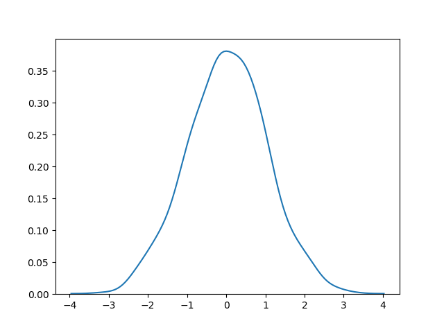
Binomial Distribution
Binomial Distribution
Binomial Distribution is a
Discrete Distribution
.
It describes the outcome of binary scenarios, e.g. toss of a coin, it will either be head or tails.
It has three parameters:
n
- number of trials.
p
- probability of occurence of each trial (e.g. for toss of a coin 0.5 each).
size
- The shape of the returned array.
Discrete Distribution:
The distribution is defined at separate set of events, e.g. a coin toss's result is discrete as it can be only head or tails whereas height of people is continuous as it can be 170, 170.1, 170.11 and so on.
Given 10 trials for coin toss generate 10 data points:
from numpy import random
x = random.binomial(n=10, p=0.5, size=10)
print(x)
Visualization of Binomial Distribution
from numpy import random
import matplotlib.pyplot as plt
import seaborn as sns
sns.distplot(random.binomial(n=10, p=0.5, size=1000), hist=True, kde=False)
plt.show()
Difference Between Normal and Binomial Distribution
The main difference is that normal distribution is continous whereas binomial is discrete, but if there are enough data points it will be quite similar to normal distribution with certain loc and scale.
Example
from numpy import random
import matplotlib.pyplot as plt
import seaborn as sns
sns.distplot(random.normal(loc=50, scale=5, size=1000), hist=False, label='normal')
sns.distplot(random.binomial(n=100, p=0.5, size=1000), hist=False, label='binomial')
plt.show()
Multinomial Distribution
Multinomial Distribution
Multinomial distribution is a generalization of binomial distribution.
It describes outcomes of multi-nomial scenarios unlike binomial where scenarios must be only one of two. e.g. Blood type of a population, dice roll outcome.
It has three parameters:
n
- number of possible outcomes (e.g. 6 for dice roll).
pvals
- list of probabilties of outcomes (e.g. [1/6,
size
- The shape of the returned array.
from numpy import random
x = random.multinomial(n=6, pvals=[1/6, 1/6, 1/6, 1/6, 1/6, 1/6])
print(x)
Note:
Multinomial samples will NOT produce a single value! They will produce one value for each
pval
.
Note:
As they are generalization of binomial distribution their visual representation and similarity of normal distribution is same as that of multiple binomial distributions.
Poisson Distribution
Poisson Distribution
Poisson Distribution is a
Discrete Distribution
.
It estimates how many times an event can happen in a specified time. e.g. If someone eats twice a day what is the probability he will eat thrice?
It has two parameters:
lam
- rate or known number of occurrences e.g. 2 for above problem.
size
- The shape of the returned array.
Generate a random 1x10 distribution for occurrence 2:
from numpy import random
x = random.poisson(lam=2, size=10)
print(x)
from numpy import random
import matplotlib.pyplot as plt
import seaborn as sns
sns.distplot(random.poisson(lam=2, size=1000), kde=False)
plt.show()
Difference Between Normal and Poisson Distribution
Normal distribution is continuous whereas poisson is discrete.
But we can see that similar to binomial for a large enough poisson distribution it will become similar to normal distribution with certain std dev and mean.
Example
from numpy import random
import matplotlib.pyplot as plt
import seaborn as sns
sns.distplot(random.normal(loc=50, scale=7, size=1000), hist=False, label='normal')
sns.distplot(random.poisson(lam=50, size=1000), hist=False, label='poisson')
plt.show()
Difference Between Binomial and Poisson Distribution
Binomial distribution only has two possible outcomes, whereas poisson distribution can have unlimited possible outcomes.
But for very large
n
and near-zero
p
binomial distribution is near identical to poisson distribution such that
n * p
is nearly equal to
lam
.
from numpy import random
import matplotlib.pyplot as plt
import seaborn as sns
sns.distplot(random.binomial(n=1000, p=0.01, size=1000), hist=False, label='binomial')
sns.distplot(random.poisson(lam=10, size=1000), hist=False, label='poisson')
plt.show()
Exponential Distribution
Exponential Distribution
Exponential distribution is used for describing time till next event e.g. failure/success etc.
It has two parameters:
scale
- inverse of rate ( see lam in poisson distribution ) defaults to 1.0.
size
- The shape of the returned array.
from numpy import random
x = random.exponential(scale=2, size=(2, 3))
print(x)
from numpy import random
import matplotlib.pyplot as plt
import seaborn as sns
sns.distplot(random.exponential(size=1000), hist=False)
plt.show()
Result:
Uniform Distribution
Uniform Distribution
Used to describe probability where every event has equal chances of occuring.
E.g. Generation of random numbers.
It has three parameters:
a
- lower bound - default 0 .0.
b
- upper bound - default 1.0.
size
- The shape of the returned array.
from numpy import random
import matplotlib.pyplot as plt
import seaborn as sns
sns.distplot(random.uniform(size=1000), hist=False)
plt.show()
Logistic Distribution
Logistic Distribution
Logistic Distribution is used to describe growth.
Used extensively in machine learning in
logistic regression
, neural networks etc.
It has three parameters:
loc
- mean, where the peak is. Default 0.
scale
- standard deviation, the flatness of distribution. Default 1.
size
- The shape of the returned array.
from numpy import random
x = random.logistic(loc=1, scale=2, size=(2, 3))
print(x)
Visualization of Logistic Distribution
Example
from numpy import random
import matplotlib.pyplot as plt
import seaborn as sns
sns.distplot(random.logistic(size=1000), hist=False)
plt.show()
Difference Between Logistic and Normal Distribution
Both distributions are near identical, but logistic distribution has more area under the tails, meaning it represents more possibility of occurrence of an event further away from mean.
For higher value of scale (standard deviation) the normal and logistic distributions are near identical apart from the peak.
from numpy import random
import matplotlib.pyplot as plt
import seaborn as sns
sns.distplot(random.normal(scale=2, size=1000), hist=False, label='normal')
sns.distplot(random.logistic(size=1000), hist=False, label='logistic')
plt.show()
Chi Square Distribution
Chi Square distribution is used as a basis to verify the hypothesis.
It has two parameters:
df
- (degree of freedom).
size
- The shape of the returned array.
from numpy import random
import matplotlib.pyplot as plt
import seaborn as sns
sns.distplot(random.chisquare(df=1, size=1000), hist=False)
plt.show()
Rayleigh and Pareto Distribution
Rayleigh Distribution
Rayleigh distribution is used in signal processing.
It has two parameters:
scale
- (standard deviation) decides how flat the distribution will be default 1.0).
size
- The shape of the returned array.
Visualization of Rayleigh Distribution
Example
from numpy import random
import matplotlib.pyplot as plt
import seaborn as sns
sns.distplot(random.rayleigh(size=1000), hist=False)
plt.show()
Pareto Distribution
A distribution following Pareto's law i.e. 80-20 distribution (20% factors cause 80% outcome).
It has two parameter:
a
- shape parameter.
size
- The shape of the returned array.
Visualization of Pareto Distribution
Example
from numpy import random
import matplotlib.pyplot as plt
import seaborn as sns
sns.distplot(random.pareto(a=2, size=1000), kde=False)
plt.show()
Result

Zipf Distribution
Zipf distritutions are used to sample data based on zipf's law.
Zipf's Law:
In a collection, the nth common term is 1/n times of the most common term. E.g. the 5th most common word in English occurs nearly 1/5 times as often as the most common word.
It has two parameters:
a
- distribution parameter.
size
- The shape of the returned array.
Visualization of Zipf Distribution
Sample 1000 points but plotting only ones with value < 10 for more meaningful chart.
Example
from numpy import random
import matplotlib.pyplot as plt
import seaborn as sns
x = random.zipf(a=2, size=1000)
sns.distplot(x[x<10], kde=False)
plt.show()
Result
ufunc
What are ufuncs?
ufuncs stands for "Universal Functions" and they are NumPy functions that operate on the
ndarray
object.
Why use ufuncs?
ufuncs are used to implement
vectorization
in NumPy which is way faster than iterating over elements.
They also provide broadcasting and additional methods like reduce, accumulate etc. that are very helpful for computation.
ufuncs also take additional arguments, like:
where
boolean array or condition defining where the operations should take place.
dtype
defining the return type of elements.
out
output array where the return value should be copied.
Addition using zip() method in python:
x = [1, 2, 3, 4]
y = [4, 5, 6, 7]
z = []
for i, j in zip(x, y):
z.append(i + j)
print(z)
How To Create Your Own ufunc
To create your own ufunc, you have to define a function, like you do with normal functions in Python, then you add it to your NumPy ufunc library with the
frompyfunc()
method.
The
frompyfunc()
method takes the following arguments:
function- the name of the function.
2. inputs
- the number of input arguments (arrays).
3. outputs
- the number of output arrays.
Create your own ufunc
for
addition:
import numpy as np
def myadd(x, y):
return x+y
myadd = np.frompyfunc(myadd, 2, 1)
print(myadd([1, 2, 3, 4], [5, 6, 7, 8]))
Data Analysis with Python
Getting Started with Pandas
Pandas
is an open-source library that is built on top of NumPy library. It is a Python package that offers various data structures and operations for manipulating numerical data and time series. It is mainly popular for importing and analyzing data much easier. Pandas is fast and it has high-performance & productivity for users.
Pandas Series is a one-dimensional labeled array capable of holding data of any type (integer, string, float, python objects, etc.). The axis labels are collectively called
index. Pandas Series is nothing but a column in an excel sheet.
Labels need not be unique but must be a hashable type. The object supports both integer and label-based indexing and provides a host of methods for performing operations involving the index
Getting Started with Pandas
GETTING STARTED
Creating a Pandas Series
In the real world, a Pandas Series will be created by loading the datasets from existing storage, storage can be SQL Database, CSV file, and Excel file.
Pandas Series can be created from the lists, dictionary, and from a scalar value etc. Series can be created in different ways, here are some ways by which we create a series:
Creating a series from array:
In order to create a series from array, we have to import a numpy module and have to use array() function.
# import pandas as pd
import pandas as pd
# import numpy as np
import numpy as np
# simple array
data = np.array(['g', 'e', 'e', 'k', 's'])
ser = pd.Series(data)
print(ser)
#pd.series(list/other datatype)
'''
Output:
0 g
1 e
2 e
3 k
4 s
dtype: object
Create Labels
With the
index
argument, you can name your own labels.
import pandas as pd
a=[1,23,4,5]
myvar = pd.Series(a, index = ["x","y","z"])
print(myvar)
From a dictionary, keys becoming index labels
fills the rest of the data with NaN
import pandas as pd
calories = {"day1": 420, "day2": 380, "day3": 390}
myvar = pd.Series(calories, index = ["day1", "day2"])
print(myvar)
Dataset Walkthrough
Dataset Walkthrough
read_csv
Syntax of read_csv()
Syntax: pd.read_csv
(filepath_or_buffer, sep=’ ,’ , header=’infer’, index_col=None, usecols=None, engine=None, skiprows=None, nrows=None)
Parameters:
- filepath_or_buffer: It is the location of the file which is to be retrieved using this function. It accepts any string path or URL of the file.
- sep: It stands for separator, default is ‘, ‘ as in CSV(comma separated values).
- header: It accepts int, a list of int, row numbers to use as the column names, and the start of the data. If no names are passed, i.e., header=None, then, it will display the first column as 0, the second as 1, and so on.
- usecols: It is used to retrieve only selected columns from the CSV file.
- nrows: It means a number of rows to be displayed from the dataset.
- index_col: If None, there are no index numbers displayed along with records.
- skiprows: Skips passed rows in the new data frame.
If we want to see the data of a specific column we can store the dataset in a variable and print it enclosing the column name inside the square brackets.
df=pd.read_csv('example1.csv')
print(df['Magnitude'])'''
Output
0 6.0
1 5.8
2 6.2
3 5.8
4 5.8
...
23407 5.6
23408 5.5
23409 5.9
23410 6.3
23411 5.5
Name: Magnitude, Length: 23412, dtype: float64
If we want to select multiple columns we need to give double square brackets
print(df[['Magnitude','Latitude']])
'''
Magnitude Latitude
0 6.0 19.2460
1 5.8 1.8630
2 6.2 -20.5790
3 5.8 -59.0760
4 5.8 11.9380
... ... ...
23407 5.6 38.3917
23408 5.5 38.3777
23409 5.9 36.9179
23410 6.3 -9.0283
23411 5.5 37.3973
[23412 rows x 2 columns]'''
Pandas will only return the first 5 rows and last 5 rows
to_string() to print entire DataFrame
import pandas as pd
df = pd.read_csv('data.csv')
print(df.to_string())
max_rows
The number of rows returned is defined in Pandas option settings.
You can check your system's maximum rows with the
pd.options.display.max_rows
statement.
Example
Check the number of maximum returned rows:
import pandas as pd
print(pd.options.display.max_rows)
DataFrame
Data sets in Pandas are usually multi-dimensional tables, called DataFrames.
Series is like a column, a DataFrame is the whole table.
import pandas as pd
data = {
"calories": [420, 380, 390],
"duration": [50, 40, 45]
}
myvar = pd.DataFrame(data)
print(myvar)
'''
calories duration
0 420 50
1 380 40
2 390 45
Pandas
DataFrame.columns attribute return the column labels of the given Dataframe.
print(df.columns)
Output
Index(['Date', 'Latitude', 'Longitude', 'Magnitude'], dtype='object')
data label associated is index
df.loc[] - Locate column indexes and give column name
df.drop() - Delete column
df.column.str.replace("old_colun","new_column")
df.rename()Dataframe methods
| Property/Method | Description |
|---|
| abs() | Return a DataFrame with the absolute value of each value |
| add() | Adds the values of a DataFrame with the specified value(s) |
| add_prefix() | Prefix all labels |
| add_suffix() | Suffix all labels |
| agg() | Apply a function or a function name to one of the axis of the DataFrame |
| aggregate() | Apply a function or a function name to one of the axis of the DataFrame |
| align() | Aligns two DataFrames with a specified join method |
| all() | Return True if all values in the DataFrame are True, otherwise False |
| any() | Returns True if any of the values in the DataFrame are True, otherwise False |
| append() | Append new columns |
| applymap() | Execute a function for each element in the DataFrame |
| apply() | Apply a function to one of the axis of the DataFrame |
| assign() | Assign new columns |
| astype() | Convert the DataFrame into a specified dtype |
| at | Get or set the value of the item with the specified label |
| axes | Returns the labels of the rows and the columns of the DataFrame |
| bfill() | Replaces NULL values with the value from the next row |
| bool() | Returns the Boolean value of the DataFrame |
| columns | Returns the column labels of the DataFrame |
| combine() | Compare the values in two DataFrames, and let a function decide which values to keep |
| combine_first() | Compare two DataFrames, and if the first DataFrame has a NULL value, it will be filled with the respective value from the second DataFrame |
| compare() | Compare two DataFrames and return the differences |
| convert_dtypes() | Converts the columns in the DataFrame into new dtypes |
| corr() | Find the correlation (relationship) between each column |
| count() | Returns the number of not empty cells for each column/row |
| cov() | Find the covariance of the columns |
| copy() | Returns a copy of the DataFrame |
| cummax() | Calculate the cumulative maximum values of the DataFrame |
| cummin() | Calculate the cumulative minmum values of the DataFrame |
| cumprod() | Calculate the cumulative product over the DataFrame |
| cumsum() | Calculate the cumulative sum over the DataFrame |
| describe() | Returns a description summary for each column in the DataFrame |
| diff() | Calculate the difference between a value and the value of the same column in the previous row |
| div() | Divides the values of a DataFrame with the specified value(s) |
| dot() | Multiplies the values of a DataFrame with values from another array-like object, and add the result |
| drop() | Drops the specified rows/columns from the DataFrame |
| drop_duplicates() | Drops duplicate values from the DataFrame |
| droplevel() | Drops the specified index/column(s) |
| dropna() | Drops all rows that contains NULL values |
| dtypes | Returns the dtypes of the columns of the DataFrame |
| duplicated() | Returns True for duplicated rows, otherwise False |
| empty | Returns True if the DataFrame is empty, otherwise False |
| eq() | Returns True for values that are equal to the specified value(s), otherwise False |
| equals() | Returns True if two DataFrames are equal, otherwise False |
| eval | Evaluate a specified string |
| explode() | Converts each element into a row |
| ffill() | Replaces NULL values with the value from the previous row |
| fillna() | Replaces NULL values with the specified value |
| filter() | Filter the DataFrame according to the specified filter |
| first() | Returns the first rows of a specified date selection |
| floordiv() | Divides the values of a DataFrame with the specified value(s), and floor the values |
| ge() | Returns True for values greater than, or equal to the specified value(s), otherwise False |
| get() | Returns the item of the specified key |
| groupby() | Groups the rows/columns into specified groups |
| gt() | Returns True for values greater than the specified value(s), otherwise False |
| head() | Returns the header row and the first 10 rows, or the specified number of rows |
| iat | Get or set the value of the item in the specified position |
| idxmax() | Returns the label of the max value in the specified axis |
| idxmin() | Returns the label of the min value in the specified axis |
| iloc | Get or set the values of a group of elements in the specified positions |
| index | Returns the row labels of the DataFrame |
| infer_objects() | Change the dtype of the columns in the DataFrame |
| info() | Prints information about the DataFrame |
| insert() | Insert a column in the DataFrame |
| interpolate() | Replaces not-a-number values with the interpolated method |
| isin() | Returns True if each elements in the DataFrame is in the specified value |
| isna() | Finds not-a-number values |
| isnull() | Finds NULL values |
| items() | Iterate over the columns of the DataFrame |
| iteritems() | Iterate over the columns of the DataFrame |
| iterrows() | Iterate over the rows of the DataFrame |
| itertuples() | Iterate over the rows as named tuples |
| join() | Join columns of another DataFrame |
| last() | Returns the last rows of a specified date selection |
| le() | Returns True for values less than, or equal to the specified value(s), otherwise False |
| loc | Get or set the value of a group of elements specified using their labels |
| lt() | Returns True for values less than the specified value(s), otherwise False |
| keys() | Returns the keys of the info axis |
| kurtosis() | Returns the kurtosis of the values in the specified axis |
| mask() | Replace all values where the specified condition is True |
| max() | Return the max of the values in the specified axis |
| mean() | Return the mean of the values in the specified axis |
| median() | Return the median of the values in the specified axis |
| melt() | Reshape the DataFrame from a wide table to a long table |
| memory_usage() | Returns the memory usage of each column |
| merge() | Merge DataFrame objects |
| min() | Returns the min of the values in the specified axis |
| mod() | Modules (find the remainder) of the values of a DataFrame |
| mode() | Returns the mode of the values in the specified axis |
| mul() | Multiplies the values of a DataFrame with the specified value(s) |
| ndim | Returns the number of dimensions of the DataFrame |
| ne() | Returns True for values that are not equal to the specified value(s), otherwise False |
| nlargest() | Sort the DataFrame by the specified columns, descending, and return the specified number of rows |
| notna() | Finds values that are not not-a-number |
| notnull() | Finds values that are not NULL |
| nsmallest() | Sort the DataFrame by the specified columns, ascending, and return the specified number of rows |
| nunique() | Returns the number of unique values in the specified axis |
| pct_change() | Returns the percentage change between the previous and the current value |
| pipe() | Apply a function to the DataFrame |
| pivot() | Re-shape the DataFrame |
| pivot_table() | Create a spreadsheet pivot table as a DataFrame |
| pop() | Removes an element from the DataFrame |
| pow() | Raise the values of one DataFrame to the values of another DataFrame |
| prod() | Returns the product of all values in the specified axis |
| product() | Returns the product of the values in the specified axis |
| quantile() | Returns the values at the specified quantile of the specified axis |
| query() | Query the DataFrame |
| radd() | Reverse-adds the values of one DataFrame with the values of another DataFrame |
| rdiv() | Reverse-divides the values of one DataFrame with the values of another DataFrame |
| reindex() | Change the labels of the DataFrame |
| reindex_like() | ?? |
| rename() | Change the labels of the axes |
| rename_axis() | Change the name of the axis |
| reorder_levels() | Re-order the index levels |
| replace() | Replace the specified values |
| reset_index() | Reset the index |
| rfloordiv() | Reverse-divides the values of one DataFrame with the values of another DataFrame |
| rmod() | Reverse-modules the values of one DataFrame to the values of another DataFrame |
| rmul() | Reverse-multiplies the values of one DataFrame with the values of another DataFrame |
| round() | Returns a DataFrame with all values rounded into the specified format |
| rpow() | Reverse-raises the values of one DataFrame up to the values of another DataFrame |
| rsub() | Reverse-subtracts the values of one DataFrame to the values of another DataFrame |
| rtruediv() | Reverse-divides the values of one DataFrame with the values of another DataFrame |
| sample() | Returns a random selection elements |
| sem() | Returns the standard error of the mean in the specified axis |
| select_dtypes() | Returns a DataFrame with columns of selected data types |
| shape | Returns the number of rows and columns of the DataFrame |
| set_axis() | Sets the index of the specified axis |
| set_flags() | Returns a new DataFrame with the specified flags |
| set_index() | Set the Index of the DataFrame |
| size | Returns the number of elements in the DataFrame |
| skew() | Returns the skew of the values in the specified axis |
| sort_index() | Sorts the DataFrame according to the labels |
| sort_values() | Sorts the DataFrame according to the values |
| squeeze() | Converts a single column DataFrame into a Series |
| stack() | Reshape the DataFrame from a wide table to a long table |
| std() | Returns the standard deviation of the values in the specified axis |
| sum() | Returns the sum of the values in the specified axis |
| sub() | Subtracts the values of a DataFrame with the specified value(s) |
| swaplevel() | Swaps the two specified levels |
| T | Turns rows into columns and columns into rows |
| tail() | Returns the headers and the last rows |
| take() | Returns the specified elements |
| to_xarray() | Returns an xarray object |
| transform() | Execute a function for each value in the DataFrame |
| transpose() | Turns rows into columns and columns into rows |
| truediv() | Divides the values of a DataFrame with the specified value(s) |
| truncate() | Removes elements outside of a specified set of values |
| update() | Update one DataFrame with the values from another DataFrame |
| value_counts() | Returns the number of unique rows |
| values | Returns the DataFrame as a NumPy array |
| var() | Returns the variance of the values in the specified axis |
| where() | Replace all values where the specified condition is False |
| xs() | Returns the cross-section of the DataFrame |
| __iter__() | Returns an iterator of the info axes |
Pandas Read JSON
Read JSON
Big data sets are often stored, or extracted as JSON.
JSON is plain text, but has the format of an object, and is well known in the world of programming, including Pandas.
In our examples we will be using a JSON file called 'data.json'.
import pandas as pd
df=pandas.read_json('data.json')
print(df.to_string())
Load a Python Dictionary into a DataFrame:
import pandas as pd
data = {
"Duration":{
"0":60,
"1":60,
"2":60,
"3":45,
"4":45,
"5":60
},
"Pulse":{
"0":110,
"1":117,
"2":103,
"3":109,
"4":117,
"5":102
},
"Maxpulse":{
"0":130,
"1":145,
"2":135,
"3":175,
"4":148,
"5":127
},
"Calories":{
"0":409,
"1":479,
"2":340,
"3":282,
"4":406,
"5":300
}
}
df = pd.DataFrame(data)
print(df)
Analyzing DataFrames
Pandas - Analyzing DataFrames
Viewing the Data
The
head()
method returns the headers and a specified number of rows, starting from the top.
import pandas as pd
df = pd.read_csv('data.csv')
print(df.head(10))
The
tail() method returns the headers and a specified number of rows, starting from the bottom.
The DataFrames object has a method called
info(), that gives you more information about the data set.
<class 'pandas.core.frame.DataFrame'>
RangeIndex: 169 entries, 0 to 168
Data columns (total 4 columns):
# Column Non-Null Count Dtype
--- ------ -------------- -----
0 Duration 169 non-null int64
1 Pulse 169 non-null int64
2 Maxpulse 169 non-null int64
3 Calories 164 non-null float64
dtypes: float64(1), int64(3)
memory usage: 5.4 KB
None
Statistics
np.mean(arr,axis)
Weighted Average
- In weighted average, each quantity is assigned a weight, which is multiplied by the quantity to calculate the average.
For given quantities X
1, X
2, X
3, X
4, …… X
n. Each associated with weights w
1, w
2, w
3, w
4, …… w
nWeighted Average = ( w1 × X1 + w2 × X2 + w3 × X3 + w4 × X4 +…..+ wn × Xn)/(w1 + w2 + w3 + w4 +…….+ wn)
or
W = ∑wi × xi/ ∑wi
or
W = Sum of (Product of weights with their respective quantities)/ Sum of all the weights
arr=np.array([1,2,3,4,7,9])
weight=np.array([1,2,3,4,5,6])
np.average(arr,weights=weight)
numpy.median(arr, axis = None) :
Compute the median of the given data (array elements) along the specified axis.
Mode
arr=np.array([1,2,1,1,3,2,2,2,2,2,6,7,8,8,8,10,4,7,9])
from collections import Counter
count=Counter(arr)
print(count.most_common(1) #1 here means the first max one
Standard Deviation and Variance
Standard Deviation
What is Standard Deviation?
Standard deviation is a metric that represents the amount to which various values of a statistical series tend to fluctuate or disperse from its mean or median. It describes how the values are distributed over the data sample and is a measure of the data points’ deviation from the mean. The square root of the variance of a sample, statistical population, random variable, data collection, or probability distribution is its standard deviation.
Standard Deviation Formula
The formula for sample standard deviation(s) is as follows:
where,
xi = data values in the set
x̄ = mean of the data
N = number of data values
import numpy as np
def standard_deviation(arr):
mean=arr.mean()
final_val=0
for i in arr:
val=(i-mean)**2
final_val+=val
return (final_val/len(arr))**0.5
values=np.array([7,5,9,10,4,14])
sd=standard_deviation(values)
print(sd)
Variance
Variance is defined as a measure of dispersion, a metric used to assess the variability of data around an average value. It is a statistical measurement used to determine the spread of values in a data collection in relation to the average or mean value. Variance is divided into two main categories: population variance and sample variance. The population variance is used to determine how each data point in a particular population fluctuates or is spread out, while the sample variance is used to find the average of the squared deviations from the mean.
Formula
The variance for a data set is denoted by the symbol σ
2. For population data, its formula is equal to the sum of squared differences of data entries from the mean divided by the number of entries. While for sample data, we divide the numerator value by the difference between the number of entries and unity.
If the data set is a sample the formula of variance is given by,
σ2 = ∑ (xi – x̄)2/(n – 1)
where,
x̄ is the mean of data set.
∑ (xi – x̄)2 is the sum of squares of difference of each observation from mean,
n is the total number of observations.
If we have a population data set, the formula is written as,
σ2 = ∑ (xi – x̄)2/n
import numpy as np
def standard_deviation(arr):
mean=arr.mean()
final_val=0
for i in arr:
val=(i-mean)**2
final_val+=val
return (final_val/len(arr))**0.5
values=np.array([7,5,9,10,4,14])
sd=standard_deviation(values)
print(sd**2)
Normal Distribution
Normal Distribution
Introduction –
Whenever a random experiment is replicated, the Random Variable that equals the average (or total) result over the replicates tends to have a normal distribution as the number of replicates becomes large. It is one of the cornerstones of probability theory and statistics, because of the role it plays in the Central Limit Theorem, and because many real-world phenomena involve random quantities that are approximately normal (e.g., errors in scientific measurement). It is also known by other names such as- Gaussian Distribution, Bell shaped Distribution.
It can be observed from the above graph that the distribution is symmetric about its center, which is also the mean (0 in this case). This makes the probability of events at equal deviations from the mean, equally probable. The density is highly centered around the mean, which translates to lower probabilities for values away from the mean.
Probability Density Function –
The probability density function of the general normal distribution is given as-
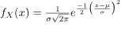
In the above formula, all the symbols have their usual meanings,
is the Standard Deviation and

is the Mean. It is easy to get overwhelmed by the above formula while trying to understand everything in one glance, but we can try to break it down into smaller pieces so as to get an intuition as to what is going on. The
z-score is a measure of how many standard deviations away a data point is from the mean. Mathematically,
The exponent of
in the above formula is the square of the z-score times

The exponent of

in the above formula is the square of the z-score times

. This is actually in accordance to the observations that we made above. Values away from the mean have a lower probability compared to the values near the mean. Values away from the mean will have a higher z-score and consequently a lower probability since the exponent is negative. The opposite is true for values closer to the mean. This gives way for the
68-95-99.7 rule, which states that the percentage of values that lie within a band around the mean in a normal distribution with a width of two, four and six standard deviations, comprise 68%, 95% and 99.7% of all the values. The figure given below shows this rule-
The effects of

and

on the distribution are shown below. Here

is used to reposition the center of the distribution and consequently move the graph left or right, and

is used to flatten or inflate the curve-
 Expectation
Expectation expectation
click here or expected value E[x] can be found by simply multiply the probability distribution function with x and integrate over all possible values Let ‘X’ be a normal distributed random variable with parameters

ans

. we know that area or the region inside normal distribution curve is 1 (because probability is 1) therefore= 1
writing x as (x-

) +
yields
letting y = x-

�[�]=1�2�$∫−∞+∞�∗�−12(��)2��$+$�∗∫−∞+∞��(�)��$first one is symmetric about y-axis, hence value of that integral is 0.

�[�]=0+�∗1therefore ,
expectationvariance =
standard deviation =
Standard Normal Distribution –
In the General Normal Distribution, if the Mean is set to 0 and the Standard Deviation is set to 1, then the corresponding distribution obtained is called the Standard Normal Distribution. The Probability Density function now becomes-
The cumulative density function of normal distribution does not give a closed formula. Hence precomputed values formulated in tables are used wherever required. But these tables only contain data for the standard distribution. In order to find the cumulative probability for a general normal distribution, it is first standardized and then computed using the value tables. This is beneficial in two ways- 1. First, there needs to be only one table to compute probabilities for all normal distributions. 2. Second, the table size is limited to 40 to 50 rows and 10 columns. This is due 68-95-99.7 rule explained above, which says that values within 3 standard deviations of the mean account for 99.7% probability. So beyond X=3 (
) the probabilities are approximately 0.
If X is a normal random variable with E(X)= and V(X)=,
the random variable is a normal random variable with E(Z)=0 and V(Z)=1.
That is, Z is a standard normal random variable.• Example –
- uppose that the current measurements in a strip of wire are assumed to follow a normal distribution with a mean of 10 milliamperes and a variance of four (milliamperes). What is the probability that a measurement exceeds 13 milliamperes?
• Solution – Let X denote the current in milliamperes. The requested probability can be represented as P (X > 13). Let Z = (X ? 10) 2. With the Normal Distribution now standardized, the probability P(X > 13) = P(Z > 1.5) can now be easily computed. Looking at the above table, first we find 1.5 in the X column, and then since there are no more digits of significance we look for 0.00 in the Y column. The corresponding cell gives us the value of
So,
Expected value , variance , standard deviation
The expected value of a standard normal random variable X is expected valuevariance

standard deviation
Data Preprocessing
Data Preprocessing - Removing Null Value Rows
While making a Data Frame from a csv file, many blank columns are imported as null value into the Data Frame which later creates problems while operating that data frame. Pandas isnull() and notnull() methods are used to check and manage NULL values in a data frame.
Dataframe.isnull()
Syntax: Pandas.isnull(“DataFrame Name”) or DataFrame.isnull()
Parameters: Object to check null values for
Return Type: Dataframe of Boolean values which are True for NaN values
import pandas as pd
data = pd.read_csv("googleplaystore.csv")
print(data.isnull().sum())
'''
Output:
App 0
Category 0
Rating 1474
Reviews 0
Size 0
Installs 0
Type 1
Price 0
Content Rating 1
Genres 0
Last Updated 0
Current Ver 8
Android Ver 3
dtype: int64
we can delete all the rows which are present in our dataframe with the help of
dropna() function. Let us see the implementation of that now.
df = data.dropna()
print(df.isnull().sum())
'''
App 0
Category 0
Rating 0
Reviews 0
Size 0
Installs 0
Type 0
Price 0
Content Rating 0
Genres 0
Last Updated 0
Current Ver 0
Android Ver 0
dtype: int64
df=pd.read_csv('')
df.head()
print(df['Rating'])
Finding out the Average Rating
s=0
for i in df['Rating']
s+=i
s=int(s)
a=s/len(df['Rating'])
print("The average rating is" ,round(a,3))
Total Number of Unique Categories
We can use the
unique()
function to get all the unique values of
Category
column
df['Category'].unique()
'''
array(['ART_AND_DESIGN', 'AUTO_AND_VEHICLES', 'BEAUTY',
'BOOKS_AND_REFERENCE', 'BUSINESS', 'COMICS', 'COMMUNICATION',
'DATING', 'EDUCATION', 'ENTERTAINMENT', 'EVENTS', 'FINANCE',
'FOOD_AND_DRINK', 'HEALTH_AND_FITNESS', 'HOUSE_AND_HOME',
'LIBRARIES_AND_DEMO', 'LIFESTYLE', 'GAME', 'FAMILY', 'MEDICAL',
'SOCIAL', 'SHOPPING', 'PHOTOGRAPHY', 'SPORTS', 'TRAVEL_AND_LOCAL',
'TOOLS', 'PERSONALIZATION', 'PRODUCTIVITY', 'PARENTING', 'WEATHER',
'VIDEO_PLAYERS', 'NEWS_AND_MAGAZINES', 'MAPS_AND_NAVIGATION'],
dtype=object)
To get the total number of Unique values we can use the
nunique() function.
Percentage of Free and Paid Apps
ff=f/len(df['Type'])*100
ff=round(ff,2)
pp=100-ff
pp=round(pp,2)
print(f"A total of {ff}% of the apps are Free and {pp}% of the apps are paid")
Data Analysis Automatic Categorical
Total number of apps in each category
categories = {}
for name in df['Category].unique():
ct = 0
for i in df['Category']:
if(i==name):
ct+=1
categories[name] = ct
print(categories)
'''
{'ART_AND_DESIGN': 65, 'AUTO_AND_VEHICLES': 85,
'BEAUTY': 53, 'BOOKS_AND_REFERENCE': 231, 'BUSINESS': 460,
'COMICS': 60, 'COMMUNICATION': 387, 'DATING': 234, 'EDUCATION': 156,
'ENTERTAINMENT': 149, 'EVENTS': 64, 'FINANCE': 366, 'FOOD_AND_DRINK': 127,
'HEALTH_AND_FITNESS': 341, 'HOUSE_AND_HOME': 88, 'LIBRARIES_AND_DEMO': 85, 'LIFESTYLE': 382, 'GAME': 1144,
'FAMILY': 1972, 'MEDICAL': 463, 'SOCIAL': 295, 'SHOPPING': 260, 'PHOTOGRAPHY': 335, 'SPORTS': 384, 'TRAVEL_AND_LOCAL': 258,
'TOOLS': 843, 'PERSONALIZATION': 392, 'PRODUCTIVITY': 424, 'PARENTING': 60, 'WEATHER': 82, 'VIDEO_PLAYERS': 175, 'NEWS_AND_MAGAZINES': 283,
'MAPS_AND_NAVIGATION': 137, '1.9': 1}Total number of apps in each Type
types = {}
for name in df['Type'].unique():
ct = 0
for i in df['Type']:
if(i == name):
ct += 1
types[name] = ct
print(types)Total number of apps in each Content Rating
content_rating = {}
for name in df['Content Rating'].unique():
ct = 0
for i in df['Content Rating']:
if(i == name):
ct += 1
content_rating[name] = ct
print(content_rating)Null Values Handling
Null Values Handling - Numeric
we can handle the null values instead of dropping them.
So we can see we don't have a big dataset and there are NaN or null values present in almost every column. So now how would we handle them?
SimpleImputer
is a scikit-learn class which is helpful in handling the missing data in the predictive model dataset. It replaces the NaN values with a specified placeholder.
It is implemented by the use of the
SimpleImputer()
method which takes the following arguments :
It is implemented by the use of the
SimpleImputer()
method which takes the following arguments :
missing_values : The missing_values placeholder which has to be imputed. By default is NaN
strategy : The data which will replace the NaN values from the dataset. The strategy argument can take the values – ‘mean'(default), ‘median’, ‘most_frequent’ and ‘constant’.
fill_value : The constant value to be given to the NaN data using the constant strategy.
import numpy as np
from sklearn.impute import SimpleImputer
imputer = SimpleImputer(missing_values = np.nan, strategy = 'most_frequent')
df.iloc[:,1:3]=imputer.fit_transform(df.iloc[:,1:3].values)
Null Values Handling - Categorical
imputer = SimpleImputer(missing_values = np.nan, strategy = 'most_frequent')
df.iloc[:,:]=imputer.fit_transform(df.iloc[:,:].values)
Googleplaystore dataset
So we have a huge number of data which is null in the
Rating
column. We can drop the rows which are null but that would not be optimal because the number of data. is very much. So we are going to use the
SimpleImputer
and replace the null values with the mean of the Rating column.
Let's get started with the coding implementation now.
impute = SimpleImputer(missing_values = np.nan , strategy = 'mean')
df.iloc[ : , 2:3 ] =impute.fit_transform(df.iloc[ : , 2:3 ].values)
Data Analysis
Data Analysis with Multiple Columns
impute = SimpleImputer(missing_values = np.nan , strategy = 'mean')
impute.fit(df.iloc[ : , 2:3 ].values)
df.iloc[ : , 2:3 ] = impute.transform(df.iloc[ : , 2:3 ].values)
df = df.dropna()
df=df.values
Q1. How many free apps are there in ART_AND_DESIGN?
c = 0
for i in df:
if(i[1] == 'ART_AND_DESIGN' and i[6] == 'Free'):
c += 1
print("There are",c,'free apps from ART_AND_DESIGN')
Q4. List all the free apps with rating more then 4.5 and category is FAMILY?
print("*"*100)
print(" These are the free apps where Category is FAMILY with rating more than 4.5.")
print("*"*100)
for i in df:
if(i[1] == 'FAMILY' and i[2] > 4.5 and i[6] == 'Free'):
print(i[0])
print("-"*100)
Data Analysis using Conditions
Q1-
df_pr = df[df['Category'] == 'ART_AND_DESIGN']
print(len(df_pr[df_pr['Rating'] > 4.5]))
List all free apps with rating more than 4.5 and family
df_pr = df[df['Category'] == 'FAMILY']
df_pr = df_pr[df_pr['Rating'] > 4.5]
df_pr[df_pr['Type'] == 'Free']
df_pr = df[df['Category'] == ‘Family’]
df_pr = df[df['Rating'] > 4.5]
len(df_pr[df_pr[Type]== ‘free’])
GroupBy
GroupBy in Pandas
- oupby is a pretty simple concept. We can create a grouping of categories and apply a function to the categories. It’s a simple concept but it’s an extremely valuable technique that’s widely used in data science. In real data science projects, you’ll be dealing with large amounts of data and trying things over and over, so for efficiency, we use Groupby concept. Groupby concept is really important because it’s ability to aggregate data efficiently, both in performance and the amount code is magnificent. Groupby mainly refers to a process involving one or more of the following steps they are:
• Splitting :
- t is a process in which we split data into group by applying some conditions on datasets.
• Applying :
- t is a process in which we apply a function to each group independently
• Combining :
It is a process in which we combine different datasets after applying groupby and results into a data structure
- following image will help in understanding a process involve in Groupby concept.
1. Group the unique values from the Team column
- . Now there’s a bucket for each group
- Toss the other data into the buckets

- Apply a function on the weight column of each bucket.
Now let us see the implementation of this in our googleplaystore dataset.
So let us see our dataset again before getting started.
Python3
import pandas as pd
import numpy as np
from sklearn.impute import SimpleImputer
df=pd.read_csv('googleplaystore.csv')
print(df.head())
Let us handle the null values again before getting started.
Python3
impute = SimpleImputer(missing_values = np.nan , strategy = 'mean')
impute.fit(df.iloc[ : , 2:3 ].values)
df.iloc[ : , 2:3 ] = impute.transform(df.iloc[ : , 2:3 ].values)
df = df.dropna()
Q1. Which category is having maximum average rating Descending order?
df.groupby('Category').mean()['Rating'].sort_values(ascending=False)Q2. How many paid apps are there in each category in Descending Order?
df_pr = df[df['Type'] == 'Paid']
df_pr.groupby('Category').count()['Type'].sort_values(ascending = False)
Tableau
- Tableau:
- bleau is a very powerful data visualization tool that can be used by data analysts, scientists, statisticians, etc. to visualize the data and get a clear opinion based on the data analysis. Tableau is very famous as it can take in data and produce the required data visualization output in a very short time.
• Dashboard:
A dashboard could also a set of several views, letting you compare a selection of data simultaneously. For example, if you’ve got a group of views that you simply review a day, you’ll create a dashboard that displays all the views directly, instead of navigating to separate worksheets. Like worksheets, you access dashboards from tabs at the lowest of a workbook. Data in sheets and dashboards are connected; once you modify a sheet, any dashboards containing it change, and therefore the other way around. Both sheets and dashboards update with the newest available data from the info source.
Dataset used in the given examples is
Dataset
.
For this we have to follow some steps:
Open the Tableau tool and connect a dataset into it. Drag and drop the one sheet of the connected dataset. Click on sheet1 to open the tableau worksheet. On clicking Sheet1 you will get whole dataset attributes on the left side and a worksheet for work.
CONTINUOUS DATA VS DISCRETE DATA
Tableau represents data differently in the view depending on whether the field is discrete (blue), or continuous (green). Continuous and discrete are mathematical terms. Continuous means "forming an unbroken whole, without interruption"; discrete means "individually separate and distinct."
Green measuresand dimensionsare continuous. Continuous field values are treated as an infinite range. Generally, continuous fields add axes to the view.
Blue measuresand dimensionsare discrete. Discrete values are treated as finite. Generally, discrete fields add headers to the view.
Examples of continuous and discrete fields used in a view
In the example on the left (below), because the Quantity field is set to Continuous, it creates a horizontal axis along the bottom of the view. The green background and the axis help you to see that it's a continuous field.
In the example on the right, the Quantity field has been set to Discrete. It creates horizontal headers instead of an axis. The blue background and the horizontal headers help you to see that it's discrete.
A parameter is a workbook variable such as a number, date, or string that can replace a constant value in a calculation, filter, or reference line.
You can even create a
dynamic
parameter that’s set to automatically refresh its current value (to the result of a single-value, view-independent calculation), list of values (based on a data source column), or range of values. This will happen each time the workbook is opened and Tableau connects to the data source referenced by the parameter, or whenever you select Refresh from the data source’s context menu.
Parameters are useful when you want to add interactivity and flexibility to a report, or to experiment with what-if scenarios. Suppose you are unsure which fields to include in your view or which layout would work best for your viewers. You can incorporate parameters into your view to let viewers choose how they want to look at the data.
When you use parameters, you need to tie them to the view in some way:
You can use parameters in calculations and calculated fields that are used in the view.
You can display the parameter control in the view for users to select parameters.
MEASURE VS DIMENSION
When you connect to a new data source, Tableau assigns each field in the data source as dimension or measure in the Data pane, depending on the type of data the field contains. You use these fields to build views of your data.
Dimensions contain qualitative values (such as names, dates, or geographical data). You can use dimensions to categorize, segment, and reveal the details in your data. Dimensions affect the level of detail in the view.
Measures contain numeric, quantitative values that you can measure. Measures can be aggregated. When you drag a measure into the view, Tableau applies an aggregation to that measure (by default).
Tableau data
CONTINUOUS DATA VS DISCRETE DATA
Tableau represents data differently in the view depending on whether the field is discrete (blue), or continuous (green). Continuous and discrete are mathematical terms. Continuous means "forming an unbroken whole, without interruption"; discrete means "individually separate and distinct."
Green measuresand dimensionsare continuous. Continuous field values are treated as an infinite range. Generally, continuous fields add axes to the view.
Blue measuresand dimensionsare discrete. Discrete values are treated as finite. Generally, discrete fields add headers to the view.
Examples of continuous and discrete fields used in a view
In the example on the left (below), because the Quantity field is set to Continuous, it creates a horizontal axis along the bottom of the view. The green background and the axis help you to see that it's a continuous field.
In the example on the right, the Quantity field has been set to Discrete. It creates horizontal headers instead of an axis. The blue background and the horizontal headers help you to see that it's discrete.
A parameter is a workbook variable such as a number, date, or string that can replace a constant value in a calculation, filter, or reference line.
You can even create a
dynamic
parameter that’s set to automatically refresh its current value (to the result of a single-value, view-independent calculation), list of values (based on a data source column), or range of values. This will happen each time the workbook is opened and Tableau connects to the data source referenced by the parameter, or whenever you select Refresh from the data source’s context menu.
Parameters are useful when you want to add interactivity and flexibility to a report, or to experiment with what-if scenarios. Suppose you are unsure which fields to include in your view or which layout would work best for your viewers. You can incorporate parameters into your view to let viewers choose how they want to look at the data.
When you use parameters, you need to tie them to the view in some way:
You can use parameters in calculations and calculated fields that are used in the view.
You can display the parameter control in the view for users to select parameters.
MEASURE VS DIMENSION
When you connect to a new data source, Tableau assigns each field in the data source as dimension or measure in the Data pane, depending on the type of data the field contains. You use these fields to build views of your data.
Dimensions contain qualitative values (such as names, dates, or geographical data). You can use dimensions to categorize, segment, and reveal the details in your data. Dimensions affect the level of detail in the view.
Measures contain numeric, quantitative values that you can measure. Measures can be aggregated. When you drag a measure into the view, Tableau applies an aggregation to that measure (by default).
A line chart, also referred to as a line graph or a line plot, connects a series of data points using a line. This chart type presents sequential values to help you identify trends. Most of the time, the x-axis (horizontal axis) represents a sequential progression of values. The y-axis (vertical axis) then tells you the values for a selected metric across that progression. This is a common chart and is great to use when you want to show data over time.
A line chart supports monitoring behavior in a set of data. These charts are useful for more than tracking change over time. They also help highlight differences and correlations within your data. Furthermore, a line chart can help a viewer make predictions about what might happen next.
Data that is measured in a continuous progression works well in a line chart format.
Use scatter plots to visualize relationships between numerical variables.
In Tableau, you create a scatter plot by placing at least one measure on the Columns shelf and at least one measure on the Rows shelf. If these shelves contain both dimensions and measures, Tableau places the measures as the innermost fields, which means that measures are always to the right of any dimensions that you have also placed on these shelves.
A scatter plot can use several mark types. By default, Tableau uses the shape mark type. Depending on your data, you might want to use another mark type, such as a circle or a square.
Fundamentals of Tableau
ADD CALCULATED FIELDS
ADD CALCULATED FIELDS
Sometimes your data source does not contain a field (or column) that you need for your analysis. For example, your data source might contain fields with values for Sales and Profit, but not for Profit Ratio. If this is the case, you can create a calculated field for Profit Ratio using data from the Sales and Profit fields.
Step 1: Create the calculated field
In a worksheet in Tableau, select
Analysis > Create Calculated Field.
In the Calculation Editor that opens, give the calculated field a name.
In this example, the calculated field is called Profit Ratio.
Step 2: Enter a formula
I
n the Calculation Editor, enter a formula.
This example uses the following formula:
SUM([Profit])/SUM([Sales])
Formulas use a combination of functions, fields, and operators.
When finished, click OK.
The new calculated field is added to the Data pane. If the new field computes quantitative data, it is added to Measures. If it computes qualitative data, it is added to Dimensions.
You are now ready to use the calculated field in the view.
Applying filter and Conditional Formatting
APPLYING FILTER TO PLOT
EXTRACT FILTER
Extracts are saved subsets of data that you can use to improve performance or to take advantage of Tableau functionality not available or supported in your original data
When you create an extract of your data, you can reduce the total amount of data by using filters and configuring other limits. After you create an extract, you can refresh it with data from the original data. When refreshing the data, you have the option to either do a full refresh, which replaces all of the contents in the extract, or you can do an incremental refresh, which only adds rows that are new since the previous refresh.
Extracts are advantageous for several reasons:
Supports large data sets
: You can create extracts that contain billions of rows of data.
Help improve performance
: When you interact with views that use extract data sources, you generally experience better performance than when interacting with views based on connections to the original data.
Support additional functionality
: Extracts allow you to take advantage of Tableau functionality that's not available or supported by the original data, such as the ability to compute Count Distinct.
QUICK FILTER
In Tableau, many filter types are quickly available using the right-click option on the measure and dimension. These filters have enough functionality to solve most of the everyday filtering needs. These filters are known as Quick filters.
CONDITIONAL FORMATTING
Tableau
Conditional Formatting
is one of the most widely used methods for quickly classifying data. As the name implies, color-coding is the most important aspect of Tableau
Conditional Formatting data analysis tool, and it essentially means formatting data values based on certain conditions.
Tableau
Conditional Formatting
has features that enable the concept to be applied even to graphs, making visualizations more interactive and communicative.
Tableau Conditional Formatting is a good way to draw attention to textual information. Color and Symbols are two common examples of Tableau Conditional Formatting. When you use conditional formatting in Tableau visualizations, you can quickly highlight important data.
Modifying
Rows & Columns
helps you get a better understanding of data and helps you get the information you need. Rows & Columns can be modified easily using Tableau Conditional Formatting feature.
Data Hierarchy
DATA HIERARCHY
When you connect to a data source, Tableau automatically separates date fields into hierarchies so you can easily break down the visualization. You can also create your own custom hierarchies. For example, if you have a set of fields named Region, State, and County, you can create a hierarchy from these fields so that you can quickly drill down between levels in the visualization.
To create a hierarchy:
1. In the Data pane, drag a field and drop it directly on top of another field.
2. When prompted, enter a name for the hierarchy and click OK.
3. Drag additional fields into the hierarchy as needed. You can also reorder fields in the hierarchy by dragging them to a new position.
When you add a field from a hierarchy to the visualization, you can quickly drill up or down in the hierarchy to add or subtract more levels of detail.
MARKS
ENCODING TO MARKS
he Marks Cards in Tableau provide some of the most powerful functionality in the program because they allow you to modify a view’s design, visualization type, user experience, and granularity of analysis all in one place.
You use the Marks card to set the mark type , and to encode your data with color, size, shape, text, and detail.
The Color, Size, and Shape Marks Cards all allow you to “encode” the marks on a view.
Encoding marks adds depth to an analysis by mapping marks to colors, sizes, and / or shapes to add context to a view.
There are now three different legends corresponding with the encoding that was just added.
For consistency, this encoding will conveniently carry through on other views as they are created. For example, if we color a new view by the Segment dimension, Consumer will still be identified as blue, Corporate will still be identified as orange, and Home Office will still be identified as green.
These colors can be changed by clicking on the color legend and mapping new colors.
These three Marks Cards can also be used to change all the marks on the view instead of mapping to a specific dimension.
Instead of placing a dimension on the Marks Cards, click each card to experiment with changing the color, size, or shapes for all of the marks at the same time.
Groups can be created to put useful data into groups for meaning. It can be done in data pane
Highlighting
HIGHLIGHTING IN TABLEAU
Highlight actions allow you to call attention to marks of interest by coloring specific marks and dimming all others. You can highlight marks in the view using a variety of tools. For example, you can manually select the marks you want to highlight, use the legend to select related marks, use the highlighter to search for marks in context or create an advanced highlight action.
The following table describes the different methods you can use to highlight marks in a view, dashboard, or story.
| Highlight method | Benefits | When you might use this |
|---|
| Select marks | Manually select a group of marks to highlight in a view. Your selection is saved with the workbook. | When you want to manually highlight a selection of marks and dim all others. Works well with small domains or views with a small amount of data. |
| Legends | Supports one-way and two-way highlighting. Highlight on color, size, or shape. You can disable or enable the highlighting action for the workbook or sheets from the toolbar. Your selection is saved with the workbook and can be included in dashboards and stories and when publishing. | When you want to focus on select members in a view and dim all others. When you want to highlight using only the legend or the legend and the view. Works well with small domains or views with a small amount of data. |
| Highlighter | Search for data points in a view using keywords or select from a drop-down list. Highlight marks while maintaining the context of the other data points. Values automatically update when the underlying data is updated. Highlighters added to worksheets also appear on dashboards and stories. | When you want to highlight a mark or group of marks for a discrete field that is included in the view. When you want to do ad hoc comparisons with instant highlighting. Works well with large domains and large amounts of data. |
| | | |
Need of Calculated Fields
NEED OF CALCULATED FIELDS
- lculated fields allow you to create new data from data that already exists in your data source. When you create a calculated field, you are essentially creating a new field (or column) in your data source, the values or members of which are determined by a calculation that you control.
This new calculated field is saved to your data source in Tableau, and can be used to create more robust visualizations. But don't worry: your original data remains untouched.
You can use calculated fields for many, many reasons. Some examples might include:
• To segment data
- To convert the data type of a field, such as converting a string to a date.
- To aggregate data
- To filter results
- To calculate ratios
- ere are three main types of calculations you can use to create calculated fields in Tableau:
◇ Basic calculations
- Basic calculations allow you to transform values or members at the data source level of detail (a row-level calculation) or at the visualization level of detail (an aggregate calculation).
- Level of Detail (LOD) expressions - Just like basic calculations, LOD calculations allow you to compute values at the data source level and the visualization level. However, LOD calculations give you even more control on the level of granularity you want to compute.
They can be performed at a more granular level (INCLUDE), a less granular level (EXCLUDE), or an entirely independent level (FIXED) with respect to the granularity of the visualization.
.
- Table calculations allow you to transform values at the level of detail of the visualization only.
TABLE CALCULATION
- table calculation is a transformation you apply to the values in a visualization.
Table calculations are a special type of calculated field that computes the local data in Tableau.
They are calculated based on what is currently in the visualization and do not consider any measures or dimensions that are filtered out of the visualization.
You can use table calculations for a variety of purposes, including:
• Transforming values to rankings
- Transforming values to show running totals
- Transforming values to show percent of total
Labelling and Tooltip
LABELING AND TOOLTIP ADDITION
The Label and Tooltip Marks Cards can both be used to add written information to a view.
The difference is that whatever information is added as a Label will show up on the view
any information added to the tooltips will only show up when an end user hovers over marks on the view.
This is an important distinction that should be considered when you are authoring in Tableau.
For example, if your visualization will be printed or copied and pasted as a screenshot, you would want to add the information to Label to ensure the information is shown on the view. On the other hand, if you know your end users will be interacting with Tableau, you may opt to save some on-screen real estate by providing the information through tooltips.
As with the other Marks Cards, labels and tooltips can be customized with specific information by dragging and dropping fields onto the Label and Tooltip Marks Cards, respectively. You can click into each of these two Marks Cards to toggle them on and off, change the formatting, and even type in additional information.
The six Marks Cards introduced in this post can dramatically improve the depth, design, and user experience of your visualizations.
Utilizing this functionality will not only help your analyses, it will make your final product more effective with end users.
Sets
SETS IN TABLEAU
Sets in Tableau are used to create subsets of data based on certain conditions defined by the user. For example, a set can be created for having a subset of data of top 10 customers with the highest sales.
There are two types of sets: “dynamic set” and “fixed set”. In Tableau, sets can only be created based on dimension fields.
WAYS TO IMPLEMENT SETS
Create a dynamic set
The members of a dynamic set change when the underlying data changes. Dynamic sets can only be based on a single dimension.
To create a dynamic set:
- In the Data pane, right-click a dimension and select Create > Set.
- In the Create Set dialog box, configure your set. You can configure your set using the following tabs:
General: Use the General tab to select one or more values that will be considered when computing the set
Condition: Use the Condition tab to define rules that determine which members to include in the set.
Top: Use the Top tab to define limits on what members to include in the set.
Create a fixed set
The members of a fixed set do not change, even if the underlying data changes. A fixed set can be based on a single dimension or multiple dimensions.
To create a fixed set:
- In the visualization, select one or more marks (or headers) in the view.
- Right-click the mark(s) and select Create Set.
- n the Create Set dialog box, type a name for the set.
- Optionally complete any of the following:
- By default, the set includes the members listed in the dialog box. You can select the option to Exclude these members instead. When you exclude, the set will include all of the members you didn't select.
- Remove any dimensions that you don't want to be considered by clicking the red "x" icon that appears when you hover over a column heading.
- Remove any specific rows that you don't want to include in the set by clicking the red "x" icon that appears when you hover over the row.
- If the marks you selected represent multiple dimensions, each member of the set will be a combination of those dimensions. You can specify the character that separates the dimension values. To do so, for Separate members by, enter a character of your choice.
- Select Add to Filters shelf to automatically move the set to the Filters shelf once it is created.
5. When finished, click
OK
.
The new set is added to the bottom of the Data pane, under the Sets section.
Add or remove data points from sets
If you created a set using specific data points, you can add more data to or subtract data from the set.
To add or remove data points from a set:
- In the visualization, select the data points you want to add or remove.
- In the tooltip that appears, click the Sets drop-down menu icon, and then select Add to [set name] or Remove from [set name] to add or remove data from a particular set.
After you create a set, it displays at the bottom of the Data pane in the Sets section. You can drag it into the viz like any other field.
Sparklines
SPARKLINES
A sparkline is a very small line chart, typically drawn without axes or coordinates. It presents the general shape of the variation (typically over time) in some measurement in a simple and highly condensed way.
Stock markets, size of economy, business performance and KPI dashboards are perfect places to make the best use of Sparklines.
to make sparklines in Tableau
Step 1 – Place ‘Measure Names’, then ‘Measure Values’ on your ‘Rows’ shelf.
Step 2 – Place a date field on the ‘Columns’ shelf.
Step 3 – Reduce the width of the sparklines view to make the trends pop.
Step 4 – Remove irrelevant measures from your view.
Step 5 – Exclude zero from your axes or remove measures that have little to no fluctuation.
Step 6 – Hide axes and format your view
Plotting graphs
Bump Chart
BUMP CHART
A Bump Chart is used to compare two dimensions against each other using one of the Measure values. They are very useful for exploring the changes in Rank of a value over a time dimension or place dimension or some other dimension relevant to the analysis.
The Bump Chart takes two dimensions with zero or more measures.
Step 1 − Drag and drop YEAR to columns shelf. Add the Region to the colors mark.
Step 2 − Next, create a calculated field quick calculation rank. Go to Analysis → Create Calculated Field.
Step 3 − Drag Rank to the Rows shelf. The following chart appears which shows the dimension Sub-Category with each region arranged in an increasing order of their ranks
Step 4 − Apply some more calculation to the rank field. Right click and choose edit in shelf to do so
Step 5 − Right click for discrete/continous and line mark for continuous
Box and Whisker plots
BOX AND WHISKER PLOTS
Box and whisker plots, sometimes known as box plots, are a great chart to use when showing the distribution of data points across a selected measure. They display ranges within variables measured.
This includes the outliers, the median, the mode, and where the majority of the data points lie in the “box”. These visuals are helpful to compare the distribution of many variables against each other.
Box and whisker plots portray the distribution of your data, outliers, and the median. The box within the chart displays around 50 percent of the data points. It summarizes a data set in five marks.
The mark with the greatest value is called the maximum. It will likely fall far outside the box. The mark with the lowest value is called the minimum. It will likely fall outside the box on the opposite side as the maximum.
Use a box and whisker plot to show the distribution of data within a population. They allow for users to determine where the majority of the points land at a glance. They are even more useful when comparing distributions between members of a category in your data.
Use a box and whisker plot when the desired outcome from your analysis is to understand the distribution of data points within a range of values. They also help you determine the existence of outliers within the dataset.
Bubble chart
bble charts display data as a cluster of circles. Each of the values in the dimension field represents a circle whereas the values of measure represent the size of those circles. As the values are not going to be presented in any row or column, you can drag the required fields to different shelves under the marks card.
Simple Bubble Chart
Using the Sample-superstore, let's plan to find the size of profits for different ship modes. To achieve this objective, following are the steps.
Step 1 − Drag and drop the Unit price into the Size shelf under Marks card.
Step 2 − Drag and drop the dimension Rep mode into the Labels shelf under Marks card.
Step 3 − Pull the dimension Rep to the Colors shelf under Marks card.
Bullet Graph
BULLET GRAPH
A bullet graph is a bar marked with extra encodings to show progress towards a goal against a reference line.
Each bar focuses the user on one measure, bringing in more visual elements to provide additional detail.
The bullet graph, designed by Stephen Few, replaces meters and gauges that dominated early dashboards and reports. It provides more information in a smaller space; making it ideal for a compact dashboard.
The bullet graph depicts a single primary measure. It includes measures from other fields to enhance the graphical display for analysis. One might display the current year’s revenue, measured against a goal, while contrasting it with performance from a previous year.
The axis measuring the data uses tick marks and labels to support analysis at a glance. Bullet graphs, being a form of bar chart, start at zero to support visual interpretation of the data.
If you have a target goal that you need to meet at a regular interval of time, a bullet graph will help display your goal, the current data set, and previous data sets all in one visualization. These bullet graphs can stand next to each other and display multiple data sets to provide a sweeping overview of how one system works. The bullet graph is not good for analyzing change-over-time, part-to-whole, flow, or distribution.
ChoroPleth Map
CHOROPLETH MAP
A Choropleth Map is a great option to represent spatial variations of a quantity or amount in a given area.
A geographic field alone is not enough to create a meaningful choropleth map.
But it represents the first step.
After adding measures and dimensions, you can deduce helpful information from it.
Clustering in Tableau
CLUSTERING IN TABLEAU
Cluster analysis partitions marks in the view into clusters, where the marks within each cluster are more similar to one another than they are to marks in other clusters.
Create clusters
- Create a view.
- Drag Cluster from the Analytics pane into the view, and drop it on in the target area in the view.
- Customize the cluster results by doing either of the following in the Clusters dialog box.
- When you finish customizing the cluster results, click the X in the upper-right corner of the Clusters dialog box to close it
Control Chart
CONTROL CHART
Tableau control chart
- a graph used to study how a process changes over time. All processes have some variability. That’s normal. But large shifts or swings are cause for study and indicate something has changed about the way your process is behaving. They are used to pinpoint sources of variation.
Data are plotted in time order. A control chart always has a central line for the average, an upper line for the upper control limit, and a lower line for the lower control limit. These lines are determined from historical data and typically are based on standard deviations from the average or median line in the center.
TO CREATE
1. Create a line chart.
- Add a reference line
- y right clicking on the axis or on the Analytics pane at the left, and set it to be a Line, Per Pane, and set the value to Average (or Median if desired).
3. Right click on the axis again and add another reference line.
- Make this one a Distribution. Set it to Standard Deviation. Type in -3,3. If that seems too wide, you can also choose either -1,1 or -2,2.
- Click ok and look for any outliers in your data.
Donut Chart
DONUT CHART
A donut chart is a hollow circular chart that is divided into multiple segments in proportion with the related values. In the center of it is an empty space where we can add labels showing a total value or a parameter as a whole so that you can instantly compare it with the segment values.
How to Create a Donut Chart in Tableau?
Step 1: Create Two Aggregate Measure Fields
Step 2: Select Mark Type for Measures
Step 3: Add Set of Fields to Get Pie Chart
Step 4: Select Circle from Drop-Down List
Step 5: Select Color Card to Change Circle Color
Step 6: Add Measure Field into Label Card
Step 7: Select Dual Axis to Combine Charts
Step 8: Click on Size Card to Reduce Size
Step 9: Finalize Tableau Donut Chart
Step 10: Change the Color Scheme of the Chart

Dual Axis Combo Chart
DUAL - AXIS COMBO CHART
Combination charts are views that use multiple mark types in the same visualization. For example, you may show the sum of profit as bars with a line across the bars showing the sum of sales.
You can also use combination charts to show multiple levels of detail in the same view. For example, you can have a line chart with individual lines showing average sales over time for each customer segment, then you can have another line that shows the combined average across all customer segments.
To create a combination chart, follow the steps below:
- Open Tableau Desktop and connect to the Sample - Superstore data source.
- Navigate to a new worksheet.
- From the Data pane, drag Order Date to the Columns
- lf.
4. On the Columns shelf, right-click YEAR(Order Date) and select Month.
- From the Data pane, drag Sales to the Rows shelf.
- From the Data pane, drag Profit to the Rows shelf and place it to the right of SUM(Sales).
- On the Rows shelf, right-click SUM(Profit) and select Dual-Axis
- . On the SUM(Profit) Marks card, click the Mark Type drop-down and select Bar
- . In the visualization, right-click the Profit axis and select Synchronize
Axis.
DUAL AXIS MAP
A dual-axis map is a map with two sets of geographic data overlaid on top of one another.For example, a filled map of U.S. states with data points for each city layered on top.
There are three ways to create a dual-axis map in Tableau:
Dumbbell Chart
DUMBBELL CHART
Tableau dumbbell charts, also known as DNA charts, are an alternative visualization choice for illustrating the change between two data points.
Tableau dumbbell charts are actually dual-axis combination charts, where one of the axes has a mark type of circle and the other has a mark type of line.
TO CREATE
create a dot plot with the measure and dimension you want to visualize.
to create a second axis with the Sales measure and change its mark type to line.
Funnel Chart
FUNNEL CHART
A tableau funnel chart is a type of visualization that represents linear workflows in decreasing order. It visually represents the progression of a business process and helps the user get a systematic view of various data values.
How to create ?
- Duplicate the measure you want to use to visualize with the funnel (customers, revenue, visits).
- Put the two measures on the column shelf.
- Reverse one of the two measure axis. You will find the option by double clicking on the X axis:
- Add to the Rows shelf the dimension you want to use to split your funnel.
- Don’t forget to customize your formatting to get rid of any lines—especially the column dividers and the Zero Line that would otherwise divide your funnel in two.
A funnel—also called a pipeline, a sales process or a cycle—can be used to bring significant clarity to your sales data. Whether you’re interested in identifying customers who are dropping out of the sales process, understanding your buyers’ purchase journey, or visualizing whether you have enough prospects to achieve a sales target, you can do it with a funnel.
Gantt Chart
GANTT CHART
- se Gantt charts to show the duration of events or activities.
In a Gantt chart, each separate mark (usually a bar) shows a duration. For example, you might use a Gantt chart to display average delivery time for a range of products.
To create a Gantt chart that shows how many days elapse on average between order date and ship date, follow these steps:
1. Connect to the Sample - Superstore data source.
- Drag the Order Date dimension to Columns.
Tableau aggregates the dates by year and creates column headers with labels for the years.
- On the Columns shelf, click the Year (Order Date) drop-down arrow, and then select Week Number.
- Drag the Sub-Category and Ship Mode dimensions to the Rows shelf. Drop Ship Mode to the right of Sub-Category.
- In the toolbar menu, click Analysis > Create Calculated Field. You can also right-click (Control-click on Mac) any field in the Data pane and select Create > Calculated Field.
- In the calculation dialog box, name your calculated field OrderUntilShip.
- Clear any content that's in the Formula box by default.
- In the Formula box, enter the following formula and then click OK:
DATEDIFF('day',[Order Date],[Ship Date])
- formula creates a custom measure that captures the difference between the Order Date and Ship Date values, in days.
9. Drag the OrderUntilShip measure to Size on the Marks card.
The default aggregation for OrderUntilShip is Sum, but in this case it makes more sense to average the values.
- Right-click (Control-click on Mac) the SUM(OrderUntilShip) field on the Marks card, and then select Measure (Sum) > Average.
- Hold down the Ctrl key (Option key on the Mac) and drag the Week(Order Date) field from the Columns shelf to the Filter shelf.
- In the Filter Field dialog box, select Range of Dates and then click Next.
- Set the range to a three-month time interval, such as 1/1/2013 to 3/31/2013, and then click OK.
- Drag the Ship Mode dimension to Color on the Marks card.
Heatmaps
HEATMAPS
Tableau heatmap is a visualization where marks on the view are represented using color. And as the density of records increases per mark, a more intense color is displayed (heating up). When displayed as a crosstab – it forms a
highlight table.
the process of creating a heatmap requires,
- One or more dimensions against One or two measures.
- In this case using SAMPLE SUPERSTORE data, I will build my layout as follows,
- Drag Order Date to the columns shelf.
- Drag product Sub-Category to the rows shelf.
- Drag Sales to the text shelf.
- Under Show Me Tab, select ‘Heat Maps’
Histogram
HISTOGRAM
A histogram represents the frequencies of values of a variable bucketed into ranges. Histogram is similar to bar chart but it groups the values into continuous ranges. Each bar in histogram represents the height of the number of values present in that range.
Tableau creates a histogram by taking one measure. It creates an additional bin field for the measure used in creating a histogram.
Creating a Histogram
Using the Sample-superstore, plan to find the quantities of sales for different regions. To achieve this, drag the Measure named Quantity to the Rows shelf. Then open Show Me and select the Histogram chart.
Creating a Histogram with Dimension
You can also add Dimensions to Measures to create histograms. This will create a stacked histogram. Each bar will have stacks representing the values of the dimension.
Jitter Points
JITTER POINTS
Jitter is a random value (or for our purposes pseudo-random) that is assigned to the dots to separate them so that they aren't plotted directly on top of each other. Tableau doesn't offer a check box, a built-in function, or a parameter to apply jitter, and there is no Tableau function to generate a random number.
You may want to spread the dots in your distribution when they are packed together to allow for easy reading of the dots that overlap. Using the jitter plot technique in this way allows you to separate marks or dots into different columns.
When you’re working with geographic data, it is not advisable to use the jitter plot technique when the exact location of a mark is important to the analysis. If, for example, your data set is measuring when and where gas emissions were detected by a sensor, a jitter plot technique would move overlapping marks to a new point (i.e. the latitude and longitude).
Pareto Chart
PARETO CHART
A Pareto chart is a type of chart that contains both bars and a line graph, where individual values are represented in descending order by bars, and the ascending cumulative total is represented by the line.
TO CREATE
- Connect to the Sample - Superstore data source.
- From the Data pane, drag Sub-Category to Columns, and then drag Sales to Rows.
- Click Sub-Category on Columns and choose Sort.
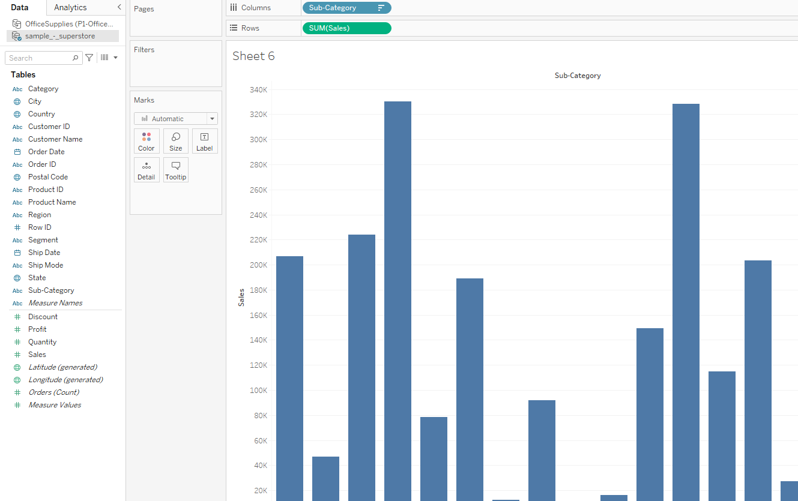
Pie Chart
PIE CHART
- pie chart helps organize and show data as a percentage of a whole.
To create a pie chart view that shows how different product categories contribute to total sales, follow these steps:
1. Connect to the Sample - Superstore data source.
- Drag the Sales measure to Columns and drag the Sub-Category dimension to Rows.
- Click Show Me on the toolbar, then select the pie chart type.
- Add labels by dragging the Sub-Category dimension from the Data pane to Label on the Marks card.
Stacked Area Chart
STACKED AREA CHART
- area chart is a line chart where the area between the line and the axis are shaded with a color. These charts are typically used to represent accumulated totals over time and are the conventional way to display stacked lines.
To create an area chart, follow the steps below:
1. Open Tableau Desktop and connect to the Sample - Superstore data source.
- Navigate to a new worksheet.
- From the Data pane, drag Order Date to the Columns shelf.
- On the Columns shelf, right-click YEAR(Order Date) and select Month.
- From the Data pane, drag Quantity to the Rows shelf.
- From the Date pane, drag Ship Mode to Color on the Marks card.
- On the Marks card, click the Mark Type drop-down and select Area.
Symbol Map
SYMBOL MAP
A symbol map leverages our ability to interpret information by overlaying quantitative values onto geographical locations using symbols. The symbol or symbols on a symbol map are often represented by a circle, however they can be any shape of icon.
The map contains symbols that represent values in a data set. These symbols can be of consistent size, shape and color or they can differ (in size, shape, or color) to represent variation of the data.
A symbol map can be used to show location or another form of data that can be applied to geographical locations. For example a symbol map to point out the cities that have been hit by hurricanes throughout a period of time with each symbol sized (scaled) to indicate the total number of hurricanes.
Treemap chart
TREEMAP CHART
The treemap functions as a visualization composed of nested rectangles. These rectangles represent certain categories within a selected dimension and are ordered in a hierarchy, or “tree.” Quantities and patterns can be compared and displayed in a limited chart space. Treemaps represent part of a whole relationship.
T
he largest box shows the largest part of the whole, while the smallest box shows the smallest part. For a deeper analysis, These boxes can be nested to show many categories.
Treemaps best depict data that needs to show a part-to-whole relationship. Percentages of a measure for each dimension are displayed as squares that, when added together, comprise the whole. Using our Superstore dataset, we can divide the total number of sales into categories.
Adding the Product Sub-Category dimension would create “seating,” “tables,” and “lamps”. In this example, three specific items of furniture that fall under their respective categories become smaller nested squares.
Waterfall chart
WATERFALL CHART
Waterfall charts effectively display the cumulative effect of sequential positive and negative values.
It shows where a value starts, ends and how it gets there incrementally. So, we are able to see both the size of changes and difference in values between consecutive data points.
Creating a Waterfall Chart
Using the Sample-superstore, plan to find the variation of Sales for each Sub-Category of Products.
Step 1 − Drag the Dimension Sub-Category to the Columns shelf and the Measure Sales to the Rows shelf. Sort the data in an ascending order of sales value.
Step 2 − Next, right-click on the SUM (Sales) value and select the running total from the table calculation option. Change the chart type to Gantt Bar.
Step 3 − Create a calculated field named -sales and mention the following formula for its value.
Step 4 − Drag the newly created calculated field (-sales) to the size shelf under Marks Card.
Word Cloud
Word • World Cloud: A Word cloud, also referred to as a Tag cloud, may be a visual representation of text data, typically want to depict keyword metadata (tags) on websites or to see free morpheme text[Wikipedia]. Word clouds are a popular type of info-graphic with the assistance of which we will show the frequency of words in our data. This can be depicted either by the size or the color of the chosen fields in the data. They are a reasonably powerful feature to draw attention to your presentation or story.
Dataset used in the given examples is
Dataset
Steps to illustrate a Word Cloud in Tableau:
- Open Tableau tool and connect a dataset into it.
- Drag and drop the one sheet of connected dataset.
- Click on Sheet1
- o open the tableau worksheet.
◇ On clicking Sheet1
you will get whole dataset attributes on left side and a worksheet for work.
Web Scraping
What is Web Scraping and How to Use It
Unlike the long and mind-numbing process of manually getting data, Web scraping uses intelligence automation methods to get thousands or even millions of data sets in a smaller amount of time. So let’s understand what Web scraping is in detail and how to use it to obtain data from other websites.
What is Web Scraping?
Web scraping is an automatic method to obtain large amounts of data from websites. Most of this data is unstructured data in an HTML format which is then converted into structured data in a spreadsheet or a database so that it can be used in various applications. There are many different ways to perform web scraping to obtain data from websites. These include using online services, particular API’s or even creating your code for web scraping from scratch. Many large websites, like Google, Twitter, Facebook, StackOverflow, etc. have API’s that allow you to access their data in a structured format. This is the best option, but there are other sites that don’t allow users to access large amounts of data in a structured form or they are simply not that technologically advanced. In that situation, it’s best to use Web Scraping to scrape the website for data.
Web scraping requires two parts, namely the crawler and the scraper. The crawler is an artificial intelligence algorithm that browses the web to search for the particular data required by following the links across the internet. The scraper, on the other hand, is a specific tool created to extract data from the website. The design of the scraper can vary greatly according to the complexity and scope of the project so that it can quickly and accurately extract the data.
To Scrape
Why is Python a popular programming language for Web Scraping?
Python seems to be in fashion these days! It is the most popular language for web scraping as it can handle most of the processes easily. It also has a variety of libraries that were created specifically for Web Scraping. Scrapy is a very popular open-source web crawling framework that is written in Python. It is ideal for web scraping as well as extracting data using APIs. Beautiful soup is another Python library that is highly suitable for Web Scraping. It creates a parse tree that can be used to extract data from HTML on a website. Beautiful soup also has multiple features for navigation, searching, and modifying these parse trees.
What is Web Scraping used for?
- Scraping has multiple applications across various industries. Let’s check out some of these now!
1. Price Monitoring
Web Scraping can be used by companies to scrap the product data for their products and competing products as well to see how it impacts their pricing strategies. Companies can use this data to fix the optimal pricing for their products so that they can obtain maximum revenue.
- 2.
2. Market Research
Web scraping can be used for market research by companies. High-quality web scraped data obtained in large volumes can be very helpful for companies in analyzing consumer trends and understanding which direction the company should move in the future.
- 3.
3. News Monitoring
Web scraping news sites can provide detailed reports on the current news to a company. This is even more essential for companies that are frequently in the news or that depend on daily news for their day-to-day functioning. After all, news reports can make or break a company in a single day!
- 4.
4. Sentiment Analysis
If companies want to understand the general sentiment for their products among their consumers, then Sentiment Analysis is a must. Companies can use web scraping to collect data from social media websites such as Facebook and Twitter as to what the general sentiment about their products is. This will help them in creating products that people desire and moving ahead of their competition.
- 5.
5. Email Marketing
Companies can also use Web scraping for email marketing. They can collect Email ID’s from various sites using web scraping and then send bulk promotional and marketing Emails to all the people owning these Email ID’s
Beautiful Soup
Beautiful Soup
This article discusses the steps involved in web scraping using the implementation of a Web Scraping framework of Python called Beautiful Soup.
Steps involved in web scraping:
- Send an HTTP request to the URL of the webpage you want to access. The server responds to the request by returning the HTML content of the webpage. For this task, we will use a third-party HTTP library for python-requests.
- Once we have accessed the HTML content, we are left with the task of parsing the data. Since most of the HTML data is nested, we cannot extract data simply through string processing. One needs a parser which can create a nested/tree structure of the HTML data. There are many HTML parser libraries available but the most advanced one is html5lib.
- Now, all we need to do is navigating and searching the parse tree that we created, i.e. tree traversal. For this task, we will be using another third-party python library, Beautiful Soup
. It is a Python library for pulling data out of HTML and XML files.
Step 1: Installing the required third-party libraries
pip install requests
pip install html5lib
pip install bs4
Step 2: Accessing the HTML content from webpage
import requests
URL = "https://www.geeksforgeeks.org/data-structures/"
r = requests.get(URL)
print(r.content)
This code works as : -
importing requests and requesting the HTTP for the given URL
r.content prints raw HTML content
“Not Accepted Error” : Adding a browser agent
https://deviceatlas.com/blog/list-of-user-agent-strings
headers = {'User-Agent': "Mozilla/5.0 (Windows NT 10.0; Win64; x64) AppleWebKit/537.36 (KHTML, like Gecko) Chrome/42.0.2311.135 Safari/537.36 Edge/12.246"}
# Here the user agent is for Edge browser on windows 10. You can find your browser user agent from the above given link.
r = requests.get(url=URL, headers=headers)
print(r.content)Step 3: Parsing the HTML content
#This will not run on online IDE
import requests
from bs4 import BeautifulSoup
URL = "http://www.values.com/inspirational-quotes"
r = requests.get(URL)
soup = BeautifulSoup(r.content, 'html5lib') # If this line causes an error, run 'pip install html5lib' or install html5lib
print(soup.prettify())
Step 4: Searching and navigating through the parse tree
Now, we would like to extract some useful data from the HTML content. The soup object contains all the data in the nested structure which could be programmatically extracted. In our example, we are scraping a webpage consisting of some quotes. So, we would like to create a program to save those quotes (and all relevant information about them).
#Python program to scrape website
#and save quotes from website
import requests
from bs4 import BeautifulSoup
import csv
URL = "http://www.values.com/inspirational-quotes"
r = requests.get(URL)
soup = BeautifulSoup(r.content, 'html5lib')
quotes=[] # a list to store quotes
table = soup.find('div', attrs = {'id':'all_quotes'})
for row in table.findAll('div',
attrs = {'class':'col-6 col-lg-3 text-center margin-30px-bottom sm-margin-30px-top'}):
quote = {}
quote['theme'] = row.h5.text
quote['url'] = row.a['href']
quote['img'] = row.img['src']
quote['lines'] = row.img['alt'].split(" #")[0]
quote['author'] = row.img['alt'].split(" #")[1]
quotes.append(quote)
filename = 'inspirational_quotes.csv'
with open(filename, 'w', newline='') as f:
w = csv.DictWriter(f,['theme','url','img','lines','author'])
w.writeheader()
for quote in quotes:
w.writerow(quote)
- It is noticed that all the quotes are inside a div container whose id is ‘all_quotes’. So, we find that div element (termed as table in above code) using find()
method :
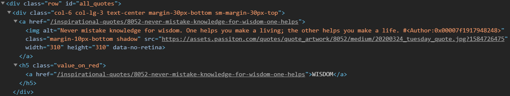- Now consider this piece of code:
for row in table.find_all_next('div', attrs = {'class': 'col-6 col-lg-3 text-center margin-30px-bottom sm-margin-30px-top'}):
quote = {}
quote['theme'] = row.h5.text
quote['url'] = row.a['href']
quote['img'] = row.img['src']
quote['lines'] = row.img['alt'].split(" #")[0]
quote['author'] = row.img['alt'].split(" #")[1]
quotes.append(quote)- We create a dictionary to save allnformation about a quote. The nested structure can be accessed using dot notation. To access the text inside an HTML
element, we use .text :
quote['url'] = row.a['href'
]◇ Lastly, all the quotes are appended to the list called quotes.
- Finally, we would like to save all our data in some CSV file.
filename = 'inspirational_quotes.csv'
with open(filename, 'w', newline='') as f:
w = csv.DictWriter(f,['theme','url','img','lines','author'])
w.writeheader()
for quote in quotes:
w.writerow(quote)
Scraping Multiple Pages
Scraping Multiple Pages
Scraping multiple Pages of a website Using Python
Approach:
- e approach of the program will be fairly simple, and it will be easier to understand it in a POINT format:
◇ We’ll import all the necessary libraries
- ◇ Set up our URL strings for making a connection using the requests
- brary.
◇ Parsing the available data from the target page using the BeautifulSoup
- brary’s parser.
◇ From the target page, Identify and Extract
- e classes and tags which contain the information that is valuable to us.
◇ Prototype
it for one page using a loop and then apply it to all the pages.
Example 1: Looping through the page numbers
page numbers at the bottom of the GeeksforGeeks website
Most websites have pages labeled from 1 to N. This makes it really simple for us to loop through these pages and extract data from them as these pages have similar structures. For example:
notice the last section of the URL – page/4/
Here, we can see the page details at the end of the URL. Using this information we can easily create a for loop iterating over as many pages as we want (by putting page/(i)/ in the URL string and iterating “i” till N) and scrape all the useful data from them. The following code will give you more clarity over how to scrape data by using a For Loop in Python.
import requests
from bs4 import BeautifulSoup as bs
URL = 'https://www.geeksforgeeks.org/page/1/'
req = requests.get(URL)
soup = bs(req.text, 'html.parser')
titles = soup.find_all('div',attrs = {'class','head'})
print(titles[4].text)
Output:
Now, using the above code, we can get the titles of all the articles by just sandwiching those lines with a loop.
import requests
from bs4 import BeautifulSoup as bs
URL = 'https://www.geeksforgeeks.org/page/'
for page in range(1,10): # pls note that the total number of
req = requests.get(URL + str(page) + '/')
soup = bs(req.text, 'html.parser')
titles = soup.find_all('div',attrs={'class','head'})
for i in range(4,19):
if page>1:
print(f"{(i-3)+page*15}" + titles[i].text)
else:
print(f"{i-3}" + titles[i].text)
Output:

Note:
The above code will fetch the first 10 pages from the website and scrape all the 150 titles of the articles that fall under those pages.
Example 2: Looping through a list of different URLs.
to scrape different pages, and you don’t know their page numbers? You’ll need to scrape those different URLs one by one and manually code a script for every such webpage.
Instead, you could just make a list of these URLs and loop through them. By simply iterating the items in the list i.e. the URLs, we will be able to extract the titles of those pages without having to write code for each page. Here’s an example code of how you can do it.
import requests
from bs4 import BeautifulSoup as bs
URL = ['https://www.geeksforgeeks.org','https://www.geeksforgeeks.org/page/10/']
for url in range(0,2):
req = requests.get(URL[url])
soup = bs(req.text, 'html.parser')
titles = soup.find_all('div',attrs={'class','head'})
for i in range(4, 19):
if url+1 > 1:
print(f"{(i - 3) + url * 15}" + titles[i].text)
else:
print(f"{i - 3}" + titles[i].text)
Output:
Create Pandas DataFrame from Lists and saving it as CSV
Create a Pandas DataFrame from Lists and Saving it as CSV
Creating a Pandas DataFrame
Python is a great language for doing data analysis, primarily because of the fantastic ecosystem of data-centric python packages. Pandas is one of those packages and makes importing and analyzing data much easier.
Creating Pandas Dataframe can be achieved in multiple ways. Let’s see how can we create a Pandas DataFrame from Lists.
Code #1: Basic example
# import pandas as pd
import pandas as pd
# list of strings
lst = ['Geeks', 'For', 'Geeks', 'is',
'portal', 'for', 'Geeks']
# Calling DataFrame constructor on list
df = pd.DataFrame(lst)
df
Output:
Code #2: Dataframe using list with index and column names
# import pandas as pd
import pandas as pd
# list of strings
lst = ['Geeks', 'For', 'Geeks', 'is', 'portal', 'for', 'Geeks']
# Calling DataFrame constructor on list
# with indices and columns specified
df = pd.DataFrame(lst, index =['a', 'b', 'c', 'd', 'e', 'f', 'g'],
columns =['Names'])
df
Output:
Saving a DataFrame as CSV
Export CSV to a working directory
Here, we simply export a Dataframe to a CSV file using df.to_csv().
Scraping Quotes
Scraping Quotes
Code
# code
# Importing Important Libraries
import requests
from bs4 import BeautifulSoup
link = 'https://books.toscrape.com/catalogue/page-1.html'
# Sending a request to the website(link)
res = requests.get(link)
# Creating a soup using BeautifulSoup
soup = BeautifulSoup(res.text, 'html.parser')
Scraping only Quotes and Authors Name
# code
quotes = []
for quote in soup.find_all('span', class_='text'):
quotes.append(quote.text[1:-1])
print(quote.text[1:-1] + "\n")
# Authors Name
authors = []
for i in soup.find_all('small', class_='author'):
authors.append(i.text)
Code where we have extracted quotes, author name, details and tags
# code
for sp in soup.find_all('div', class_='quote'):
quote = sp.find('span', class_='text').text[1:-1]
authors = sp.find('small', class_='author').text
details = sp.find('a').get('href')
tags = []
for tag in sp.find_all('a', class_='tag'):
tags.append(tag.text)
tags = ','.join(tags)
print(quote)
print(authors)
print(details)
print(tags)
print("*"*127)
Creating a List
data = []
for sp in soup.find_all('div', class_='quote'):
quote = sp.find('span', class_='text').text[1:-1]
authors = sp.find('small', class_='author').text
details = sp.find('a').get('href')
tags = []
for tag in sp.find_all('a', class_='tag'):
tags.append(tag.text)
tags = ','.join(tags)
data.append([quote, authors, details, tags])
Accessing Various HREFs
We'll copy this dataframe into a new dataframe df_2 and then delete the uneccessary columns
Scraping Multiple Pages
from tqdm import tqdm
Multiple_Pages = []
# tqdm used for better representation.
for page in tqdm(range(1, 11)):
link = ('http://quotes.toscrape.com/page/' + str(page))
res = requests.get(link)
soup = BeautifulSoup(res.text, 'html.parser')
for sp in soup.find_all('div', class_='quote'):
quote = sp.find('span', class_='text').text[1:-1]
authors = sp.find('small', class_='author').text
details = sp.find('a').get('href')
tags = []
for tag in sp.find_all('a', class_='tag'):
tags.append(tag.text)
tags = ','.join(tags)
Multiple_Pages.append([quote, authors, details, tags])
Creating Dataframe and saving it
Book Scraper
Book Scraper
we will scrape a website books.toscrape. The URL for the website is 'https://books.toscrape.com/catalogue/page-1.html'.
#Code
#Importing Important Libraries
import requests
from bs4 import BeautifulSoup
link = 'https://books.toscrape.com/catalogue/page-1.html'
#Sending a request to the website(link)
res = requests.get(link)
#Creating a soup using BeautifulSoup
soup = BeautifulSoup(res.text,'html.parser')
The above code is just the basics on how we start any project related to web scraping.
Lets start scraping 1st page from https://books.toscrape.com/
Whenever we want to scrape any website. The first step is inspecting the website and finding out the class/div/tag etc that we want to scrap. For the above URL we want to scrap information about the books present in the website.
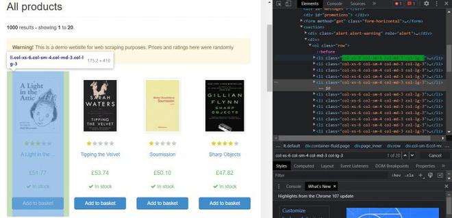
We want to scrap books data so we have to select the list li having class = 'col-xs-6 col-sm-4 col-md-3 col-lg-3'
# code
book = soup.find_all('li',class_ = 'col-xs-6 col-sm-4 col-md-3 col-lg-3')
data=[]
for sp in soup.find_all('li',class_ = 'col-xs-6 col-sm-4 col-md-3 col-lg-3'):
#print(sp)
#Finding different aspects to be scraped from the first page
book_link = "https://books.toscrape.com/catalogue/" + sp.find_all('a')[-1].get('href')
title = sp.find_all('a')[-1].get('title')
img_link = "https://books.toscrape.com/" + sp.find('img').get('src')[3:]
book_rating = (sp.find('p').get('class')[-1])
price = sp.find('p',class_='price_color').text[1:]
stock = sp.find('p',class_ = 'instock availability').text.strip()
#Appending all the data into a list(data)
data.append([title,book_rating,price,stock,book_link,img_link])
Output from Data
Scraping Multiple Pages
# code
from tqdm import tqdm
Multiple_Pages = []
#tqdm used for better representation.
for page in tqdm(range(1,51)):
#using a for loop as there are 50 pages then creating a link using page-1,page-2...page-50
link = 'https://books.toscrape.com/catalogue/page-'+str(page)+'.html'
res = requests.get(link)
soap = BeautifulSoup(res.text,'html.parser')
#same code as in scraping for 1 page
for sp in soap.find_all('li',class_ = 'col-xs-6 col-sm-4 col-md-3 col-lg-3'):
book_link = "https://books.toscrape.com/catalogue/" + sp.find_all('a')[-1].get('href')
title = sp.find_all('a')[-1].get('title')
img_link = "https://books.toscrape.com/" + sp.find('img').get('src')[3:]
book_rating = (sp.find('p').get('class')[-1])
price = sp.find('p',class_='price_color').text[1:]
stock = sp.find('p',class_ = 'instock availability').text.strip()
Multiple_Pages.append([title,book_rating,price,stock,book_link,img_link])
#Creating a Dataframe
Multiple_Pages_df = pd.DataFrame(data=Multiple_Pages)
Multiple_Pages_df = Multiple_Pages_df.rename(columns={0: 'Title', 1: 'Rating',2:'Price',3:'Stock Available',4:'Book Link',5:'Image Link'})
df_1 = Multiple_Pages_df
#Saving the Dataframe in a csv file
import pandas as pd
Multiple_Pages_df.to_csv('All Books.csv',index=False)
Books Page Scraping
# code
data_2 = []
for links in tqdm(Multiple_Pages_df['Book Link']):
res = requests.get(links)
soup = BeautifulSoup(res.text,'html.parser')
Book_Genre = soup.find('ul',class_ = 'breadcrumb').find_all('a')[2].text
temp = soup.find('table',class_ = 'table table-striped').find_all('td')
UPC = temp[0].text
price_exc_tax = temp[2].text[1:]
price_inc_tax = temp[3].text[2:]
tax = temp[4].text[2:]
availability = temp[5].text
reviews = temp[6].text
data_2.append([Book_Genre,price_exc_tax,price_inc_tax,tax,UPC,availability,reviews])
#Creating a dataframe
df_2 = pd.DataFrame(data_2)
df_2 = df_2.rename(columns={0:'Genre',1:'Price',2:"Price(Excluding Tax)",3:"Price(Including Tax)" ,4:"UPC",5:"Stock",6:"Reviews"})
#Saving Dataframe
df_2.to_csv('All Page.csv',index=False)
Python3# code
df = pd.DataFrame()
df['UPC'] = df_2['UPC']
df['Title'] = df_1['Title']
df['Genre'] = df_2['Genre']
df['Rating'] = df_1['Rating']
df['Price'] = df_2['Price']
df['Total Tax'] = df_2['Total Tax']
df['Stock'] = df_2['Stock']
df['Review'] = df_2['Reviews']
df['Book Link'] = df_1['Book Link']
df['Cover Image'] = df_1['Image Link']
#Saving final scrap
df.to_csv("Final Scrap.csv")
Wikipedia Scraper
Wikipedia Scraper
In this project we will take a person’s name as input from the user and then scrape his/her Wikipedia page. All the scraped information will be written in a text file and then saved in the current working directory of the user.
To start with the project, you should be familiar with the libraries like requests and BeautifulSoup.
#First importing the libraries
import requests
from bs4 import BeautifulSoup
import pandas as pd
#Creating Link
inp = input("Enter Persons name: ")
link = 'https://www.google.com/search?q=' + str(inp) +" "+ "Wikipedia"
link = link.replace(' ','+') The link that is generated and stored in the variable link is basically the first Wikipedia link returned by Google when we type the person's name and add Wikipedia after it. Every whitespace is replaced by a “+” sign. We are using Google to generate the link because it’ll generate the link for Wikipedia even if we misspell the person’s name.
Look at the example. Even if we misspell Mahatma Gandhi, it’ll return the same. Now you must be wondering how the Google link can be used to scrape the Wikipedia page.
To get the first link, i.e., the link to the Wikipedia page of the desired person. First, we will send a request to the Google link. In this case, i.e.,
https://www.google.com/search?q=Mahatma+Gandhi+Wikipedia
After sending the request we will create a soup using BeautifulSoup
soup = BeautifulSoup(res.text,’html.parser’)
If we print this soup, we will scrape html data from the google search.
In order to get the link of the Wikipedia page we will use:
for sp in soup.find_all('div'):
try:
link = sp.find('a').get('href')
if('en.wikipedia.org' in link):
break
except:
pass
link = (link[7:]).split('&')[0]
First by using soup.find_all(‘div’) we found all the div tags present in the google page. Then for the div tags we found those tags that contain anchor tags and extracted href from them(Links to page). As it is still on google it isn’t necessary that the first div tag which contains an anchor tag corresponds to the Wikipedia page. To solve this problem, we used an if condition which checks that the link must contain ‘en.wikipedia.org’. After finding a link that contains en.wikipedia.org we used a break in order to stop iterating forward and update the link with the first link found. This first link will be the link to the Wikipedia page and will look something like this:
The useful part of the link starts from https and ends at ‘Mahatma_Gandhi’ so we will remove the first 7 characters and split the link at ‘&’ . Then we will update the link as:
link = (link[7:]).split('&')[0]
If we print this link, it and click on it. It’ll redirect us to the Wikipedia page of Mahatma Gandhi.
Here we again have to update our res variable and send a new request to the Wikipedia page and make a soup out of it.
After doing it we can Scrape data.
Below is an example of how to scrape the paragraph:
paragraphs = ' '
for p in soup.find_all('p'):
paragraphs += p.text
paragraphs += '\n'
paragraphs = paragraphs.strip()
After storing all the necessary information in paragraphs, we can write it in a text file and save it in the current working directory
fd = open(heading + ".txt" , 'w',encoding='utf-8')
fd.write(paragraphs)
fd.close()
Selenium
Need for Web Drivers and Introduction to Selenium
The first question that comes to our mind before using web drivers to scrape data is "What is the need for web drivers" when we can simply scrape data using requests?
To answer this question, let's first recall how we used to scrap data using requests.
We used to import requests and send a request to the website using
Now we usually create a soup out of this request using another important library called
‘BeautifulSoup’.
When we print this soup, we get data from the website.

Now coming to the question of what the need for Web Drivers? Suppose we want to scrape data from a big e-commerce website. The first step is to send a request to the website and then print the text, i.e., basically the HTML code of the website. When we try to print the text/code, it would print some code that isn’t the html code we’re looking for or it would return a message saying
"Web scraping is not permitted."
OR
All websites are scrapable, some are hard to scrape and some are easy.
Another use of web drivers is that they help us scrape data from websites that are dynamic in nature. Dynamic websites are those websites that produce information when we click on some element. For example, when using Amazon, if we search for mobiles, it will show us a page containing different types of mobiles. When we click on any of the mobiles, it directs us to the page of that particular mobile phone. In order to scrape data from the full page of mobiles and the data of each mobile’s page, web servers are used, as the website is dynamic in nature.
Now coming to the second part, "
What is Selenium and how do web drivers work
"?
Selenium is an open-source framework designed for testing. The Selenium Web Driver is just one part of the overall Selenium library. Selenium allows us to run our scripts in an automated process on the web driver, which helps us to decrease the time to scrape data. As it uses automation, we don’t have to manually do anything. Selenium supports a lot of web drivers, e.g., Chrome, Mozilla, Safari, etc.
Selenium Web Drivers basically work in 3 steps:
First, the JSON wire protocol converts the test commands into an HTTP request.
The Browser Driver, which is already present in each browser, is initialised before any script is executed.
Once everything is ready, the driver starts to send requests to the browser.
Each Web Driver can directly call its browser. Whenever a script is executed, an HTTP request is generated by the JSON wire protocol. The browser driver uses an HTTP server for getting HTTP requests. After receiving and executing the request, the status is sent back to the HTTP server, which forwards it back to the script.
Setting up Selenium and Web Drivers
Setting up Selenium and Web Drivers
Selenium is used for automation of scripts. For example, scraping data from a website and storing the result in a file, let’s say a csv, can be very time-consuming if done manually, but using Selenium and automating the scraping scripts can speed up the process. Selenium supports scripts in various languages like Ruby, Java, Python etc.
Now let’s jump towards the setting up of Selenium and Web Drivers. Note here we will be setting up selenium in Python so Python should already be installed on your computers.
To impot a web driver, we have to use:
from selenium import webdriver
In order to run the web driver, we’ve to use
webdriver.Chrome()
We can use any supported browser to see a list of supported browsers press tab after writing webdriver.
If we leave the parenthesis, it will return an error. In the parenthesis, we have to specify the path of the web driver. To download the web driver first, we run the command
webdriver.Chrome()
The error would give us a link which contains downloadable files of web drivers for all the different architectures of OS.
After downloading the driver compatible with your PC, we can use another library,
chromedriver.binary,
which can help us get the path of the driver.
First, we've got to use the command:
!pip install chromedriver.binary
Then,
import chromedriver.binary
To use chromedriver.binary, we've got to use
chromedriver_filename.
To do this, we’ll use this command:
import chromedriver_filename from chromedriver.binary
This command would return you the path of the driver. To ease the process, we can store this path in a variable named path and then use that path variable in order to open a browser.
path = chromedriver.binary import chromedriver_filename
driver = webdriver.Chrome(path)
If we run this driver, it’ll open a browser. Now to open a webpage on this browser we have to use .get() function.
link = ‘https://www.youtube.com/c/GeeksforGeeksVideos/videos
driver.get(link)
To print content, we can use Beautiful Soup:
Soup = BeautifulSoup(driver.page_source,’html.parser’)
print(Soup.prettify)
Youtube Scraper
YouTube Scraper 1
Pre-Requisites: Selenium(Web drivers), BeautifulSoup, Pandas(for Data frame), NumPy(for Nan value)
. In this project we’re going to scrape GFG’s YouTube channel and scrape data (title, thumbnail, likes, views, upload etc) for all the data/ videos available on the channel. We’re not going to use Infinite scroll in this project and will manually scroll down the videos page till we reach the pages bottom.
The link for the channel is: 'https://www.youtube.com/c/GeeksforGeeksVideos/videos’
browser = webdriver.Chrome(chromedriver_binary.chromedriver_filename)
browser.get('https://www.youtube.com/c/GeeksforGeeksVideos/videos')
soup = BeautifulSoup(browser.page_source, 'html.parser')
Let’s get started with the basics first i.e., understanding the tags. These tags will help us to scrape the data from the channel. These tags basically help us in locating various pieces of information about the video that we want to scrape.
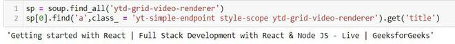
Here we selected ytd-rich-grid-renderer and using this tag scraped the title of the videos. Using
sp[-1].find(…).get(‘title’) will give us the title of the last video.
Using the same soup we can scrape Links, Views, Upload Date etc
links = sp.fin(‘a’ , class_= 'yt-simple-endpoint style-scope ytd-grid-video-renderer').get('href')
#Similarly, Views can be scraped using:
views = sp[i].find_all('span',class_ = 'style-scope ytd-grid-video-renderer')[1].text
#Thumbnail can be scraped using:
thumbnail_link = sp.find('img').get('src').split('?')[0]
data = []
for sp in soup.find_all('ytd-grid-video-renderer'):
title = sp.find('a',class_ = 'yt-simple-endpoint style-scope ytd-grid-video-renderer').get('title')
links = "https://www.youtube.com" + sp.find('a',class_ = 'yt-simple-endpoint style-scope ytd-grid-video-renderer').get('href')
try:
views = sp.find_all('span',class_ = 'style-scope ytd-grid-video-renderer')[0].text
except:
views = None
try:
date_time = sp.find_all('span',class_ = 'style-scope ytd-grid-video-renderer')[1].text
except:
date_time = None
try:
thumbnail_link = sp.find('img').get('src').split('?')[0]
except:
thumbnail_link = None
data.append([title,links,views,date_time,thumbnail_link])
#Output Sample
We can save this data as csv, but before that we’ve to create a data frame out of it.
df = pd.DataFrame(data, columns = ['title','views','date_time','video_link','thumbnail_link'])
df.to_csv(‘data.csv’,index=False)
YouTube Scraper 2
In the previous article we scraped data from the main page. In this article we will scrape data from the videos page example:
We will scrape data like description, number of likes, date_time, views and title.
The method is same but here we will use links of the videos to visit each videos page. We’ve already scraped the links for each video in the previous article. Let’s start the scraping:
#Code
df = pd.read_csv('data.csv')
df.head()
browser = webdriver.Chrome(chromedriver_binary.chromedriver_filename)
browser.get('https://www.youtube.com')
time.sleep(2)
data = []
for link in tqdm(df['video_link']):
link = 'https://www.youtube.com' + link
browser.get(link)
time.sleep(5)
soup = BeautifulSoup(browser.page_source, 'html.parser')
try:
title = soup.find_all('yt-formatted-string', class_ = 'style-scope ytd-video-primary-info-renderer')[0].text
except:
title = np.nan
try:
view = soup.find('span' , class_ = 'view-count style-scope ytd-video-view-count-renderer').text
except:
view = np.nan
try:
date_time = soup.find_all('yt-formatted-string', class_ = 'style-scope ytd-video-primary-info-renderer')[1].text
except:
date_time = np.nan
try:
like = soup.find('yt-formatted-string', class_ = 'style-scope ytd-toggle-button-renderer style-text').text
except:
like = np.nan
try:
description = soup.find('yt-formatted-string', class_ = 'content style-scope ytd-video-secondary-info-renderer').text
except:
description = np.nan
data.append([title , date_time, like, view, link, description])
#Creating and Saving the dataframe
df = pd.DataFrame(data, columns = ['title' , 'date_time', 'likes', 'views', 'link' , 'description'])
df.to_csv('GFG.csv', index = False)
Stock Infinite Scroll
Infinite Scrolling
Before jumping to infinite scrolling, we should understand its use case first. Infinite scrolling is used when websites load more data after we reach the bottom.
Let us jump to the second part i.e., how to implement infinite scrolling. All of the codes are implemented on
https://stock-pictures.netlify.app
. This is a website, i.e., specifically made to scrap data using infinite scrolling. But the same method can be applied to any website that requires infinite scrolling to scrape data.
Infinite Scroll
This website will only scrape data if used through a webdriver.
Code for implementing infinite scrolling on
stock-pictures.netlify.app
:
#Importing Libraries
from bs4 import BeautifulSoup
from selenium import webdriver
import time
from tqdm import tqdm
#Using a web driver and opening a link with it
link = 'https://stock-pictures.netlify.app'
browser = webdriver.Chrome()
browser.get(link)
#Code for Infinite Scroll
for i in tqdm(range(0,540000,1000)):
browser.execute_script("window.scrollTo(0," + str(i) + ")")
time.sleep(.3)
After this, we can use normal scraping techniques using BeautifulSoup.
Let’s understand the code of infinite scrolling
for i in tqdm(range(0,540000,1000)):
browser.execute_script("window.scrollTo(0," + str(i) + ")")
time.sleep(.3)
First, we need to understand how we can automate scrolling. We can use
browser.execute_script("window.scrollTo(0," + str(i) + ")")
Let’s break down the code:
execute_script
comes with
webdrivers
. When we use
window.scroll(x,y)
. The parameter x points to the first pixel and y to the pixel to which we want to scroll.
Now let’s understand how we implemented this in our case. As we don’t know the bottom of the website, we are using a for loop (Syntax
for(start,stop,step))
.
In
browser.execute_script
we pass
window.scrollTo
and pass the start and end pixel as parameters to it. As we don’t know the end pixel or where the site ends, we are using a for loop to automatically scroll down to the new end after the first loading point is found and new data is loaded. We use sleep to allow the website to load new data after we’ve reached the bottom.
Now the main point of concern is what should be the stop and for the for loop. The start should be 0.
Finding the stop is a manual process. We should use a random number for stops and see how much scrolling takes place. If it doesn’t scroll to the bottom, we have to increase the value of the stop.
If the end of the website is reached before the loop ends, then we have to check manually the value tqdm is showing and update the same as the value for stop.
Example:

For the same stock images website, I found the bottom at pixel 5,40,000
(540*1000(step-size))
So, we can drastically reduce the time by reducing the stop parameter value.
Stock Images Scraper
Stock Image Scraper
In this project we will be scraping all the data including images from
'https://stock-pictures.netlify.app'
The concepts covered in this project can be applied to scrape image data from any website and in storing those images in a dynamic manner.
This project covers various important aspects of data collection. Apart from data collection (scraping Images, likes ,tags) you will also learn how to dynamically name these images and also how to create folder based on names of these tags and store images in them.
#Importing Libraries.
import time,requests,chromedriver_binary
import pandas as pd
from tqdm import tqdm
from bs4 import BeautifulSoup
from selenium import webdriver
# Selenium
browser = webdriver.Chrome(path)
browser.get('https://stockmages.netlify.app')
#Infinite Scroll to reach the bottom
for i in tqdm(range(0,5000000,1000)):
browser.execute_script("window.scrollTo(0," + str(i) + ")")
time.sleep(.1)
#Using this much range will lead ypu to the bottom of the path
Now we will scrape the page using different tags.
# Scraping the Page
soup = BeautifulSoup(browser.page_source,’html.parser’)
#Scraping the Image Details
data = []
for sp in tqdm(soup.find_all('div', class_ = 'container')):
img_link = sp.find('img').get('src')
tags = sp.find('span', class_ = 'tag-color').text[7:].strip()
likes = int(sp.find('div', class_ = 'likes-comments').find_all('span')[0].text.strip()[:-6])
comments = int(sp.find('div', class_ = 'likes-comments').find_all('span')[1].text.strip()[:-9])
data.append([img_link, tags, likes, comments])
#Creating a dataframe and saving it
df = pd.DataFrame(data, columns = ['img_link', 'tags', 'likes', 'comments'])
df.to_csv('images.csv', index = False)
This code will scrape data from the website and give us the link of image, tags of image, number of likes of image and the number of comments on it. A sample of dataframe: -
Downloading and Dynamic Naming of Images
Downloading and Dynamic Naming of Images
As scraping/downloading of images will be an automated process, if it finds 2 images having the same name it will overwrite the previous image and change it with the new one. This would lead to loss of data.
Let us download 1 sample image first before downloading and naming all of the images.
We can download 1 image as
fd = open(‘img.jpg’ , ‘wb’)
fd.write(res.content)
fd.close()
Defining a function to download images
def download(link, img_path ):
res = requests.get(link)
fd = open(img_path,'wb') # wb = (write binary format)
fd.write(res.content)
fd.close()
Using this function now we'll download all the images from the site
#Downloading all Images.
paths = []
img_ids = []
ref = 100000
i = 1
for link in tqdm(df['img_link']):
img_id = 'A' + str(i + ref)[1:] # Creating Image ID
i += 1
img_path = 'Imgs/' + img_id + '.jpg' # Creating Image Path
download(link, img_path) # Downloading the Image
paths.append(img_path)
img_ids.append(img_id)
#Saving ID’s and paths in df and saving it
df['img_id'] = img_ids
df['img_path'] = paths
df.to_csv('imgs.csv', index = False)
Image Dataset Creation
Image Dataset Creation
This project is basically in continuation with the image scraper project. In this project we will create folders for all tags an also remove certain images thar are below some threshold value. Let’s work with the project i.e., creating folders based on tags and saving images in it and deleting folders having images less than the threshold value.
#Importing libraries
import os
from shutil import copyfile as copy
#Removing unnecessary libraries
del df['img_link']
del df['img_id']
del df['likes']
del df['comments']
Now for the new dataset we will find tags. We'll create a list and append tags in it. Then we'll create folders based on these tags using os.mkdir
#Finding all tags
t = []
for tags in df['tags']:
t += [tag.strip() for tag in tags.split(',')]
tags = list(set(t))
#Creating folders for each tag
for tag in tqdm(tags):
try:
os.mkdir('Dataset/' + tag)
except:
pass
Now our folders are ready and each folder is named after a specific tag. Let's save the images in their particular folders now.
#Saving images in specific folders
error = 0
for data in tqdm(df.values):
tags = data[0]
tags = ['Dataset/' + tag.strip() + '/' for tag in tags.split(',')]
src = data[1]
for i in tags:
dst = i + src.split('/')[-1]
try:
copy(src, dst)
except:
error += 1
in the above code, we first loop in tqdm(df.values) for going through df.values
dataset+tag.strip holds tag
src is source for it, dst holds destination, copy() copies the
Thresholding Images
Thresholding Images
Till now we've downloaded the images created folders based on tags and stored their respective images in them. Now coming to the last part of the project i.e., only to keep those folders of images that are having a certain number of images in them or that are having images greater than the threshold number. To do it first we've to check the number of images present in a particular folder and then compare it with the threshold value if it's less than the threshold we'll use shutil to move them to a different folder or simply delete them.
# Checking number of Images in Each Folder
folder_ = []
freq = []
for folder in tqdm(folders):
try:
freq.append(len(os.listdir('Dataset/' + folder)))
folder_.append(folder)
except:
pass
#Removing images with less than 50 images(Threshold)
for i in tqdm(df_[df_['freq'] < 50]['folder']):
src = 'Dataset/' + i
dst = 'Temp/' + i
shutil.move(src, dst)
AI and Data Science
AI
Before leading to the meaning of artificial intelligence let understand what is the meaning of Intelligence-
Intelligence: The ability to learn and solve problems. This definition is taken from webster’s Dictionary.
The most common answer that one expects is “to make computers intelligent so that they can act intelligently!”, but the question is how much intelligent? How can one judge intelligence?
…as intelligent as humans. If the computers can, somehow, solve real-world problems, by improving on their own from past experiences, they would be called “intelligent”.
Thus, the AI systems are more generic(rather than specific), can “think” and are more flexible.
Intelligence, as we know, is the ability to acquire and apply knowledge. Knowledge is the information acquired through experience. Experience is the knowledge gained through exposure(training). Summing the terms up, we get artificial intelligence as the “copy of something natural(i.e., human beings) ‘WHO’ is capable of acquiring and applying the information it has gained through exposure.”
Intelligence is composed of:
• Reasoning
- Learning
- Problem Solving
- Perception
- Linguistic Intelligence
Many tools are used in AI, including versions of search and mathematical optimization, logic, and methods based on probability and economics. The AI field draws upon computer science, mathematics, psychology, linguistics, philosophy, neuroscience, artificial psychology, and many others.
Need for Artificial Intelligence
- 1. To create expert systems that exhibit intelligent behavior with the capability to learn, demonstrate, explain, and advise its users.
- Helping machines find solutions to complex problems like humans do and applying them as algorithms in a computer-friendly manner.
Approaches of AI
- ere are a total of four approaches of AI and that are as follows:
◇ Acting humanly (The Turing Test approach):
- is approach was designed by Alan Turing. The ideology behind this approach is that a computer passes the test if a human interrogator, after asking some written questions, cannot identify whether the written responses come from a human or from a computer.
◇ Thinking humanly (The cognitive modeling approach):
- e idea behind this approach is to determine whether the computer thinks like a human.
◇ Thinking rationally (The “laws of thought” approach):
- he idea behind this approach is to determine whether the computer thinks rationally i.e. with logical reasoning.
◇ Acting rationally (The rational agent approach):
The idea behind this approach is to determine whether the computer acts rationally i.e. with logical reasoning.
Applications of AI include Natural Language Processing, Gaming, Speech Recognition, Vision Systems, Healthcare, Automotive, etc.
An AI system is composed of an agent and its environment. An agent(e.g., human or robot) is anything that can perceive its environment through sensors and acts upon that environment through effectors. Intelligent agents must be able to set goals and achieve them. In classical planning problems, the agent can assume that it is the only system acting in the world, allowing the agent to be certain of the consequences of its actions. However, if the agent is not the only actor, then it requires that the agent can reason under uncertainty. This calls for an agent that cannot only assess its environment and make predictions but also evaluate its predictions and adapt based on its assessment. Natural language processing gives machines the ability to read and understand human language. Some straightforward applications of natural language processing include information retrieval, text mining, question answering, and machine translation. Machine perception is the ability to use input from sensors (such as cameras, microphones, sensors, etc.) to deduce aspects of the world. e.g., Computer Vision. Concepts such as game theory, and decision theory, necessitate that an agent can detect and model human emotions.
Many times, students get confused between Machine Learning and Artificial Intelligence, but Machine learning, a fundamental concept of AI research since the field’s inception, is the study of computer algorithms that improve automatically through experience. The mathematical analysis of machine learning algorithms and their performance is a branch of theoretical computer science known as a computational learning theory.
Stuart Shapiro divides AI research into three approaches, which he calls computational psychology, computational philosophy, and computer science. Computational psychology is used to make computer programs that mimic human behavior. Computational philosophy is used to develop an adaptive, free-flowing computer mind. Implementing computer science serves the goal of creating computers that can perform tasks that only people could previously accomplish.
AI has developed a large number of tools to solve the most difficult problems in computer science, like:
High-profile examples of AI include autonomous vehicles (such as drones and self-driving cars), medical diagnosis, creating art (such as poetry), proving mathematical theorems, playing games (such as Chess or Go), search engines (such as Google search), virtual assistants (such as Siri), image recognition in photographs, spam filtering, prediction of judicial decisions[204] and targeted online advertisements. Other applications include Healthcare, Automotive, Finance, Video games, etc
Are there limits to how intelligent machines – or human-machine hybrids – can be? A superintelligence, hyperintelligence, or superhuman intelligence is a hypothetical agent that would possess intelligence far surpassing that of the brightest and most gifted human mind. ‘‘Superintelligence’’ may also refer to the form or degree of intelligence possessed by such an agent.
Data Science
In a world of data space where organizations deal with petabytes and exabytes of data, the era of Big Data emerged, the essence of its storage also grew. It was a great challenge and concern for industries for the storage of data until 2010. Now when frameworks like Hadoop and others solved the problem of storage, the focus shifted to processing of data. Data Science plays a big role here. All those fancy Sci-fi movies you love to watch around can turn into reality by Data Science. Nowadays it’s growth has been increased in multiple ways and thus one should be ready for our future by learning what it is and how can we add value to it. Without any hunches, let’s dive into the world of Data Science.
After touching to slightest idea, you might have ended up with many questions like What is Data Science? Why we need it? How can I be a Data Scientist?? etc? So let’s clear out ourselves from this baffle.
What is Data Science?
Data Science is kinda blended with various tools, algorithms, and machine learning principles. Most simply, it involves obtaining meaningful information or insights from structured or unstructured data through a process of analyzing, programming and business skills. It is a field containing many elements like mathematics, statistics, computer science, etc. Those who are good at these respective fields with enough knowledge of the domain in which you are willing to work can call themselves as Data Scientist. It’s not an easy thing to do but not impossible too. You need to start from data, it’s visualization, programming, formulation, development, and deployment of your model. In the future, there will be great hype for data scientist jobs. Taking in that mind, be ready to prepare yourself to fit in this world.
How Data Science Works?
Data science is not a one-step process such that you will get to learn it in a short time and call ourselves a Data Scientist. It’s passes from many stages and every element is important. One should always follow the proper steps to reach the ladder. Every step has its value and it counts in your model. Buckle up in your seats and get ready to learn about those steps.
Problem Statement: No work start without motivation, Data science is no exception though. It’s really important to declare or formulate your problem statement very clearly and precisely. Your whole model and it’s working depend on your statement. Many scientist considers this as the main and much important step of Date Science. So make sure what’s your problem statement and how well can it add value to business or any other organization.
Data Collection: After defining the problem statement, the next obvious step is to go in search of data that you might require for your model. You must do good research, find all that you need. Data can be in any form i.e unstructured or structured. It might be in various forms like videos, spreadsheets, coded forms, etc. You must collect all these kinds of sources.
Data Cleaning: As you have formulated your motive and also you did collect your data, the next step to do is cleaning. Yes, it is! Data cleaning is the most favorite thing for data scientists to do. Data cleaning is all about the removal of missing, redundant, unnecessary and duplicate data from your collection. There are various tools to do so with the help of programming in either R or Python. It’s totally on you to choose one of them. Various scientist have their opinion on which to choose. When it comes to the statistical part, R is preferred over Python, as it has the privilege of more than 12,000 packages. While python is used as it is fast, easily accessible and we can perform the same things as we can in R with the help of various packages.
Data Analysis and Exploration: It’s one of the prime things in data science to do and time to get inner Holmes out. It’s about analyzing the structure of data, finding hidden patterns in them, studying behaviors, visualizing the effects of one variable over others and then concluding. We can explore the data with the help of various graphs formed with the help of libraries using any programming language. In R, ggplot is one of the most famous models while matplotlib in Python.
Data Modelling: Once you are done with your study that you have formed from data visualization, you must start building a hypothesis model such that it may yield you a good prediction in future. Here, you must choose a good algorithm that best fit to your model. There different kinds of algorithms from regression to classification, SVM( Support vector machines), Clustering, etc. Your model can be of a Machine Learning algorithm. You train your model with the train data and then test it with test data. There are various methods to do so. One of them is the K-fold method where you split your whole data into two parts, One is Train and the other is test data. On these bases, you train your model.
Optimization and Deployment: You followed each and every step and hence build a model that you feel is the best fit. But how can you decide how well your model is performing? This where optimization comes. You test your data and find how well it is performing by checking its accuracy. In short, you check the efficiency of the data model and thus try to optimize it for better accurate prediction. Deployment deals with the launch of your model and let the people outside there to benefit from that. You can also obtain feedback from organizations and people to know their need and then to work more on your model.
Machine Learning
Linear Regression
Linear Regression Introduction
Linear Regression
Linear Regression is a machine learning algorithm based on supervised learning. It performs a regression task. Regression models a target prediction value based on independent variables. It is mostly used for finding out the relationship between variables and forecasting. Different regression models differ based on – the kind of relationship between dependent and independent variables they are considering and the number of independent variables being used.
Linear regression performs the task to predict a dependent variable value (y) based on a given independent variable (x).
So, this regression technique finds out a linear relationship between x (input) and y(output). Hence, the name is Linear Regression.
In the figure above, X (input) is the work experience and Y (output) is the salary of a person. The regression line is the best fit line for our model.
Hypothesis function for Linear Regression :
While training the model we are given :
x: input training data (univariate – one input variable(parameter))
y: labels to data (supervised learning)
If the data is not univariate, then we take the dot product of the theta(one dimensional matrix of randomized values which update as the minimisation function proceeds) and the X variable(the entire dataset)
When training the model – it fits the best line to predict the value of y for a given value of x. The model gets the best regression fit line by finding the best θ1 and θ2 values.
θ1: intercept
θ2: coefficient of x
Once we find the best θ1 and θ2 values, we get the best fit line. So when we are finally using our model for prediction, it will predict the value of y for the input value of x.
How to update θ1 and θ2 values to get the best fit line ?
Cost Function (J):
By achieving the best-fit regression line, the model aims to predict y value such that the error difference between predicted value and true value is minimum. So, it is very important to update the θ1 and θ2 values, to reach the best value that minimizes the error between predicted y value (pred) and true y value (y).
Cost function(J) of Linear Regression is the Root Mean Squared Error (RMSE) between predicted y value (pred) and true y value (y).
Gradient Descent:
To update θ1 and θ2 values in order to reduce Cost function (minimizing RMSE value) and achieve the best fit line the model uses Gradient Descent. The idea is to start with random θ1 and θ2 values and then iteratively update the values, reaching minimum cost.
Linear Regressino w3school
import matplotlib.pyplot as plt
from scipy import stats
x = [5,7,8,7,2,17,2,9,4,11,12,9,6]
y = [99,86,87,88,111,86,103,87,94,78,77,85,86]
slope, intercept, r, p, std_err = stats.linregress(x, y)
def myfunc(x):
return slope * x + intercept
mymodel = list(map(myfunc, x))
plt.scatter(x, y)
plt.plot(x, mymodel)
plt.show()
Example Explained
Import the modules you need.
You can learn about the Matplotlib module in our
Matplotlib Tutorial
.
You can learn about the SciPy module in our
SciPy Tutorial
.
import matplotlib.pyplot as plt
from scipy import stats
Create the arrays that represent the values of the x and y axis:
x = [5,7,8,7,2,17,2,9,4,11,12,9,6]
y = [99,86,87,88,111,86,103,87,94,78,77,85,86]
Execute a method that returns some important key values of Linear Regression:
slope, intercept, r, p, std_err = stats.linregress(x, y)
Create a function that uses the
slope
and
intercept
values to return a new value. This new value represents where on the y-axis the corresponding x value will be placed:
def myfunc(x):
return slope * x + intercept
Run each value of the x array through the function. This will result in a new array with new values for the y-axis:
mymodel = list(map(myfunc, x))
Draw the original scatter plot:
Draw the line of linear regression:
Display the diagram:
R for Relationship
It is important to know how the relationship between the values of the x-axis and the values of the y-axis is, if there are no relationship the linear regression can not be used to predict anything.
This relationship - the coefficient of correlation - is called
r
.
The
r
value ranges from -1 to 1, where 0 means no relationship, and 1 (and -1) means 100% related.
Python and the Scipy module will compute this value for you, all you have to do is feed it with the x and y values.
Example
How well does my data fit in a linear regression?
from scipy import stats
x = [5,7,8,7,2,17,2,9,4,11,12,9,6]
y = [99,86,87,88,111,86,103,87,94,78,77,85,86]
slope, intercept, r, p, std_err = stats.linregress(x, y)
print(r)
Note:
The result -0.76 shows that there is a relationship, not perfect, but it indicates that we could use linear regression in future predictions.
Predict Future Values
Now we can use the information we have gathered to predict future values.
Example: Let us try to predict the speed of a 10 years old car.
To do so, we need the same
myfunc()
function from the example above:
def myfunc(x):
return slope * x + intercept
Example
Predict the speed of a 10 years old car:
from scipy import stats
x = [5,7,8,7,2,17,2,9,4,11,12,9,6]
y = [99,86,87,88,111,86,103,87,94,78,77,85,86]
slope, intercept, r, p, std_err = stats.linregress(x, y)
def myfunc(x):
return slope * x + intercept
speed = myfunc(10)
print(speed)
Run example »
The example predicted a speed at 85.6, which we also could read from the diagram:
Bad Fit?
Let us create an example where linear regression would not be the best method to predict future values.
Example
These values for the x- and y-axis should result in a very bad fit for linear regression:
import matplotlib.pyplot as plt
from scipy import stats
x = [89,43,36,36,95,10,66,34,38,20,26,29,48,64,6,5,36,66,72,40]
y = [21,46,3,35,67,95,53,72,58,10,26,34,90,33,38,20,56,2,47,15]
slope, intercept, r, p, std_err = stats.linregress(x, y)
def myfunc(x):
return slope * x + intercept
mymodel = list(map(myfunc, x))
plt.scatter(x, y)
plt.plot(x, mymodel)
plt.show()
Result:
Run example »
And the
r
for relationship?
Example
You should get a very low
r
value.
import numpy
from scipy import stats
x = [89,43,36,36,95,10,66,34,38,20,26,29,48,64,6,5,36,66,72,40]
y = [21,46,3,35,67,95,53,72,58,10,26,34,90,33,38,20,56,2,47,15]
slope, intercept, r, p, std_err = stats.linregress(x, y)
print(r)
Gradient Descent in Linear Regression
Gradient Descent in Linear Regression
In linear regression, the model targets to get the best-fit regression line to predict the value of y based on the given input value (x). While training the model, the model calculates the cost function which measures the Root Mean Squared error between the predicted value (pred) and true value (y). The model targets to minimize the cost function.
To minimize the cost function, the model needs to have the best value of θ1 and θ2. Initially model selects θ1 and θ2 values randomly and then iteratively update these value in order to minimize the cost function until it reaches the minimum. By the time model achieves the minimum cost function, it will have the best θ1 and θ2 values. Using these finally updated values of θ1 and θ2 in the hypothesis equation of linear equation, the model predicts the value of x in the best manner it can.
Therefore, the question arises – How do θ1 and θ2 values get updated?
Linear Regression Cost Function:
Gradient Descent Algorithm For Linear Regression


-> θj : Weights of the hypothesis.
-> hθ(xi) : predicted y value for ith input.
-> j : Feature index number (can be 0, 1, 2, ......, n).
-> α : Learning Rate of Gradient DescentWe graph cost function as a function of parameter estimates i.e.
parameter range of our hypothesis function and the cost resulting from selecting a particular set of parameters.
We move downward towards pits in the graph, to find the minimum value. The way to do this is taking derivative of cost
function as explained in the above figure. Gradient Descent step-downs the cost function in the direction of the steepest
descent. The size of each step is determined by parameter α known as Learning Rate.
decreases.
- If slope is -ve : θj = θj – (-ve value). Hence value of θj
increases.
, Gradient Descent can overshoot the minimum. It may fail to converge or even diverge.
- If we choose α to be very small, Gradient Descent will take small steps to reach local minima and will take a longer time to reach minima.
For linear regression Cost, the Function graph is always convex shaped
Updating the Parameters in Linear Regression
Updating the Parameters in Linear Regression
Steps to update Parameter in Linear Regression
Step 1:
Forward Propagation :
let the hypothesis function be y=mx+c
Step 2:
Differentiation of Cost Function with respect to slope and constant :
To find out the best fit line we have to minimize the cost function, we differentiate the cost function with respect to slope and constant "J"
Multiple Regression
Multiple Linear Regression Intuition
Now that you are reminded what simple linear regression, we can move onto multiple linear regression. MLR is same thing but with more than one input variables. Here it is how it looks in mathematical equation.
Depending on where you look, all variables can have different names, but I’ll try to keep it simple with other commonly used terms.
y — value we want to predict/dependent variable/predicted value
Xi — features / independent variable / expanatory variable / observed variable
Wi — coefficient for feature
b- bias /constant value
So simplified, we are predicting what value of y will be depending on features Xi and with coefficients Wi we are deciding how much each feature is affecting predicted value.
Why is it called linear regression?
There are multiple features, but all coefficients and features in equation are linear. No variable has exponential higher than one. And that is why it is called linear. Otherwise we would have polynomial regression.
Gradient Descent
Linear Regression Model Assumption
Linear Regression Model Assumption
In the Linear Regression algorithm you have to take some assumption as it is a parametric approach which means it gives wrong output on some dataset which will not fulfill its condition's ,
Assumptions of Multiple Linear Regression:
Simple Linear Regression:
(1)
(2)
- uld be always be linear of degree '1' else it gives poor result.
1. Error has zero meane
- Error has constant variance
- Errors are uncorrelated
- Errors are normally distributedThe second assumption is known as Homoscedasticity and therefore, the violation of this assumption is known as Heteroscedasticity
.
Homoscedasticity
vs
Heteroscedasticity:
Therefore, in simple terms, we can define heteroscedasticity as the condition in which the variance of error term or the residual term in a regression model varies. As you can see in the above diagram, in case of homoscedasticity, the data points are equally scattered while in case of heteroscedasticity the data points are not equally scattered.
Possible reasons of arising Heteroscedasticity:
- Often occurs in those data sets which have a large range between the largest and the smallest observed values i.e. when there are outliers.
- When model is not correctly specified.
- If observations are mixed with different measures of scale.
- When incorrect transformation of data is used to perform the regression.
- Skewness in the distribution of a regressor, and may be some other sources.
Effects of Heteroscedasticity:
Identifying Heteroscedasticity with residual plots:
As shown in the above figure, heteroscedasticity produces either outward opening funnel or outward closing funnel shape in residual plots.
Identifying Heteroscedasticity Through Statistical Tests:
- presence of heteroscedasticity can also be quantified using the algorithmic approach. There are some statistical tests or methods through which the presence or absence of heteroscedasticity can be established.
1. The Breush – Pegan Test:
- tests whether the variance of the errors from regression is dependent on the values of the independent variables. In that case, heteroskedasticity is present.
2. White test:
White test establishes whether the variance of the errors in a regression model is constant. To test for constant variance one undertakes an auxiliary regression analysis: this regresses the squared residuals from the original regression model onto a set of regressors that contain the original regressors along with their squares and cross-products.
Corrections for heteroscedasticity:
- We can use different specification for the model.
- Weighted Least Squares method is one of the common statistical method. This is the generalization of ordinary least square and linear regression in which the errors co-variance matrix is allowed to be different from an identity matrix.
- Use MINQUE: The theory of Minimum Norm Quadratic Unbiased Estimation (MINQUE)
involves three stages. First, defining a general class of potential estimators as quadratic functions of the observed data, where the estimators relate to a vector of model parameters. Secondly, specifying certain constraints on the desired properties of the estimators, such as unbiasedness and third, choosing the optimal estimator by minimizing a “norm” which measures the size of the covariance matrix of the estimators.
Normality Distribution:
The data should in distributed normally such that the curve formed is bell shaped, means most of the errors in standard deviation graph should lies close to zero meanwhile we want error to be minimum as much as possible.
Skewed Normal Distribution
when the data distributed in such a way that the curve tilt towards right and error increases significantly is called skewed distribution
Ordinary Least Square Method
Ordinary Least Square (OLS) Method
Ordinary Least square method
linear regression model establishes the relation between a dependent variable(y) and at least one independent variable(x) as :
In OLS method, we have to choose the values of andsuch that, the total sum of squares of the difference between the calculated and observed values of y, is minimised.
andsuch that, the total sum of squares of the difference between the calculated and observed values of y, is minimised.
Formula for OLS:
Where,
= predicted value for the ith observation
= actual value for the ith observation
= error/residual for the ith observation
n = total number of observations
To get the values of andwhich minimise S, we can take a partial derivative for each coefficient and equate it to zero.
andwhich minimise S, we can take a partial derivative for each coefficient and equate it to zero.
The important part of OLS are their summary results,
1. R-squared Value:
R-squared is a statistical measure that represents the goodness of fit of a regression model. The ideal value for r-square is 1. The closer the value of r-square to 1, the better is the model fitted.
R-square is a comparison of the residual sum of squares (SSres) or RSS with the total sum of squares(SStot) or TSS. The total sum of squares is calculated by summation of squares of perpendicular distance between data points and the average line.
The residual sum of squares is calculated by the summation of squares of perpendicular distance between data points and the best-fitted line.

R square is calculated by using the following formula :
RSS is the residual sum of squares-: it is simple a cost function or defines as the deviation of predicted value from actual value.
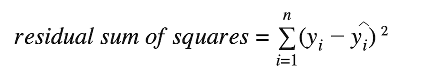
TSS is the total sum of squares.-: defines as the deviation of actual value from the mean value.
The goodness of fit of regression models can be analyzed on the basis of the R-square method. The more the value of r-square near 1, the better is the model.
Note: The value of R-square can also be negative when the model fitted is worse than the average fitted model.
F-Test:
F-Test is any test that utilizes the F-Distribution table to fulfil its purpose (for eg: ANOVA). It compares the ratio of the variances of two populations and determines if they are statistically similar or not.
Null hypothesis suggests that there is no relationship between the two variables. Null hypothesis is also exactly the opposite of the alternative hypothesis. Null hypothesis is generally what researchers or scientists try to disprove and if the null hypothesis gets accepted then we have to make changes in our opinion i.e. we have to make changes in our original opinion or statement in order to match null hypothesis. Null hypothesis is represented as H0. If my alternative hypothesis is that 55% of boys in my town are taller than girls then my alternative hypothesis will be that 55% of boys in my town are not taller than girls.
Alternative hypothesis is a method for reaching a conclusion and making inferences and judgements about certain facts or a statement. This is done on the basis of the data which is available. Usually, the statement which we check regarding the null hypothesis is commonly known as the alternative hypothesis. Most of the times alternative hypothesis is exactly the opposite of the null hypothesis. This is what generally researchers or scientists try to approve. Alternative hypothesis is represented as Ha or H1. If my null hypothesis is that 55% of boys in my town are not taller than girls then my alternative hypothesis will be that 55% of boys in my town are taller than girls.
Polynomial Linear Regression
Polynomial Linear Regression Intuition
Polynomial Regression is a form of linear regression in which the relationship between the independent variable x and dependent variable y is modeled as an nth degree polynomial. Polynomial regression fits a nonlinear relationship between the value of x and the corresponding conditional mean of y, denoted E(y |x)
Why Polynomial Regression:
Uses of Polynomial Regression:
The basic goal of regression analysis is to model the expected value of a dependent variable y in terms of the value of an independent variable x. In simple regression, we used the following equation –
y = a + bx + eHere y is a dependent variable, a is the y-intercept, b is the slope and e is the error rate.
In many cases, this linear model will not work out For example if we analyzing the production of chemical synthesis in terms of temperature at which the synthesis take place in such cases we use a quadratic model
y = a + b1x + b2^2 + eHere y is the dependent variable on x, a is the y-intercept and e is the error rate.
In general, we can model it for nth value.
y = a + b1x + b2x^2 +....+ bnx^nSince regression function is linear in terms of unknown variables, hence these models are linear from the point of estimation.
Hence through the Least Square technique, let’s compute the response value that is y.
Polynomial Regression in Python:
To get the Dataset used for the analysis of Polynomial Regression,
Step 1: Import libraries and dataset
Import the important libraries and the dataset we are using to perform Polynomial Regression.
# Importing the libraries
import numpy as np
import matplotlib.pyplot as plt
import pandas as pd
# Importing the dataset
datas = pd.read_csv('data.csv')
datas
Step 2: Dividing the dataset into 2 components
Divide dataset into two components that is X and y.X will contain the Column between 1 and 2. y will contain the 2 columns.
X = datas.iloc[:, 1:2].values
y = datas.iloc[:, 2].values
Step 3: Fitting Linear Regression to the dataset
Fitting the linear Regression model On two components.
# Fitting Linear Regression to the dataset
from sklearn.linear_model import LinearRegression
lin = LinearRegression()
lin.fit(X, y)
Step 4: Fitting Polynomial Regression to the dataset
Fitting the Polynomial Regression model on two components X and y.
# Fitting Polynomial Regression to the dataset
from sklearn.preprocessing import PolynomialFeatures
poly = PolynomialFeatures(degree = 4)
X_poly = poly.fit_transform(X)
poly.fit(X_poly, y)
lin2 = LinearRegression()
lin2.fit(X_poly, y)
Step 5: In this step, we are Visualising the Linear Regression results using a scatter plot.
# Visualising the Linear Regression results
plt.scatter(X, y, color = 'blue')
plt.plot(X, lin.predict(X), color = 'red')
plt.title('Linear Regression')
plt.xlabel('Temperature')
plt.ylabel('Pressure')
plt.show()
Advantages of using Polynomial Regression:
Disadvantages of using Polynomial Regression
Support Vector
Support Vector Regression Intuition
What are Support Vector Machines? Support Vector Machine (SVM) is a relatively simple Supervised Machine Learning Algorithm used for classification and/or regression. It is more preferred for classification but is sometimes very useful for regression as well. Basically, SVM finds a hyper-plane that creates a boundary between the types of data.
In 2-dimensional space, this hyper-plane is nothing but a line. In SVM, we plot each data item in the dataset in an N-dimensional space, where N is the number of features/attributes in the data. Next, find the optimal hyperplane to separate the data. So by this, you must have understood that inherently, SVM can only perform binary classification (i.e., choose between two classes). However, there are various techniques to use for multi-class problems. Support Vector Machine for Multi-CLass Problems
For example, in a class of fruits, to perform multi-class classification, we can create a binary classifier for each fruit. For say, the ‘mango’ class, there will be a binary classifier to predict if it IS a mango OR it is NOT a mango.
The classifier with the highest score is chosen as the output of the SVM. SVM for complex (Non Linearly Separable) SVM works very well without any modifications for linearly separable data. Linearly Separable Data is any data that can be plotted in a graph and can be separated into classes using a straight line.
Let’s consider two independent variables x1, x2 and one dependent variable which is either a blue circle or a red circle.
From the figure above its very clear that there are multiple lines (our hyperplane here is a line because we are considering only two input features x1, x2) that segregates our data points or does a classification between red and blue circles. So how do we choose the best line or in general the best hyperplane that segregates our data points.
Selecting the best hyper-plane:
One reasonable choice as the best hyperplane is the one that represents the largest separation or margin between the two classes.
So we choose the hyperplane whose distance from it to the nearest data point on each side is maximized. If such a hyperplane exists it is known as the maximum-margin hyperplane/hard margin. So from the above figure, we choose L2.
Let’s consider a scenario like shown below
Here we have one blue ball in the boundary of the red ball. So how does SVM classify the data? It’s simple! The blue ball in the boundary of red ones is an outlier of blue balls. The SVM algorithm has the characteristics to ignore the outlier and finds the best hyperplane that maximizes the margin. SVM is robust to outliers.
So in this type of data points what SVM does is, it finds maximum margin as done with previous data sets along with that it adds a penalty each time a point crosses the margin. So the margins in these type of cases are called soft margin. When there is a soft margin to the data set, the SVM tries to minimize (1/margin+∧(∑penalty)). Hinge loss is a commonly used penalty. If no violations no hinge loss.If violations hinge loss proportional to the distance of violation.
Till now, we were talking about linearly separable data(the group of blue balls and red balls are separable by a straight line/linear line). What to do if data are not linearly separable?
Say, our data is like shown in the figure above.SVM solves this by creating a new variable using a kernel. We call a point xi on the line and we create a new variable yi as a function of distance from origin o.so if we plot this we get something like as shown below
In this case, the new variable y is created as a function of distance from the origin. A non-linear function that creates a new variable is referred to as kernel.
SVM Kernel:
The SVM kernel is a function that takes low dimensional input space and transforms it into higher-dimensional space, ie it converts non separable problem to separable problem. It is mostly useful in non-linear separation problems. Simply put the kernel, it does some extremely complex data transformations then finds out the process to separate the data based on the labels or outputs defined.
Decision Tree
Decision Tree Regression Intuition
Decision Tree is the most powerful and popular tool for classification and prediction. A Decision tree is a flowchart-like tree structure, where each internal node denotes a test on an attribute, each branch represents an outcome of the test, and each leaf node (terminal node) holds a class label.
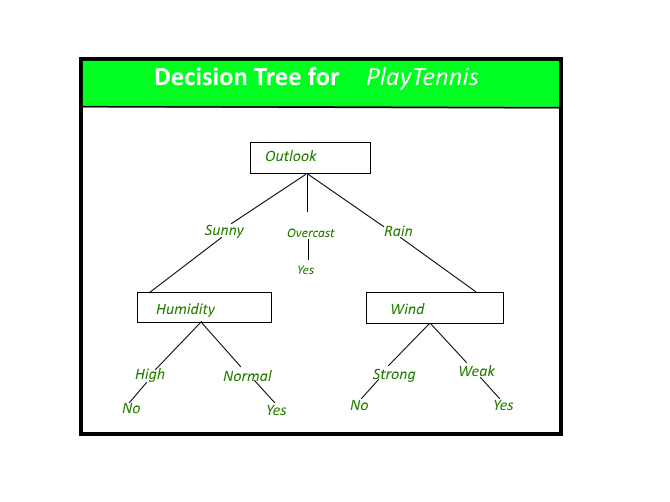
A decision tree for the concept PlayTennis.
Construction of Decision Tree: A tree can be “learned” by splitting the source set into subsets based on an attribute value test. This process is repeated on each derived subset in a recursive manner called recursive partitioning. The recursion is completed when the subset at a node all has the same value of the target variable, or when splitting no longer adds value to the predictions. The construction of a decision tree classifier does not require any domain knowledge or parameter setting, and therefore is appropriate for exploratory knowledge discovery. Decision trees can handle high-dimensional data. In general decision tree classifier has good accuracy. Decision tree induction is a typical inductive approach to learn knowledge on classification.
Entropy:
As discussed above entropy helps us to build an appropriate decision tree for selecting the best splitter. Entropy can be defined as a measure of the purity of the sub split. Entropy always lies between 0 to 1. The entropy of any split can be calculated by this formula.
The algorithm calculates the entropy of each feature after every split and as the splitting continues on, it selects the best feature and starts splitting according to it. For a detailed calculation of entropy with an example, you can refer to this article.
Gini Impurity:
The internal working of Gini impurity is also somewhat similar to the working of entropy in the Decision Tree. In the Decision Tree algorithm, both are used for building the tree by splitting as per the appropriate features but there is quite a difference in the computation of both the methods. Gini Impurity of features after splitting can be calculated by using this formula.
For the detailed computation of the Gini Impurity with examples, you can refer to this article. By using the above formula gini Impurity of feature/split is being calculated.
Information gain:
Information gain is the entropy difference of target and information 1 with respect to target.
Lets Take an example to understand the split in decision tree
In above dataset of golf we have Outlook,Temperature,Humidity,Wind as Input parameters and playing golf is output parameter, to spit the data we must have the knowledge of entropy of parent node.
Now that we know these parameters, we can start the construction of the decision tree. First, we need to determine the root node of the decision tree. As the dataset is split into two subtypes — Attributes and Class, we calculate the entropy for both, and the following Entropies are obtained.
E(Play Golf)
E(Play Golf, Outlook)
E(Play Golf, Temperature)
E(Play Golf, Humidity)
E(Play Golf, Windy)
After the calculation of the Entropies, we calculate the Information Gain.
Gain(PlayGolf, Outlook) = Entropy(PlayGolf) — Entropy(PlayGolf, Outlook)
Gain(PlayGolf, Temperature) = Entropy(PlayGolf) — Entropy(PlayGolf, Temparature)
Gain(PlayGolf, Humidity) = Entropy(PlayGolf) — Entropy(PlayGolf, Humidity)
Gain(PlayGolf, Windy) = Entropy(PlayGolf) — Entropy(PlayGolf, Windy)
Now that we have all the necessary values, we can start the splitting. The first split i.e the root node is decided on the attribute which gives us the highest information gain. In this case, it is the Outlook attribute. The further splits will be decided based on which attribute gives us the homogeneous groups. The complete decision tree is shown below.
Random Forest
Random Forest Regression Intuition
Every decision tree has high variance, but when we combine all of them together in parallel then the resultant variance is low as each decision tree gets perfectly trained on that particular sample data, and hence the output doesn’t depend on one decision tree but on multiple decision trees. In the case of a classification problem, the final output is taken by using the majority voting classifier. In the case of a regression problem, the final output is the mean of all the outputs. This part is called Aggregation.
Random Forest is an ensemble technique capable of performing both regression and classification tasks with the use of multiple decision trees and a technique called Bootstrap and Aggregation, commonly known as bagging
- The basic idea behind this is to combine multiple decision trees in determining the final output rather than relying on individual decision trees.
Random Forest has multiple decision trees as base learning models. We randomly perform row sampling and feature sampling from the dataset forming sample datasets for every model. This part is called Bootstrap.
We need to approach the Random Forest regression technique like any other machine learning technique
• Design a specific question or data and get the source to determine the required data.
- Make sure the data is in an accessible format else convert it to the required format.
- Specify all noticeable anomalies and missing data points that may be required to achieve the required data.
- Create a machine learning model
- Set the baseline model that you want to achieve
- Train the data machine learning model.
- Provide an insight into the model with test data
- Now compare the performance metrics of both the test data and the predicted data from the model.
- If it doesn’t satisfy your expectations, you can try improving your model accordingly or dating your data, or using another data modeling technique.
- At this stage, you interpret the data you have gained and report accordingly.
You will be using a similar sample technique in the below example.
Below is a step-by-step sample implementation of Random Forest Regression.
Implementation:
# Importing the libraries
import numpy as np
import matplotlib.pyplot as plt
import pandas as pd
Step 2: Import and print the dataset
data = pd.read_csv('Salaries.csv')
print(data)
Step 3: Select all rows and column 1 from dataset to x and all rows and column 2 as y
# the coding was not shown which is like that
x= df.iloc [:, : -1] # ” : ” means it will select all rows, “: -1 ” means that it will ignore last column
y= df.iloc [:, -1 :] # ” : ” means it will select all rows, “-1 : ” means that it will ignore all columns except the last one
# the “iloc()” function enables us to select a particular cell of the dataset, that is, it helps us select a value that belongs to a particular row or column from a set of values of a data frame or dataset.
Step 4: Fit Random forest regressor to the dataset
# Fitting Random Forest Regression to the dataset
# import the regressor
from sklearn.ensemble import RandomForestRegressor
# create regressor object
regressor = RandomForestRegressor(n_estimators = 100, random_state = 0)
# fit the regressor with x and y data
regressor.fit(x, y)
Classification Algorithms
Logistic Regression
Logistic Regression Intuition
This article discusses the basics of Logistic Regression and its implementation in Python. Logistic regression is basically a supervised classification algorithm. In a classification problem, the target variable(or output), y, can take only discrete values for a given set of features(or inputs), X.
Contrary to popular belief, logistic regression is a regression model. The model builds a regression model to predict the probability that a given data entry belongs to the category numbered as “1”. Just like Linear regression assumes that the data follows a linear function, Logistic regression models the data using the sigmoid function.
Logistic regression becomes a classification technique only when a decision threshold is brought into the picture. The setting of the threshold value is a very important aspect of Logistic regression and is dependent on the classification problem itself.
The decision for the value of the threshold value is majorly affected by the values of precision and recall.
- eally, we want both precision and recall to be 1, but this seldom is the case.
In the case of a Precision-Recall tradeoff, we use the following arguments to decide upon the threshold:-
1. Low Precision/High Recall:
- applications where we want to reduce the number of false negatives without necessarily reducing the number of false positives, we choose a decision value that has a low value of Precision or a high value of Recall. For example, in a cancer diagnosis application, we do not want any affected patient to be classified as not affected without giving much heed to if the patient is being wrongfully diagnosed with cancer. This is because the absence of cancer can be detected by further medical diseases but the presence of the disease cannot be detected in an already rejected candidate.
2. High Precision/Low Recall:
In applications where we want to reduce the number of false positives without necessarily reducing the number of false negatives, we choose a decision value that has a high value of Precision or a low value of Recall. For example, if we are classifying customers whether they will react positively or negatively to a personalized advertisement, we want to be absolutely sure that the customer will react positively to the advertisement because otherwise, a negative reaction can cause a loss of potential sales from the customer.
Based on the number of categories, Logistic regression can be classified as:
- . binomial:
- rget variable can have only 2 possible types: “0” or “1” which may represent “win” vs “loss”, “pass” vs “fail”, “dead” vs “alive”, etc.
2. multinomial:
- rget variable can have 3 or more possible types which are not ordered(i.e. types have no quantitative significance) like “disease A” vs “disease B” vs “disease C”.
3. ordinal:
it deals with target variables with ordered categories. For example, a test score can be categorized as:“very poor”, “poor”, “good”, “very good”. Here, each category can be given a score like 0, 1, 2, 3.
The reason for taking = 1 is pretty clear now.
= 1 is pretty clear now.
We needed to do a matrix product, but there was no
actual multiplied to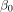in original hypothesis formula. So, we defined
multiplied to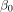in original hypothesis formula. So, we defined = 1.
= 1.
Now, if we try to apply Linear Regression to the above problem, we are likely to get continuous values using the hypothesis we discussed above. Also, it does not make sense forto take values larger than 1 or smaller than 0.
So, some modifications are made to the hypothesis for classification:
where,
is called logistic function or the sigmoid function.
Here is a plot showing g(z):
- g(z) is always bounded between 0 and 1
So, now, we can define conditional probabilities for 2 labels(0 and 1) forobservation as:
We can write it more compactly as:

Now, we define another term, likelihood of parameters as:
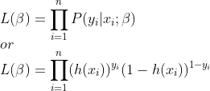
Likelihood is nothing but the probability of data(training examples), given a model and specific parameter values(here, ). It measures the support provided by the data for each possible value of the
). It measures the support provided by the data for each possible value of the . We obtain it by multiplying all
. We obtain it by multiplying all for given
for given .
.
And for easier calculations, we take log-likelihood:
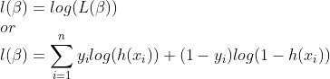
The cost function for logistic regression is proportional to the inverse of the likelihood of parameters. Hence, we can obtain an expression for cost function, J using log-likelihood equation as:
and our aim is to estimateso that cost function is minimized !!
Using Gradient descent algorithm
Firstly, we take partial derivatives ofw.r.t eachto derive the stochastic gradient descent rule(we present only the final derived value here):
Here, y and h(x) represents the response vector and predicted response vector(respectively). Also,is the vector representing the observation values forfeature.
Now, in order to get min ,
,
whereis called learning rate and needs to be set explicitly.
KNN Algorithm
KNN Algorithm Intuition
K-Nearest Neighbours is one of the most basic yet essential classification algorithms in Machine Learning. It belongs to the supervised learning domain and finds intense application in pattern recognition, data mining and intrusion detection.
It is widely disposable in real-life scenarios since it is non-parametric, meaning, it does not make any underlying assumptions about the distribution of data (as opposed to other algorithms such as GMM, which assume a Gaussian distribution of the given data).
We are given some prior data (also called training data), which classifies coordinates into groups identified by an attribute.
As an example, consider the following table of data points containing two features:

Now, given another set of data points (also called testing data), allocate these points a group by analyzing the training set. Note that the unclassified points are marked as ‘White’.
K in KNN is a parameter that refers to the number of the nearest neighbours to include in the majority voting process.
How do we choose K?
Sqrt(n), where n is a total number of data points(if in case n is even we have to make the value odd by adding 1 or subtracting 1 that helps in select better)
When to use KNN?
We can use KNN when Dataset is labelled and noise-free and it’s must be small because KNN is a “Lazy learner”. Let’s understand KNN algorithm with the help of an example
| NAME | AGE | GENDER | CLASS OF SPORTS |
|---|
| Ajay | 32 | 0 | Football |
| Mark | 40 | 0 | Neither |
| Sara | 16 | 1 | Cricket |
| Zaira | 34 | 1 | Cricket |
| Sachin | 55 | 0 | Neither |
| Rahul | 40 | 0 | Cricket |
| Pooja | 20 | 1 | Neither |
| Smith | 15 | 0 | Cricket |
| Laxmi | 55 | 1 | Football |
| Michael | 15 | 0 | Football |
Here male is denoted with numeric value 0 and female with 1. Let’s find in which class of people Angelina will lie whose k factor is 3 and age is 5. So we have to find out the distance using
d=√((x2-x1)²+(y2-y1)²) to find the distance between any two points.
So let’s find out the distance between Ajay and Angelina using formula
d=√((age2-age1)²+(gender2-gender1)²)
d=√((5-32)²+(1-0)²)
d=√729+1
d=27.02
Similarly, we find out all distance one by one.
| Distance between Angelina and | Distance |
|---|
| Ajay | 27.02 |
| Mark | 35.01 |
| Sara | 11.00 |
| Zaira | 9.00 |
| Sachin | 50.01 |
| Rahul | 35.01 |
| Pooja | 15.00 |
| Smith | 10.00 |
| Laxmi | 50.00 |
| Michael | 10.05 |
So the value of k factor is 3 for Angelina. And the closest to 3 is 9,10,10.5 that is closest to Angelina are Zaira, Smith and Michael.
Zaira 9 cricket
Michael 10 cricket
smith 10.5 football
so according to KNN algorithm, Angelina will be in the class of people who like cricket. So this is how KNN algorithm works.
KNN Algorithm Intuition
K-Nearest Neighbours is one of the most basic yet essential classification algorithms in Machine Learning. It belongs to the supervised learning domain and finds intense application in pattern recognition, data mining and intrusion detection.
It is widely disposable in real-life scenarios since it is non-parametric, meaning, it does not make any underlying assumptions about the distribution of data (as opposed to other algorithms such as GMM, which assume a Gaussian distribution of the given data).
We are given some prior data (also called training data), which classifies coordinates into groups identified by an attribute.
As an example, consider the following table of data points containing two features:
Now, given another set of data points (also called testing data), allocate these points a group by analyzing the training set. Note that the unclassified points are marked as ‘White’.

K in KNN is a parameter that refers to the number of the nearest neighbours to include in the majority voting process.
How do we choose K?
Sqrt(n), where n is a total number of data points(if in case n is even we have to make the value odd by adding 1 or subtracting 1 that helps in select better)
When to use KNN?
We can use KNN when Dataset is labelled and noise-free and it’s must be small because KNN is a “Lazy learner”. Let’s understand KNN algorithm with the help of an example
| NAME | AGE | GENDER | CLASS OF SPORTS |
|---|
| Ajay | 32 | 0 | Football |
| Mark | 40 | 0 | Neither |
| Sara | 16 | 1 | Cricket |
| Zaira | 34 | 1 | Cricket |
| Sachin | 55 | 0 | Neither |
| Rahul | 40 | 0 | Cricket |
| Pooja | 20 | 1 | Neither |
| Smith | 15 | 0 | Cricket |
| Laxmi | 55 | 1 | Football |
| Michael | 15 | 0 | Football |
Here male is denoted with numeric value 0 and female with 1. Let’s find in which class of people Angelina will lie whose k factor is 3 and age is 5. So we have to find out the distance using
d=√((x2-x1)²+(y2-y1)²) to find the distance between any two points.
So let’s find out the distance between Ajay and Angelina using formula
d=√((age2-age1)²+(gender2-gender1)²)
d=√((5-32)²+(1-0)²)
d=√729+1
d=27.02
Similarly, we find out all distance one by one.
| Distance between Angelina and | Distance |
|---|
| Ajay | 27.02 |
| Mark | 35.01 |
| Sara | 11.00 |
| Zaira | 9.00 |
| Sachin | 50.01 |
| Rahul | 35.01 |
| Pooja | 15.00 |
| Smith | 10.00 |
| Laxmi | 50.00 |
| Michael | 10.05 |
So the value of k factor is 3 for Angelina. And the closest to 3 is 9,10,10.5 that is closest to Angelina are Zaira, Smith and Michael.
Zaira 9 cricket
Michael 10 cricket
smith 10.5 football
so according to KNN algorithm, Angelina will be in the class of people who like cricket. So this is how KNN algorithm works.
Naive Bayes
Naive Bayes classifiers are a collection of classification algorithms based on
Bayes’ Theorem
. It is not a single algorithm but a family of algorithms where all of them share a common principle, i.e. every pair of features being classified is independent of each other.
To start with, let us consider a dataset, Consider a fictional dataset that describes the weather conditions for playing a game of golf. Given the weather conditions, each tuple classifies the conditions as fit(“Yes”) or unfit(“No”) for playing golf.
| 0 | Rainy | Hot | High | False | No |
|---|
| 1 | Rainy | Hot | High | True | No |
| 2 | Overcast | Hot | High | False | Yes |
| 3 | Sunny | Mild | High | False | Yes |
| 4 | Sunny | Cool | Normal | False | Yes |
| 5 | Sunny | Cool | Normal | True | No |
| 6 | Overcast | Cool | Normal | True | Yes |
| 7 | Rainy | Mild | High | False | No |
| 8 | Rainy | Cool | Normal | False | Yes |
| 9 | Sunny | Mild | Normal | False | Yes |
| 10 | Rainy | Mild | Normal | True | Yes |
| 11 | Overcast | Mild | High | True | Yes |
| 12 | Overcast | Hot | Normal | False | Yes |
| 13 | Sunny | Mild | High | True | No |
The dataset is divided into two parts, namely,
feature matrix
and the
response vector
.
(prediction or output) for each row of feature matrix. In above dataset, the class variable name is ‘Play golf
Assumption:
The fundamental Naive Bayes assumption is that each feature makes an:
contribution to the outcome
With relation to our dataset, this concept can be understood as
- We assume that no pair of features are dependent. For example, the temperature being ‘Hot’ has nothing to do with the humidity or the outlook being ‘Rainy’ has no effect on the winds. Hence, the features are assumed to be independent
- ◇ Secondly, each feature is given the same weight(or importance). For example, knowing only temperature and humidity alone can’t predict the outcome accurately. None of the attributes is irrelevant and assumed to be contributing equally
to the outcome
Bayes’ Theorem
Bayes’ Theorem finds the probability of an event occurring given the probability of another event that has already occurred. Bayes’ theorem is stated mathematically as the following equation:
where A and B are events and P(B) ≠ 0.
Now, with regards to our dataset, we can apply Bayes’ theorem in following way:
where, y is class variable and X is a dependent feature vector (of size
n
) where:

Just to clear, an example of a feature vector and corresponding class variable can be: (refer 1st row of dataset)
X = (Rainy, Hot, High, False) y = No
So basically, P(y|X) here means, the probability of “Not playing golf” given that the weather conditions are “Rainy outlook”, “Temperature is hot”, “high humidity” and “no wind”.
Naive assumption
Now, its time to put a naive assumption to the Bayes’ theorem, which is,
independence
among the features. So now, we split
evidence
into the independent parts.
Now, if any two events A and B are independent, then,
P(A,B) = P(A)P(B)
Hence, we reach to the result:
which can be expressed as:
Now, as the denominator remains constant for a given input, we can remove that term:
Now, we need to create a classifier model. For this, we find the probability of given set of inputs for all possible values of the class variable
y
and pick up the output with maximum probability. This can be expressed mathematically as:
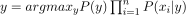
So, finally, we are left with the task of calculating P(y) and P(x
i | y).
Please note that P(y) is also called
class probability
and P(x
i | y) is called
conditional probability
.
The different naive Bayes classifiers differ mainly by the assumptions they make regarding the distribution of P(x
i | y).
Let us try to apply the above formula manually on our weather dataset. For this, we need to do some precomputations on our dataset.We need to find P(x
i | y
j) for each x
i in X and y
j in y. All these calculations have been demonstrated in the tables below:
So, in the figure above, we have calculated P(x
i | y
j) for each x
i in X and y
j in y manually in the tables 1-4. For example, probability of playing golf given that the temperature is cool, i.e P(temp. = cool | play golf = Yes) = 3/9.
Also, we need to find class probabilities (P(y)) which has been calculated in the table 5. For example, P(play golf = Yes) = 9/14.So now, we are done with our pre-computations and the classifier is ready!
Let us test it on a new set of features (let us call it today):
today = (Sunny, Hot, Normal, False)So, probability of playing golf is given by:
and probability to not play golf is given by:
Since, P(today) is common in both probabilities, we can ignore P(today) and find proportional probabilities as:
and
Now, since
These numbers can be converted into a probability by making the sum equal to 1 (normalization):
and
Since
So, prediction that golf would be played is ‘Yes’The method that we discussed above is applicable for discrete data. In case of continuous data, we need to make some assumptions regarding the distribution of values of each feature. The different naive Bayes classifiers differ mainly by the assumptions they make regarding the distribution of P(x
i | y).
Gaussian Naive Bayes classifier
I:
n Gaussian Naive Bayes, continuous values associated with each feature are assumed to be distributed according to a
Gaussian distribution
. A Gaussian distribution is also called
Normal distribution
. When plotted, it gives a bell shaped curve which is symmetric about the mean of the feature values as shown below:
The likelihood of the features is assumed to be Gaussian, hence, conditional probability is given by:
Clustering Algorithm
K-Means Clustering
K-Means Clustering Intro
K-Means Clustering is an Unsupervised Learning algorithm, which groups the unlabeled dataset into different clusters.
- will help if you think of items as points in an n-dimensional space). The algorithm will categorize the items into k groups or clusters of similarity. To calculate that similarity, we will use the euclidean distance as measurement.
The algorithm works as follows:
1. First, we initialize k points, called means or cluster centroids, randomly.
- We categorize each item to its closest mean and we update the mean’s coordinates, which are the averages of the items categorized in that cluster so far.
- We repeat the process for a given number of iterations and at the end, we have our clusters.
The “points” mentioned above are called means because they are the mean values of the items categorized in them. To initialize these means, we have a lot of options. An intuitive method is to initialize the means at random items in the data set. Another method is to initialize the means at random values between the boundaries of the data set (if for a feature x the items have values in [0,3], we will initialize the means with values for x at [0,3]).
The above algorithm in pseudocode is as follows:
Initialize k means with random values
--> For a given number of iterations:
--> Iterate through items:
--> Find the mean closest to the item by calculating
the euclidean distance of the item with each of the means
--> Assign item to mean
--> Update mean by shifting it to the average of the items in that cluste
r

Elbow Method for optimal value of K
Elbow Method for optimal value of k in KMeans
A fundamental step for any unsupervised algorithm is to determine the optimal number of clusters into which the data may be clustered. The Elbow Method is one of the most popular methods to determine this optimal value of k.
We now demonstrate the given method using the K-Means clustering technique using the Sklearn library of python.
from sklearn.cluster import KMeans
from sklearn import metrics
from scipy.spatial.distance import cdist
import numpy as np
import matplotlib.pyplot as plt
Step 2: Creating and Visualizing the dat
# Creating the data
x1 = np.array([3, 1, 1, 2, 1, 6, 6, 6, 5, 6, 7, 8, 9, 8, 9, 9, 8])
x2 = np.array([5, 4, 5, 6, 5, 8, 6, 7, 6, 7, 1, 2, 1, 2, 3, 2, 3])
X = np.array(list(zip(x1, x2))).reshape(len(x1), 2)
# Visualizing the data
plt.plot()
plt.xlim([0, 10])
plt.ylim([0, 10])
plt.title('Dataset')
plt.scatter(x1, x2)
plt.show()
We iterate the values of k from 1 to 9 and calculate the values of distortions for each value of k and calculate the distortion and inertia for each value of k in the given range.
Step 3: Building the clustering model and calculating the values of the Distortion and Inertia:
distortions = []
inertias = []
mapping1 = {}
mapping2 = {}
K = range(1, 10)
for k in K:
# Building and fitting the model
kmeanModel = KMeans(n_clusters=k).fit(X)
kmeanModel.fit(X)
distortions.append(sum(np.min(cdist(X, kmeanModel.cluster_centers_,
'euclidean'), axis=1)) / X.shape[0])
inertias.append(kmeanModel.inertia_)
mapping1[k] = sum(np.min(cdist(X, kmeanModel.cluster_centers_,
'euclidean'), axis=1)) / X.shape[0]
mapping2[k] = kmeanModel.inertia_
plt.plot(K, distortions, 'bx-')
plt.xlabel('Values of K')
plt.ylabel('Distortion')
plt.title('The Elbow Method using Distortion')
plt.show()
K-Means Clustering with Scipy
K- means clustering with SciPy
The K-Means clustering is one of the partitioning approaches and each cluster will be represented with a calculated centroid. All the data points in the cluster will have a minimum distance from the computed centroid.
Scipy is an open-source library that can be used for complex computations. It is mostly used with NumPy arrays. It can be installed by running the command given below.
pip install scipy
- has dedicated packages for the process of clustering. There are two modules that can offer clustering methods.
1. cluster.vq
- cluster.hierarchy
cluster.vq
This module gives the feature of vector quantization to use with the K-Means clustering method. The quantization of vectors plays a major role in reducing the distortion and improving the accuracy. Mostly the distortion here is calculated using the Euclidean distance between the centroid and each vector. Based on this the vector od data points are assigned to a cluster.
cluster.hierarchy
This module provides methods for general hierarchical clustering and its types such as agglomerative clustering. It has various routines that can be used for applying statistical methods on the hierarchies, visualizing the clusters, plotting the clusters, checking linkages in the clusters, and also checking whether two different hierarchies are equivalent.
In this article, cluster.vq module will be used to carry out the K-Means clustering.
K-Means clustering with Scipy library
- K-means clustering can be done on given data by executing the following steps.
1. Normalize the data points.
- Compute the centroids (referred to as code and the 2D array of centroids is referred to as code book).
- Form clusters and assign the data points (referred to as mapping from code book).
cluster.vq.whiten()
This method is used to normalize the data points. Normalization is very important when the attributes considered are of different units. For example, if the length is given in meters and breadth is given in inches, it may produce an unequal variance for the vectors. It is always preferred to have unit variance while performing K-Means clustering to get accurate clusters. Thus, the data array has to pass to whiten() method before any other steps.
cluster.vq.whiten(input_array, check_finite)
Parameters:
- input_array : The array of data points to be normalized.
- check_finite : If set to true, checks whether the input matrix contains only finite numbers. If set to false, ignores checking.
cluster.vq.kmeans()
This vq module has two methods namely kmeans() and kmeans2().
The kmeans() method uses a threshold value which on becoming less than or equal to the change in distortion in the last iteration, the algorithm terminates. This method returns the centroids calculated and the mean value of the Euclidean distances between the observations and the centroids.
cluster.vq.kmeans(input_array, k, iterations, threshold, check_finite)
Parameters:
- input_array : The array of data points to be normalized.
- k : No.of.clusters (centroids)
- iterations : No.of.iterations to perform kmeans so that distortion is minimized. If k is specified it is ignored.
- threshold : An integer value which if becomes less than or equal to change in distortion in last iteration, the algorithm terminates.
- check_finite : If set to true, checks whether the input matrix contains only finite numbers. If set to false, ignores checking.
The kmeans2() method does not use the threshold value to check for convergence. It has more parameters that decide the method of initialization of centroids, a method to handle empty clusters, and validating whether the input matrices contain only finite numbers. This method returns centroids and the clusters to which the vector belongs.
cluster.vq.kmeans2(input_array, k, iterations, threshold, minit, missing, check_finite)
Parameters:
- input_array : The array of data points to be normalized.
- k : No.of.clusters (centroids)
- iterations : No.of.iterations to perform kmeans so that distortion is minimized. If k is specified it is ignored.
- threshold : An integer value which if becomes less than or equal to change in distortion in last iteration, the algorithm terminates.
- minit : A string which denotes the initialization method of the centroids. Possible values are ‘random’, ‘points’, ‘++’, ‘matrix’.
- missing : A string which denotes action upon empty clusters. Possible values are ‘warn’, ‘raise’.
- check_finite : If set to true, checks whether the input matrix contains only finite numbers. If set to false, ignores checking.
cluster.vq.vq()
This method maps the observations to appropriate centroids which are calculated by the kmeans() method. It requires the input matrices to be normalized. It takes the normalized inputs and generated code-book as input. It returns the index in the code-book to which the observation corresponds to and the distance between the observation and its code (centroid).
Random Init improvement
Random Init improvement in K-Means
Random initialization trap is a problem that occurs in the K-means algorithm. In random initialization trap when the centroids of the clusters to be generated are explicitly defined by the User then inconsistency may be created and this may sometimes lead to generating wrong clusters in the dataset. So random initialization trap may sometimes prevent us from developing the correct clusters.
Example :
Suppose you have a dataset with the following points shown in the picture and you want to generate three clusters in this dataset according to their attributes by performing K-means clustering. From the figure, we can get the intuition what are the clusters that are required to be generated. K-means will perform clustering on the basis of the centroids fed into the algorithm and generate the required clusters according to these centroids.
First Trial
Suppose we choose 3 sets of centroids according to the figure shown below. The clusters that are generated corresponding to these centroids are shown in the figure below.
Final Model
Second Trial
Consider another case in which we choose another set of centroids for the dataset as shown. Now the set of clusters generated will be different from the clusters generated in the previous practice.
Final model
Similarly we may get different model outputs on the same dataset. This condition where a different set of clusters is generated when a different set of centroids are provided to the K-means algorithm making it inconsistent and unreliable is called the Random initialization trap.
Implementation:
Feature Engineering
Feature Selection Correlation Matrix
Feature Selection - with Correlation Matrix
- 1.
1. Correlation Matrix
A correlation matrix is simply a table which displays the correlation coefficients for different variables. The matrix depicts the correlation between all the possible pairs of values in a table. It is a powerful tool to summarize a large dataset and to identify and visualize patterns in the given data.
A correlation matrix consists of rows and columns that show the variables. Each cell in a table contains the correlation coefficient
Implementation:
import pandas as pd
import numpy as np
import matplotlib.pyplot as plt
import seaborn as sns
# import data
my_df = pd.read_csv("feature_selection_sample_data.csv")
# run correlation matrix and plot
f, ax = plt.subplots(figsize=(10, 8))
corr = my_df.corr()
sns.heatmap(corr, mask=np.zeros_like(corr, dtype=np.bool),
cmap=sns.diverging_palette(220, 10, as_cmap=True),
square=True, ax=ax)
Let's take an example of dataset
MIN-Max scaling:
MinMaxScaler scales all the data features in the range [0, 1] or else in the range [-1, 1] if there are negative values in the dataset. This scaling compresses all the inliers in the narrow range [0, 0.005].
In the presence of outliers, StandardScaler does not guarantee balanced feature scales, due to the influence of the outliers while computing the empirical mean and standard deviation. This leads to the shrinkage in the range of the feature values.
Feature Selection Extra Tree Classifier
Feature Selection - with Extra Tree Classifier
Extremely Randomized Trees Classifier(Extra Trees Classifier) is a type of ensemble learning technique which aggregates the results of multiple de-correlated decision trees collected in a “forest” to output it’s classification result. In concept, it is very similar to a Random Forest Classifier and only differs from it in the manner of construction of the decision trees in the forest.
Each Decision Tree in the Extra Trees Forest is constructed from the original training sample. Then, at each test node, Each tree is provided with a random sample of k features from the feature-set from which each decision tree must select the best feature to split the data based on some mathematical criteria (typically the Gini Index). This random sample of features leads to the creation of multiple de-correlated decision trees.
To perform feature selection using the above forest structure, during the construction of the forest, for each feature, the normalized total reduction in the mathematical criteria used in the decision of feature of split (Gini Index if the Gini Index is used in the construction of the forest) is computed. This value is called the Gini Importance of the feature. To perform feature selection, each feature is ordered in descending order according to the Gini Importance of each feature and the user selects the top k features according to his/her choice.
Consider the following data:-
Let us build a hypothetical Extra Trees Forest for the above data with five decision trees and the value of k which decides the number of features in a random sample of features be two. Here the decision criteria used will be Information Gain. First, we calculate the entropy of the data. Note the formula for calculating the entropy is:-
where c is the number of unique class labels andis the proportion of rows with output label is i.
Therefore for the given data, the entropy is:-
Note that the formula for Information Gain is:-
Thus,
2nd Decision Tree gets data with the features Temperature and Wind:
Using the above-given formulas:-
Computing total Info Gain for each feature:-
Total Info Gain for Outlook = 0.246+0.246 = 0.492
Total Info Gain for Temperature = 0.029+0.029+0.029 = 0.087
Total Info Gain for Humidity = 0.151+0.151+0.151 = 0.453
Total Info Gain for Wind = 0.048+0.048 = 0.096 Thus the most important variable to determine the output label according to the above constructed Extra Trees Forest is the feature “Outlook”.
The below given code will demonstrate how to do feature selection by using Extra Trees Classifiers.
Step 1: Importing the required libraries
import pandas as pd
import numpy as np
import matplotlib.pyplot as plt
from sklearn.ensemble import ExtraTreesClassifier
Step 2: Loading and Cleaning the Data
# Changing the working location to the location of the file
cd C:\Users\Dev\Desktop\Kaggle
# Loading the data
df = pd.read_csv('data.csv')
# Separating the dependent and independent variables
y = df['Play Tennis']
X = df.drop('Play Tennis', axis = 1)
X.head()
Step 3: Building the Extra Trees Forest and computing the individual feature importances
# Building the model
extra_tree_forest = ExtraTreesClassifier(n_estimators = 5,
criterion ='entropy', max_features = 2)
# Training the model
extra_tree_forest.fit(X, y)
# Computing the importance of each feature
feature_importance = extra_tree_forest.feature_importances_
# Normalizing the individual importances
feature_importance_normalized = np.std([tree.feature_importances_ for tree in
extra_tree_forest.estimators_],
axis = 0)
Step 4: Visualizing and Comparing the results
plt.bar(X.columns, feature_importance_normalized)
plt.xlabel('Feature Labels')
plt.ylabel('Feature Importances')
plt.title('Comparison of different Feature Importances')
plt.show()
Select K Best Method
SelectK Best Method
Univariate feature selection works by selecting the best features based on univariate statistical tests. It can be seen as a preprocessing step to an estimator. Scikit-learn exposes feature selection routines as objects that implement the transform method:
SelectKBest removes all but the k highest scoring features
SelectPercentile removes all but a user-specified highest scoring percentage of features
using common univariate statistical tests for each feature: false positive rate SelectFpr, false discovery rate SelectFdr, or family wise error SelectFwe.
GenericUnivariateSelect allows to perform univariate feature selection with a configurable strategy. This allows to select the best univariate selection strategy with hyper-parameter search estimator.
For instance, we can perform a χ2 test to the samples to retrieve only the two best features as follows:
Principal Component Analysis Implementation
Principal Component Analysis(PCA) Implementation
Principal Component Analysis (PCA) is a statistical procedure that uses an orthogonal transformation that converts a set of correlated variables to a set of uncorrelated variables. PCA is the most widely used tool in exploratory data analysis and in machine learning for predictive models. Moreover, PCA is an unsupervised statistical technique used to examine the interrelations among a set of variables. It is also known as a general factor analysis where regression determines a line of best fit.
import pandas as pd
import numpy as np
import matplotlib.pyplot as plt
import seaborn as sns
%matplotlib inline
# Here we are using inbuilt dataset of scikit learn
from sklearn.datasets import load_breast_cancer
# instantiating
cancer = load_breast_cancer()
# creating dataframe
df = pd.DataFrame(cancer['data'], columns = cancer['feature_names'])
# checking head of dataframe
df.head()
Output:
Code #2:
# Importing standardscalar module
from sklearn.preprocessing import StandardScaler
scalar = StandardScaler()
# fitting
scalar.fit(df)
scaled_data = scalar.transform(df)
# Importing PCA
from sklearn.decomposition import PCA
# Let's say, components = 2
pca = PCA(n_components = 2)
pca.fit(scaled_data)
x_pca = pca.transform(scaled_data)
x_pca.shape
# giving a larger plot
plt.figure(figsize =(8, 6))
plt.scatter(x_pca[:, 0], x_pca[:, 1], c = cancer['target'], cmap ='plasma')
# labeling x and y axes
plt.xlabel('First Principal Component')
plt.ylabel('Second Principal Component')
Output:
Output:
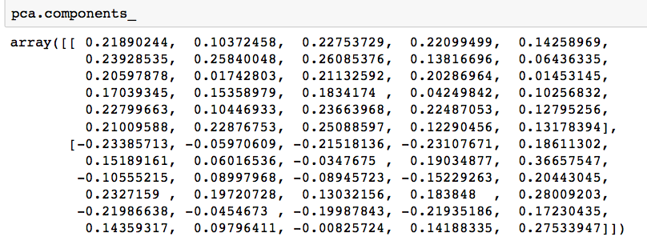
df_comp = pd.DataFrame(pca.components_, columns = cancer['feature_names'])
plt.figure(figsize =(14, 6))
# plotting heatmap
sns.heatmap(df_comp)
Output:

PCA
Principal Component Analysis
The main guiding principle for Principal Component Analysis is FEATURE EXTRACTION i.e. “Features of a data set should be less as well as the similarity between each other is very less.” In PCA, a new set of features are extracted from the original features which are quite dissimilar in nature. So, an n-dimensional feature space gets transformed into an m-dimensional feature space., where the dimensions are orthogonal to each other.
Concept of Orthogonality: (In order to understand this topic, we have to go to the vector space concept in linear algebra) Vector Space is a set of vectors. They can be represented as a linear combination of the smaller set of vectors called BASIS VECTORS. So any vector ‘v’ in a vector space can be represented as:

where a represent ‘n’ scalars and u represents the basis vectors. Basis vectors are orthogonal to each other. Orthogonality of vectors can be thought of an extension of the vectors being perpendicular in a 2-D vector space. So our feature vector (data-set) can be transformed into a set of principal components (just like the basis vectors).
Objectives of PCA:
- The new features are distinct i.e. the covariance between the new features (in case of PCA, they are the principal components) is 0
- . The principal components are generated in order of the variability in the data that it captures. Hence, the first principal component should capture the maximum variability, the second one should capture the next highest variability etc.
- The sum of the variance of the new features / the principal components should be equal to the sum of the variance of the original features.
Working of PCA:
PCA works on a process called Eigenvalue Decomposition
identify the top ‘k’ eigenvectors having top ‘k’ eigenvalues to get the ‘k’ principal components.
Numerical for PCA :
Consider the following dataset
| x1 | 2.5 | 0.5 | 2.2 | 1.9 | 3.1 | 2.3 | 2.0 | 1.0 | 1.5 | 1.1 |
|---|
| x2 | 2.4 | 0.7 | 2.9 | 2.2 | 3.0 | 2.7 | 1.6 | 1.1 | 1.6 | 0.9 |
Step 1: Standardize the Dataset
Mean for = 1.81 =
= 1.81 =
Mean for = 1.91 =
= 1.91 =
We will change the dataset.


| | 0.69 | -1.31 | 0.39 | 0.09 | 1.29 | 0.49 | 0.19 | -0.81 | -0.31 | -0.71 |
|---|
| | 0.49 | -1.21 | 0.99 | 0.29 | 1.09 | 0.79 | -0.31 | -0.81 | -0.31 | -1.01 |
Step 2: Find the Eigenvalues and eigenvectors
Correlation Matrix c =
where, X is the Dataset Matrix (In this numerical, it is a 10 X 2 matrix)
 is the transpose of the X (In this numerical, it is a 2 X 10 matrix) and N is the number of elements = 10
is the transpose of the X (In this numerical, it is a 2 X 10 matrix) and N is the number of elements = 10
So,
{So in order to calculate the Correlation Matrix, we have to do the multiplication of the Dataset Matrix with its transpose}

Using the equation, | C – I | = 0– equation (i) where { \lambda is the eigenvalue and I is the Identity Matrix }
So solving equation (i)


Taking the determinant of the left side, we get

We get two values for , that are (
, that are ( ) = 1.28403 and (
) = 1.28403 and ( ) = 0.0490834. Now we have to find the eigenvectors for the eigenvalues
) = 0.0490834. Now we have to find the eigenvectors for the eigenvalues and
and
To find the eigenvectors from the eigenvalues, we will use the following approach:
First, we will find the eigenvectors for the eigenvalue 1.28403 by using the equation 


Solving the matrices, we get
0.616556x + 0.615444y = 1.28403x ; x = 0.922049 y
(x and y belongs to the matrix X) so if we put y = 1, x comes out to be 0.922049. So now the updated X matrix will look like:

IMP: Till now we haven’t reached to the eigenvectors, we have to a bit of modifications in the X matrix. They are as follows:
A. Find the square root of the sum of the squares of the element in X matrix i.e.

B. Now divide the elements of the X matrix by the number 1.3602 (just found that)
So now we found the eigenvectors for the eigenvector , they are 0.67787 and 0.73518
, they are 0.67787 and 0.73518
Secondly, we will find the eigenvectors for the eigenvalue 0.0490834 by using the equation {Same approach as of previous step)


Solving the matrices, we get
0.616556x + 0.615444y = 0.0490834x; y = -0.922053
(x and y belongs to the matrix X) so if we put x = 1, y comes out to be -0.922053 So now the updated X matrix will look like:

IMP: Till now we haven’t reached to the eigenvectors, we have to a bit of modifications in the X matrix. They are as follows:
A. Find the square root of the sum of the squares of the elements in X matrix i.e.
B. Now divide the elements of the X matrix by the number 1.3602 (just found that)

So now we found the eigenvectors for the eigenvector \lambda_2, they are 0.735176 and 0.677873
Sum of eigenvalues ( ) and (
) and ( ) = 1.28403 + 0.0490834 = 1.33 = Total Variance {Majority of variance comes from
) = 1.28403 + 0.0490834 = 1.33 = Total Variance {Majority of variance comes from }
}
Step 3: Arrange Eigenvalues
The eigenvector with the highest eigenvalue is the Principal Component of the dataset. So in this case, eigenvectors of lambda1 are the principal components.
{Basically in order to complete the numerical we have to only solve till this step, but if we have to prove why we have chosen that particular eigenvector we have to follow the steps from 4 to 6}
Step 4: Form Feature Vector
 This is the FEATURE VECTOR for Numerical
This is the FEATURE VECTOR for Numerical
Where first column are the eigenvectors of & second column are the eigenvectors of
& second column are the eigenvectors of
Step 5: Transform Original Dataset
Use the equation Z = X V

Step 6: Reconstructing Data
Use the equation X = (is Transpose of V), X = Row Zero Mean Data
(is Transpose of V), X = Row Zero Mean Data

So in order to reconstruct the original data, we follow:
Row Original DataSet = Row Zero Mean Data + Original Mean
So for the eigenvectors of first eigenvalue, data can be reconstructed similar to the original dataset. Thus we can say that the Principal Component of the dataset is is 1.28403 followed by
is 1.28403 followed by  that is 0.0490834
that is 0.0490834
Report An Issue
Principal Component Analysis
The main guiding principle for Principal Component Analysis is FEATURE EXTRACTION i.e. “Features of a data set should be less as well as the similarity between each other is very less.” In PCA, a new set of features are extracted from the original features which are quite dissimilar in nature. So, an n-dimensional feature space gets transformed into an m-dimensional feature space., where the dimensions are orthogonal to each other.
Concept of Orthogonality: (In order to understand this topic, we have to go to the vector space concept in linear algebra) Vector Space is a set of vectors. They can be represented as a linear combination of the smaller set of vectors called BASIS VECTORS. So any vector ‘v’ in a vector space can be represented as:
where a represent ‘n’ scalars and u represents the basis vectors. Basis vectors are orthogonal to each other. Orthogonality of vectors can be thought of an extension of the vectors being perpendicular in a 2-D vector space. So our feature vector (data-set) can be transformed into a set of principal components (just like the basis vectors).
Objectives of PCA:
- The new features are distinct i.e. the covariance between the new features (in case of PCA, they are the principal components) is 0
- . The principal components are generated in order of the variability in the data that it captures. Hence, the first principal component should capture the maximum variability, the second one should capture the next highest variability etc.
- The sum of the variance of the new features / the principal components should be equal to the sum of the variance of the original features.
Working of PCA:
PCA works on a process called Eigenvalue Decomposition
identify the top ‘k’ eigenvectors having top ‘k’ eigenvalues to get the ‘k’ principal components.
Numerical for PCA :
Consider the following dataset
| x1 | 2.5 | 0.5 | 2.2 | 1.9 | 3.1 | 2.3 | 2.0 | 1.0 | 1.5 | 1.1 |
|---|
| x2 | 2.4 | 0.7 | 2.9 | 2.2 | 3.0 | 2.7 | 1.6 | 1.1 | 1.6 | 0.9 |
Step 1: Standardize the Dataset
Mean for= 1.81 =
Mean for = 1.91 =
= 1.91 =
We will change the dataset.

| | 0.69 | -1.31 | 0.39 | 0.09 | 1.29 | 0.49 | 0.19 | -0.81 | -0.31 | -0.71 |
|---|
| | 0.49 | -1.21 | 0.99 | 0.29 | 1.09 | 0.79 | -0.31 | -0.81 | -0.31 | -1.01 |
Step 2: Find the Eigenvalues and eigenvectors
Correlation Matrix c =
where, X is the Dataset Matrix (In this numerical, it is a 10 X 2 matrix)
is the transpose of the X (In this numerical, it is a 2 X 10 matrix) and N is the number of elements = 10
So,
{So in order to calculate the Correlation Matrix, we have to do the multiplication of the Dataset Matrix with its transpose}

Using the equation, | C –  I | = 0– equation (i) where { \lambda is the eigenvalue and I is the Identity Matrix }
I | = 0– equation (i) where { \lambda is the eigenvalue and I is the Identity Matrix }
So solving equation (i)

Taking the determinant of the left side, we get


We get two values for , that are (
, that are ( ) = 1.28403 and (
) = 1.28403 and ( ) = 0.0490834. Now we have to find the eigenvectors for the eigenvalues
) = 0.0490834. Now we have to find the eigenvectors for the eigenvalues and
and
To find the eigenvectors from the eigenvalues, we will use the following approach:
First, we will find the eigenvectors for the eigenvalue 1.28403 by using the equation 
Solving the matrices, we get
0.616556x + 0.615444y = 1.28403x ; x = 0.922049 y
(x and y belongs to the matrix X) so if we put y = 1, x comes out to be 0.922049. So now the updated X matrix will look like:

IMP: Till now we haven’t reached to the eigenvectors, we have to a bit of modifications in the X matrix. They are as follows:
A. Find the square root of the sum of the squares of the element in X matrix i.e.

B. Now divide the elements of the X matrix by the number 1.3602 (just found that)

So now we found the eigenvectors for the eigenvector , they are 0.67787 and 0.73518
, they are 0.67787 and 0.73518
Secondly, we will find the eigenvectors for the eigenvalue 0.0490834 by using the equation {Same approach as of previous step)


Solving the matrices, we get
0.616556x + 0.615444y = 0.0490834x; y = -0.922053
(x and y belongs to the matrix X) so if we put x = 1, y comes out to be -0.922053 So now the updated X matrix will look like:

IMP: Till now we haven’t reached to the eigenvectors, we have to a bit of modifications in the X matrix. They are as follows:
A. Find the square root of the sum of the squares of the elements in X matrix i.e.

B. Now divide the elements of the X matrix by the number 1.3602 (just found that)

So now we found the eigenvectors for the eigenvector \lambda_2, they are 0.735176 and 0.677873
Sum of eigenvalues ( ) and (
) and ( ) = 1.28403 + 0.0490834 = 1.33 = Total Variance {Majority of variance comes from
) = 1.28403 + 0.0490834 = 1.33 = Total Variance {Majority of variance comes from }
}
Step 3: Arrange Eigenvalues
The eigenvector with the highest eigenvalue is the Principal Component of the dataset. So in this case, eigenvectors of lambda1 are the principal components.
{Basically in order to complete the numerical we have to only solve till this step, but if we have to prove why we have chosen that particular eigenvector we have to follow the steps from 4 to 6}
Step 4: Form Feature Vector
 This is the FEATURE VECTOR for Numerical
This is the FEATURE VECTOR for Numerical
Where first column are the eigenvectors of & second column are the eigenvectors of
& second column are the eigenvectors of
Step 5: Transform Original Dataset
Use the equation Z = X V

Step 6: Reconstructing Data
Use the equation X = (
( is Transpose of V), X = Row Zero Mean Data
is Transpose of V), X = Row Zero Mean Data
So in order to reconstruct the original data, we follow:
Row Original DataSet = Row Zero Mean Data + Original Mean

So for the eigenvectors of first eigenvalue, data can be reconstructed similar to the original dataset. Thus we can say that the Principal Component of the dataset is is 1.28403 followed by
is 1.28403 followed by  that is 0.0490834
that is 0.0490834
Report An Issue
Principal Component Analysis
The main guiding principle for Principal Component Analysis is FEATURE EXTRACTION i.e. “Features of a data set should be less as well as the similarity between each other is very less.” In PCA, a new set of features are extracted from the original features which are quite dissimilar in nature. So, an n-dimensional feature space gets transformed into an m-dimensional feature space., where the dimensions are orthogonal to each other.
Concept of Orthogonality: (In order to understand this topic, we have to go to the vector space concept in linear algebra) Vector Space is a set of vectors. They can be represented as a linear combination of the smaller set of vectors called BASIS VECTORS. So any vector ‘v’ in a vector space can be represented as:

where a represent ‘n’ scalars and u represents the basis vectors. Basis vectors are orthogonal to each other. Orthogonality of vectors can be thought of an extension of the vectors being perpendicular in a 2-D vector space. So our feature vector (data-set) can be transformed into a set of principal components (just like the basis vectors).
Objectives of PCA:
- The new features are distinct i.e. the covariance between the new features (in case of PCA, they are the principal components) is 0
- . The principal components are generated in order of the variability in the data that it captures. Hence, the first principal component should capture the maximum variability, the second one should capture the next highest variability etc.
- The sum of the variance of the new features / the principal components should be equal to the sum of the variance of the original features.
Working of PCA:
PCA works on a process called Eigenvalue Decomposition
identify the top ‘k’ eigenvectors having top ‘k’ eigenvalues to get the ‘k’ principal components.
Numerical for PCA :
Consider the following dataset
| x1 | 2.5 | 0.5 | 2.2 | 1.9 | 3.1 | 2.3 | 2.0 | 1.0 | 1.5 | 1.1 |
|---|
| x2 | 2.4 | 0.7 | 2.9 | 2.2 | 3.0 | 2.7 | 1.6 | 1.1 | 1.6 | 0.9 |
Step 1: Standardize the Dataset
Mean for = 1.81 =
= 1.81 =
Mean for= 1.91 =
We will change the dataset.

| | 0.69 | -1.31 | 0.39 | 0.09 | 1.29 | 0.49 | 0.19 | -0.81 | -0.31 | -0.71 |
|---|
| | 0.49 | -1.21 | 0.99 | 0.29 | 1.09 | 0.79 | -0.31 | -0.81 | -0.31 | -1.01 |
Step 2: Find the Eigenvalues and eigenvectors
Correlation Matrix c =
where, X is the Dataset Matrix (In this numerical, it is a 10 X 2 matrix)
 is the transpose of the X (In this numerical, it is a 2 X 10 matrix) and N is the number of elements = 10
is the transpose of the X (In this numerical, it is a 2 X 10 matrix) and N is the number of elements = 10
So,
{So in order to calculate the Correlation Matrix, we have to do the multiplication of the Dataset Matrix with its transpose}
Using the equation, | C –  I | = 0– equation (i) where { \lambda is the eigenvalue and I is the Identity Matrix }
I | = 0– equation (i) where { \lambda is the eigenvalue and I is the Identity Matrix }
So solving equation (i)


Taking the determinant of the left side, we get

We get two values for , that are (
, that are ( ) = 1.28403 and (
) = 1.28403 and ( ) = 0.0490834. Now we have to find the eigenvectors for the eigenvalues
) = 0.0490834. Now we have to find the eigenvectors for the eigenvalues and
and
To find the eigenvectors from the eigenvalues, we will use the following approach:
First, we will find the eigenvectors for the eigenvalue 1.28403 by using the equation


Solving the matrices, we get
0.616556x + 0.615444y = 1.28403x ; x = 0.922049 y
(x and y belongs to the matrix X) so if we put y = 1, x comes out to be 0.922049. So now the updated X matrix will look like:
IMP: Till now we haven’t reached to the eigenvectors, we have to a bit of modifications in the X matrix. They are as follows:
A. Find the square root of the sum of the squares of the element in X matrix i.e.
B. Now divide the elements of the X matrix by the number 1.3602 (just found that)

So now we found the eigenvectors for the eigenvector, they are 0.67787 and 0.73518
Secondly, we will find the eigenvectors for the eigenvalue 0.0490834 by using the equation {Same approach as of previous step)
Solving the matrices, we get
0.616556x + 0.615444y = 0.0490834x; y = -0.922053
(x and y belongs to the matrix X) so if we put x = 1, y comes out to be -0.922053 So now the updated X matrix will look like:
IMP: Till now we haven’t reached to the eigenvectors, we have to a bit of modifications in the X matrix. They are as follows:
A. Find the square root of the sum of the squares of the elements in X matrix i.e.

B. Now divide the elements of the X matrix by the number 1.3602 (just found that)

So now we found the eigenvectors for the eigenvector \lambda_2, they are 0.735176 and 0.677873
Sum of eigenvalues ( ) and (
) and ( ) = 1.28403 + 0.0490834 = 1.33 = Total Variance {Majority of variance comes from
) = 1.28403 + 0.0490834 = 1.33 = Total Variance {Majority of variance comes from }
}
Step 3: Arrange Eigenvalues
The eigenvector with the highest eigenvalue is the Principal Component of the dataset. So in this case, eigenvectors of lambda1 are the principal components.
{Basically in order to complete the numerical we have to only solve till this step, but if we have to prove why we have chosen that particular eigenvector we have to follow the steps from 4 to 6}
Step 4: Form Feature Vector
This is the FEATURE VECTOR for Numerical
Where first column are the eigenvectors of & second column are the eigenvectors of
& second column are the eigenvectors of
Step 5: Transform Original Dataset
Use the equation Z = X V
Step 6: Reconstructing Data
Use the equation X =( is Transpose of V), X = Row Zero Mean Data
is Transpose of V), X = Row Zero Mean Data

So in order to reconstruct the original data, we follow:
Row Original DataSet = Row Zero Mean Data + Original Mean

So for the eigenvectors of first eigenvalue, data can be reconstructed similar to the original dataset. Thus we can say that the Principal Component of the dataset is is 1.28403 followed by
is 1.28403 followed by  that is 0.0490834
that is 0.0490834
Report An Issue
TSNE
TSNE
T-distributed Stochastic Neighbor Embedding (t-SNE) is a nonlinear dimensionality reduction technique for embedding high-dimensional data for visualization in a low-dimensional space of two or three dimensions.
What is Dimensionality Reduction?
Dimensionality Reduction is the technique of representing n-dimensions data(multidimensional data with many features) in 2 or 3 dimensions.
An example of dimensionality reduction can be discussed as a classification problem i.e. student will play football or not that relies on both temperature and humidity can be collapsed into just one underlying feature, since both of the features are correlated to a high degree. Hence, we can reduce the number of features in such problems. A 3-D classification problem can be hard to visualize, whereas a 2-D one can be mapped to simple 2-dimensional space and a 1-D problem to a simple line.
How does t-SNE works?
t-SNE a non-linear dimensionality reduction algorithm finds patterns in the data based on the similarity of data points with features, the similarity of points is calculated as the conditional probability that a point A would choose point B as its neighbour.
It then tries to minimize the difference between these conditional probabilities
(or similarities) in higher-dimensional and lower-dimensional space for a perfect representation of data points in lower-dimensional space.
Space and Time Complexity:
The algorithm computes pairwise conditional probabilities and tries to minimize the sum of the difference of the probabilities in higher and lower dimensions. This involves a lot of calculations and computations. So the algorithm takes a lot of time and space to compute. t-SNE has a quadratic time and space complexity in the number of data points.
Code: Python code implementing T-SNE on MNIST dataset
# Importing Necessary Modules.
import numpy as np
import pandas as pd
import matplotlib.pyplot as plt
from sklearn.manifold import TSNE
from sklearn.preprocessing import StandardScaler
Code #1: Reading data
df = pd.read_csv('mnist_train.csv')
# print first five rows of df
print(df.head(4))
# save the labels into a variable l.
l = df['label']
# Drop the label feature and store the pixel data in d.
d = df.drop("label", axis = 1)
Output:
Code #2: Data-preprocessing
# Data-preprocessing: Standardizing the data
from sklearn.preprocessing import StandardScaler
standardized_data = StandardScaler().fit_transform(data)
print(standardized_data.shape)
# TSNE
# Picking the top 1000 points as TSNE
# takes a lot of time for 15K points
data_1000 = standardized_data[0:1000, :]
labels_1000 = labels[0:1000]
model = TSNE(n_components = 2, random_state = 0)
# configuring the parameters
# the number of components = 2
# default perplexity = 30
# default learning rate = 200
# default Maximum number of iterations
# for the optimization = 1000
tsne_data = model.fit_transform(data_1000)
# creating a new data frame which
# help us in plotting the result data
tsne_data = np.vstack((tsne_data.T, labels_1000)).T
tsne_df = pd.DataFrame(data = tsne_data,
columns =("Dim_1", "Dim_2", "label"))
# Plotting the result of tsne
sn.FacetGrid(tsne_df, hue ="label", size = 6).map(
plt.scatter, 'Dim_1', 'Dim_2').add_legend()
plt.show()
Output:
K-Fold Cross Validation
K-Fold Cross Validation
K-Fold Cross Validation
In this method, we split the data-set into k number of subsets(known as folds)
then we perform training on the all the subsets but leave one(k-1) subset for the evaluation of the trained model. In this method, we iterate k times with a different subset reserved for testing purpose each time.
Note:
It is always suggested that the value of k should be 10 as the lower value
of k is takes towards validation and higher value of k leads to LOOCV method.
Example
The diagram below shows an example of the training subsets and evaluation subsets generated in k-fold cross-validation. Here, we have total 25 instances. In first iteration we use the first 20 percent of data for evaluation, and the remaining 80 percent for training([1-5] testing and [5-25] training) while in the second iteration we use the second subset of 20 percent for evaluation, and the remaining three subsets of the data for training([5-10] testing and [1-5 and 10-25] training), and so on.
Total instances: 25
Value of k : 5
No. Iteration Training set observations Testing set observations
1 [ 5 6 7 8 9 10 11 12 13 14 15 16 17 18 19 20 21 22 23 24] [0 1 2 3 4]
2 [ 0 1 2 3 4 10 11 12 13 14 15 16 17 18 19 20 21 22 23 24] [5 6 7 8 9]
3 [ 0 1 2 3 4 5 6 7 8 9 15 16 17 18 19 20 21 22 23 24] [10 11 12 13 14]
4 [ 0 1 2 3 4 5 6 7 8 9 10 11 12 13 14 20 21 22 23 24] [15 16 17 18 19]
5 [ 0 1 2 3 4 5 6 7 8 9 10 11 12 13 14 15 16 17 18 19]
Comparison of train/test split to cross-validation
- antages of train/test split:
1. This runs K times faster than Leave One Out cross-validation because K-fold cross-validation repeats the train/test split K-times.
- Simpler to examine the detailed results of the testing process.
Advantages of cross-validation:
- More accurate estimate of out-of-sample accuracy.
- More “efficient” use of data as every observation is used for both training and testing.
Python code for k fold cross-validation.
# importing cross-validation from sklearn package.
from sklearn import cross_validation
# value of K is 10.
data = cross_validation.KFold(len(train_set), n_folds=10, indices=False)
Deep Learning
Convolution Neural Network
Convolutional Neural Network (CNN)
Convolutional Neural Network(CNN) :
- A convolutional neural network, or CNN, is a deep learning neural network sketched for processing structured arrays of data such as portrayals.
- CNN are very satisfactory at picking up on design in the input image, such as lines, gradients, circles, or even eyes and faces.
- This characteristic that makes convolutional neural network so robust for computer vision.
- CNN can run directly on a underdone image and do not need any preprocessing.
- A convolutional neural network is a feed forward neural network, seldom with up to 20.
- The strength of a convolutional neural network comes from a particular kind of layer called the convolutional layer.
- CNN contains many convolutional layers assembled on top of each other, each one competent of recognizing more sophisticated shapes.
- With three or four convolutional layers it is viable to recognize handwritten digits and with 25 layers it is possible to differentiate human faces.
- The agenda for this sphere is to activate machines to view the world as humans do, perceive it in a alike fashion and even use the knowledge for a multitude of duty such as image and video recognition, image inspection and classification, media recreation, recommendation systems, natural language processing, etc.
Convolutional Neural Network Design :
- The construction of a convolutional neural network is a multi-layered feed-forward neural network, made by assembling many unseen layers on top of each other in a particular order.
- It is the sequential design that give permission to CNN to learn hierarchical attributes.
- In CNN, some of them followed by grouping layers and hidden layers are typically convolutional layers followed by activation layers.
- The pre-processing needed in a ConvNet is kindred to that of the related pattern of neurons in the human brain and was motivated by the organization of the Visual Cortex.
Case Study of CNN for Diabetic retinopathy :
- Diabetic retinopathy also known as diabetic eye disease, is a medical state in which destruction occurs to the retina due to diabetes mellitus, It is a major cause of blindness in advance countries.
- Diabetic retinopathy influence up to 80 percent of those who have had diabetes for 20 years or more.
- The overlong a person has diabetes, the higher his or her chances of growing diabetic retinopathy.
- It is also the main cause of blindness in people of age group 20-64.
- Diabetic retinopathy is the outcome of destruction to the small blood vessels and neurons of the retina.
Need Of CNN
Need of CNN
Before starting with the importance of CNN, we should understand why do we use CNN or what was the need to develop a CNN model when we had fully connected neural networks available.
Need of CNN and why to use CNN over fully connected neural networks:
In an ANN model each feature was ingested in the input layer and then each neuron of the input layer was connected with neurons of the hidden layer. Then weights were assigned to the channels between these neurons.
These neurons would take the input and weight then add the bias term and apply the activation function to produce the output that is to be ingested to the next layer. Hence output was produced in this way.
Now let us consider that we have to solve a problem where our input data is going to be an image. We know that our computer understands image in forms of matrices. To process an image we need to enter each pixel to each neuron, for a 100x100 colored image we have to provide 100x100x3(3 for RGB) input neurons. Now each matrix has a size of 100x100 and exists 3 times for each RGB color which comes out to be 30,000. The main problem that arises now is that we have to provide 30,000 weights from the input layer to the first hidden layer. Now just think how much weights do we need from 1 layer to 2 layer to 3rd until the output layer.
Yes it would be an exponential growth as the number of parameters would drastically increase as we increase the number of neurons in the hidden layer. This was just for an image i.e., composed of 100x100 pixels, just think if the images would be 1920x1080 and contains more than 3 colors. Training such huge datasets might lead to overfitting and also loss of important parameters as there is already a large number of parameters. Also the minor details of each individual images might also get lost in the process. But keep in mind an important thing that for small classification models like to predict whether the picture is of a dog or not we can use ANN networks.
Because of all these problems that arose in the ANN, CNN was introduced. CNN is more accurate and is an efficient way of dealing with image classification problems. In a simple ANN model if we input an image it would convert it to a simple 1D vector before training the model. CNNs are preferred for image classification problems because of their abilities to deal with images. CNNs unlike ANNs doesn't convert an image to 1D vector in the start but first ingests the image through multiple convolutional layers where due to sparse interaction and selective parameter sharing we are left with only important aspects of the image. Then after the convolved layer we flatten the convolved image and pass it to the dense layer.
Importance of CNN
Importance of CNN
Let’s analyze the advantages of a convolutional neural network over a simple deep learning network.
Weight sharing:
It makes use of Local Spatial coherence that provides same weights to some of the edges, In this way, this weight sharing minimizes the cost of computing. This is especially useful when GPU is low power or missing.
Memory Saving:
The reduced number of parameters helps in memory saving. For e.g. in case of MNIST dataset to recognize digits, if we use a CNN with single hidden layer and 10 nodes, it would require few hundred nodes but if we use a simple deep neural network, it would require around 19000 parameters.
Independent of local variations in Image:
Let’s consider if we are training our fully connected neural network for face recognition with head-shot images of people, Now if we test it on an image which is not a head-shot image but full body image then it may fail to recognize. Since the convolutional neural network makes use of convolution operation, they are independent of local variations in the image.
Equivariance:
Equivariance is the property of CNNs and one that can be seen as a specific type of parameter sharing. Conceptually, a function can be considered equivariance if, upon a change in the input, a similar change is reflected in the output. Mathematically, it can be represented as f(g(x)) = g(f(x)). It turns out that convolutions are equivariant to many data transformation operations which helps us to identify, how a particular change in input will affect the output. This helps us to identify any drastic change in the output and retain the reliability of the model.
Independent of Transformations:
CNNs are much more independent to geometrical transformations like Scaling, Rotation etc.
Example of Translation independence – CNN identifies object correctly
Example of Rotation independence – CNN identifies object correctly
Working of CNN
Working of Convolutional Neural Network (CNN)
- this article, we are going to see the working of convolution neural networks with TensorFlow a powerful machine learning library to create neural networks.
Now to know, how a convolution neural network lets break it into parts. the 3 most important parts of this convolution neural networks are,
1. Convolution
- Pooling
- Flattening
These 3 actions are the very special things that make convolution neural networks perform way better compared with other artificial neural networks. Now, let’s discuss them in detail,
Convolution
Think about a 28*28 image like a MINST dataset which is basically a handwritten digits recognition. To build a model to recognize the digits with a simple artificial neural network we will feed each pixels value individually as a feature input inside the model and that is 784 input nodes and you will have a couple of hidden layers and the model may perform well but the problem here is the model will not be able to recognize the important features in the image. It will blindly read the pixels and spit the output.
But an image that is so small in size like this MINST dataset (28 by 28 image) which will give the model 784 inputs each node should divide into hidden layers and there will be a lot of weight assigned and obviously there will be a tremendous amount of calculation. Now think of an image in the size of 1920 by 1080 an Ultra HD, If we follow the same method, practically there will be 2 million input nodes and even we take a hidden layer of 64 nodes which is not at all enough for this large input we will have 130 million weights and there will be an insane amount of calculation and your machine cannot even think of managing that much calculations at a time.
So for this, we first need to find the important features of an image,
By finding these important features we can leave some unwanted pixels back without compromising our output quality. With this method, we can give the model a human level of image recognition in the real world. So for this, we have convolution.
Convolution is the most confused and hardest topic over the internet, but simply it is just searching the image by sliding a filter (kernel) across the image to find different features of the image. Kernels are just 2D matrices with different weights in them. Basically, this kernel will pass over the image replacing the pixel values with the average of the sum of its weight on the respective part of the image. These kernels are an amazing way to find the most important features in the image.
We will apply a number of randomly generated kernels to the image for finding many different features of the images
So after applying this convolution layer to our model we need to pool the features.
Pooling
Now that you have found the important features of the image, still, the amount of input is very large and our machine could not be able to handle this amount of inputs. So here is where pooling comes.
Pooling is just reducing the size of the image without losing the features that we found with convolution. For example, a MaxPooling method will take in a shape of a matrix and return the larger value in that range. By doing this we can compress the image without losing the important features of this image.
Flattening
Flattening is nothing but converting a 3D or 2D matrix into a 1D input for the model this will be our last step to process the image and connect the inputs to a fully connected dense layer for further classification.
To sum up, The way a convolution neural network works is:
- Applying convolution to find different importand features inside the image
syntax: model.add(layers.Conv2D(no. of kernels, size of the kernel, activation=’relu’, input_shape)
syntax: model.add(layers.MaxPooling2D((size of the kernel)))
- FLattening it to a 1-dimensional input from a 3D[color images] or 2D [Black and white images] to pass into the model
syntax: model.add(layers.Flatten()
- Fully connected input and hidden layers to play with weights and biases and activation functions and optimizers.
- Wola! You have built the best image classifier.
A typical CNN model will look like:
# Importing the library
import tensorflow as tf
from tensorflow import keras
# Designing the model
model = tf.keras.models.Sequential([
# Convolutional layer1
tf.keras.layers.Conv2D(
32, (3, 3), activation='relu', input_shape=(32, 32, 3))
tf.keras.layers.MaxPooling2D((2, 2)) # Pooling
# COnvolutional layer2
tf.keras.layers.Conv2D(64, (3, 3), activation='relu')
tf.keras.layers.MaxPooling2D((2, 2)) # Pooling
# COnvolutional layer3
tf.keras.layers.Conv2D(64, (3, 3), activation='relu')
tf.keras.layers.MaxPooling2D((2, 2)) # Pooling
# Flattening the input
tf.keras.layers.Flatten(),
# Fully connected layers
tf.keras.layers.Dense(128, activation='relu'),
tf.keras.layers.Dense(256, activation='relu'),
tf.keras.layers.Dense(10, activation='softmax')
])
# Compiling the model
model.compile(optimizer='adam',
loss=tf.keras.losses.SparseCategoricalCrossentropy(
from_logits=True),
metrics=['accuracy'])
# FItting the data to a model
history = model.fit(train_images, train_labels, epochs=10,
validation_data=(test_images, test_labels))
Output:
Introduction to CNN
Introduction to Convolution Neural Network
- ore diving into the Convolution Neural Network, let us first revisit some concepts of Neural Network. In a regular Neural Network there are three types of layers:
1. Input Layers:
- ’s the layer in which we give input to our model. The number of neurons in this layer is equal to the total number of features in our data (number of pixels in the case of an image).
2. Hidden Layer:
The input from the Input layer is then feed into the hidden layer.
There can be many hidden layers depending upon our model and data size.
- h hidden layer can have different numbers of neurons which are generally greater than the number of features.
The output from each layer is computed by matrix multiplication of output of the previous layer with learnable weights of that layer and then by the addition of learnable biases followed by activation function which makes the network nonlinear.
3. Output Layer:
The output from the hidden layer is then fed into a logistic function like sigmoid or softmax which converts the output of each class into the probability score of each class.
The data is then fed into the model and output from each layer is obtained this step is called feedforward, we then calculate the error using an error function,
some common error functions are cross-entropy, square loss error, etc.
After that, we backpropagate into the model by calculating the derivatives.
This step is called Backpropagation which basically is used to minimize the loss.
Convolution Neural Network
Convolution Neural Networks or covnets are neural networks that share their parameters. Imagine you have an image. It can be represented as a cuboid having its length, width (dimension of the image), and height (as images generally have red, green, and blue channels).
Now imagine taking a small patch of this image and running a small neural network on it, with say, k outputs and represent them vertically.
Now slide that neural network across the whole image, as a result, we will get another image with different width, height, and depth. Instead of just R, G, and B channels now we have more channels but lesser width and height. This operation is called Convolution.
If the patch size is the same as that of the image it will be a regular neural network. Because of this small patch, we have fewer weights.
Image source: Deep Learning Udacity
Layers used to build ConvNets
A covnets is a sequence of layers, and every layer transforms one volume to another through a differentiable function.
Types of layers:
- et’s take an example by running a covnets on of image of dimension 32 x 32 x 3.
1. Input Layer:
- is layer holds the raw input of the image with width 32, height 32, and depth 3.
2. Convolution Layer:
- is layer computes the output volume by computing the dot product between all filters and image patches. Suppose we use a total of 12 filters for this layer we’ll get output volume of dimension 32 x 32 x 12.
3. Activation Function Layer:
- is layer will apply an element-wise activation function to the output of the convolution layer. Some common activation functions are RELU: max(0, x), Sigmoid: 1/(1+e^-x), Tanh, Leaky RELU, etc. The volume remains unchanged hence output volume will have dimension 32 x 32 x 12.
4. Pool Layer: This layer is periodically inserted in the covnets and its main function is to reduce the size of volume which makes the computation fast reduces memory and also prevents overfitting. Two common types of pooling layers are max pooling and average pooling
. If we use a max pool with 2 x 2 filters and stride 2, the resultant volume will be of dimension 16x16x12.
Image source: cs231n.stanford.edu
- Fully-Connected Layer:
This layer is a regular neural network layer that takes input from the previous layer and computes the class scores and outputs the 1-D array of size equal to the number of classes.
Image source: cs231n.stanford.edu
-
References: Stanford Convolution Neural Network Course (CS231n)
Introduction to Padding
CNN | Introduction to Padding
Problem with Simple Convolution Layers
- For a gray scale (n x n) image and (f x f) filter/kernel, the dimensions of the image resulting from a convolution operation is (n – f + 1) x (n – f + 1)
.
For example, for an (8 x 8) image and (3 x 3) filter, the output resulting after convolution operation would be of size (6 x 6). Thus, the image shrinks every time a convolution operation is performed. This places an upper limit to the number of times such an operation could be performed before the image reduces to nothing thereby precluding us from building deeper networks.
- Also, the pixels on the corners and the edges are used much less than those in the middle.
For example,
- Clearly, pixel A is touched in just one convolution operation and pixel B is touched in 3 convolution operations, while pixel C is touched in 9 convolution operations. In general, pixels in the middle are used more often than pixels on corners and edges. Consequently, the information on the borders of images is not preserved as well as the information in the middle.
Padding Input Images
Padding is simply a process of adding layers of zeros to our input images so as to avoid the problems mentioned above.
It implies no padding at all. The input image is left in its valid/unaltered shape.
So,
[(n x n) image] * [(f x f) filter] —> [(n – f + 1) x (n – f + 1) image]
-
where * represents a convolution operation.
- Same Padding:
In this case, we add ‘p’ padding layers such that the output image has the same dimensions as the input image.
So,
[(n + 2p) x (n + 2p) image] * [(f x f) filter] —> [(n x n) image]
-
which gives p = (f – 1) / 2 (because n + 2p – f + 1 = n).
So, if we use a (the 3 x 3) filter the 1 layer of zeros must be added to the borders for the same padding. Similarly, if (5 x 5) filter is used 2 layers of zeros must be appended to the border of the image.
Introduction to Pooling layer
CNN | Introduction to Pooling Layer
The pooling operation involves sliding a two-dimensional filter over each channel of feature map and summarising the features lying within the region covered by the filter.
For a feature map having dimensions nh x nw x nc, the dimensions of output obtained after a pooling layer is
(nh - f + 1) / s x (nw - f + 1)/s x ncwhere,
-> nh - height of feature map
-> nw - width of feature map
-> nc - number of channels in the feature map
-> f - size of filter
-> s - stride lengthA common CNN model architecture is to have a number of convolution and pooling layers stacked one after the other.
Why to use Pooling Layers?
- Pooling layers are used to reduce the dimensions of the feature maps. Thus, it reduces the number of parameters to learn and the amount of computation performed in the network.
- The pooling layer summarises the features present in a region of the feature map generated by a convolution layer. So, further operations are performed on summarised features instead of precisely positioned features generated by the convolution layer. This makes the model more robust to variations in the position of the features in the input image.
Types of Pooling Layers:
Max Pooling
- Max pooling is a pooling operation that selects the maximum element from the region of the feature map covered by the filter. Thus, the output after max-pooling layer would be a feature map containing the most prominent features of the previous feature map.
- This can be achieved using MaxPooling2D layer in keras as follows:
Code #1 : Performing Max Pooling using keras
import numpy as np
from keras.models import Sequential
from keras.layers import MaxPooling2D
# define input image
image = np.array([[2, 2, 7, 3],
[9, 4, 6, 1],
[8, 5, 2, 4],
[3, 1, 2, 6]])
image = image.reshape(1, 4, 4, 1) # define model containing just a single max pooling
layermodel = Sequential( [MaxPooling2D(pool_size = 2, strides = 2)])
# generate pooled outputoutput = model.predict(image)
# print output image
output = np.squeeze(output)print(output)
- Output:
[[9. 7.]
[8. 6.]]
Average Pooling
- Average pooling computes the average of the elements present in the region of feature map covered by the filter. Thus, while max pooling gives the most prominent feature in a particular patch of the feature map, average pooling gives the average of features present in a patch.
- Code #2 : Performing Average Pooling using keras
- ◇ Python3
import numpy as npfrom keras.models import Sequentialfrom keras.layers import AveragePooling2D # define input imageimage = np.array([[2, 2, 7, 3], [9, 4, 6, 1], [8, 5, 2, 4], [3, 1, 2, 6]])image = image.reshape(1, 4, 4, 1) # define model containing just a single average pooling layermodel = Sequential( [AveragePooling2D(pool_size = 2, strides = 2)]) # generate pooled outputoutput = model.predict(image) # print output imageoutput = np.squeeze(output)print(output)
- Output:
[[4.25 4.25]
[4.25 3.5 ]]
Global Pooling
- Global pooling reduces each channel in the feature map to a single value. Thus, an nh x nw x nc feature map is reduced to 1 x 1 x nc feature map. This is equivalent to using a filter of dimensions nh x nw
i.e. the dimensions of the feature map.
Further, it can be either global max pooling or global average pooling.
Code #3 : Performing Global Pooling using keras
import numpy as np
from keras.models import Sequential
from keras.layers import GlobalMaxPooling2D
from keras.layers import GlobalAveragePooling2D
# define input image
image = np.array([[2, 2, 7, 3],
[9, 4, 6, 1],
[8, 5, 2, 4],
[3, 1, 2, 6]])
image = image.reshape(1, 4, 4, 1)
# define gm_model containing just a single global-max pooling layer
gm_model = Sequential( [GlobalMaxPooling2D()])
# define ga_model containing just a single global-average pooling layer
ga_model = Sequential( [GlobalAveragePooling2D()])
# generate pooled output
gm_output = gm_model.predict(image)
ga_output = ga_model.predict(image)
# print output image
gm_output = np.squeeze(gm_output)
ga_output = np.squeeze(ga_output)
print("gm_output: ", gm_output)
print("ga_output: ", ga_output)
- Output:
gm_output: 9.0
ga_output: 4.0625
Multilayer Perceptron
Need for Multilayer Perceptron
Before starting with a multilayer perceptron, the architecture and working of a single perceptron often referred to as a neuron must be clear to you. A single perceptron model just takes the input(x) , applies the weight(w) and adds the bias(b) then this equation z = wx + b is given to the activation function in-order to produce an output.
Need of Multilayer Perceptron
Single layer perceptron is quite useful when we have linearly separable data example,
This data can be separated using the red line,
Let’s take another example of an AND table, The truth table for AND looks like this
Such type of data is simple and a linear hypothesis can be performed on such type of data so a single perceptron can easily do it
Similarly, OR Table is linearly separable and can be resolved using a single perceptron.
But when it comes to complex functions like XOR these can’t be resolved using a simple single perceptron. Truth Table for XOR is:
A linear Hypothesis for such functions isn’t possible but if we do a combination of
[!AND] AND [OR] we will get a XOR
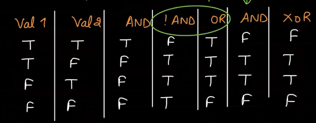
Now you must be thinking what this has to do with Multilayer Perceptrons. All these simple operations can be performed using a single perceptron like [!AND] AND [OR]. When these values are combined in a single architecture, they form a multilayer perceptron model and can be used to perform complex functions like XOR
Architecture of Multilayer Perceptron
Architecture of Multilayer Perceptron
When studying about the architecture of a single perceptron or neuron we came to know that it consisted of Input the input was passed on to the perceptron and it would produce an output based on the activation function.
For Multilayer Perceptrons we’ve 3 main layers
- Input Layer
- Hidden Layer (More than 1 can be present)
- Output Layer
It is a 3-layer neural network, while defining the architecture of the neural network we don’t consider the input layer only hidden and the output layer is considered. Input Layer will take features e.g., x1 and output layer would produce output y_hat.
For better understanding let’s consider the input layer is taking input x1. This input x1 will be passed to all the neurons in the 1
st hidden layer along with the suitable weight and the bias term. Then that neuron would produce some value with the help of the input, weight and the bias term using the activation function and the it would pass it to the neuron in the next hidden layer with some weight and bias, this would continue until the output is produced
In our data we will be dealing with 2 components
‘M’ denotes the number of instances in our data or we can say the number of rows present in our data.
‘N’ denotes the number of input features in our data or the number of columns present in our data.
In this way data is represented X1a represents feature a of row 1 similarly feature a of row 2 and 3 and feature b of row 1 2 and 3 are represented in a more general way we can represent it as
This is a MxN Matrix. But for the sake of calculations in the neural network we will transpose this matrix to a NxM Matrix.
Now that was all for how Input features and examples are represented in the form of Matrix but we also have weights and bias to be passed for computations in each Neuron. First let’s start with the weights. To understand this, we would take an example of a 2-Layer Neural Network having 2 input features X1 and X2
Here we have 3 weights for each feature has 3 neurons are present in the hidden layer.
As the number of neurons present in the Hidden layer = 3 and input features = 2. We would end up with 2 weights for each neuron in the hidden layer leading us to a 3x2 Matrix of weights, it can be shown as
The first row i.e., W11 and W21 represents weights passed to 1
st Neuron in the hidden layer, similarly W12 and W22 are weights passed on to the 2
nd Neuron and so on it goes.
For a more general perspective we can write it in its Vectorized format

Similarly Bias terms are passed in vectorized formats.
Now the last thing is to note that there exists a specific notation which helps in distinguishing whether the weight is from the input layer to 1
st hidden layer or 1
st to 2
nd hidden layer or hidden layer to output layer. To overcome this problem of similarity and to avoid confusion we define a notation as
[L]: represents the Layer
[i]: represents the node in that layer
Forward, Backward Propagation and Final Equation for MLP
Forward, Backward propagation and Final equation for MLP
Forward propagation
Forward Propagation: In forward propagation the flow of data is understood to be from left to right(input to hidden layers to output)
h11 = (w11 x X ) + b11
h12 = (w12 x X) + b12
h13 = (w13 x X) + b13
Now for a neuron to compute the input we know that an activation function is applied to it, considering sigmoid activation here:
a11 = sigmoid(h11)
a12 = sigmoid(h12)
a13 = sigmoid(h13)
If we take a bit more complex neural network with 2 input features, we would have h21 h22 h23 and a21, a22, a23 as well. For all these values we would be having corresponding weights and bias terms.
For output we’ll be having a matrix only having the dimension of
number of neurons in hidden layer x neurons in output layer.
In our case that would be (3,1) Matrix and the elements would be h11,h12 and h13. This would be our h1 it could be depicted as:
This matrix is equal to (W[1] x X) + b[1] ) or matrix of weights multiply with features matrix plus matrix of bias terms
Further it can be written as
This will give rise to a 3x1 matrix.
Now the values passed by the input layer to the first hidden layer will be equal to
a1 = sigmoid(h1)
Now the values from hidden layer will be passed to the output layer so for this activation function would take a1 as input and weight w2 would be applied to produce an output.
h2 = (w2 * a1) + b2
Final y predicted or Y_hat = sigmoid(h2)
In this way forward propagation works
Backward propagation
When we start to learn about neural networks, we came to know about a concept known as cost,
Every time we design a model our goal is to minimize the cost. In back propagation what happens is that after we find an output using forward propagation, we get the cost after obtaining the result we try to minimize the cost by adjusting the weights that were allocated randomly in the first iteration. Thus, backward propagation basically means to re-adjust the randomly assigned weights so that the cost could be reduced and accuracy increased.
Backward propagation can be achieved using gradient descent. Gradient descent can be written as
w` is the updated cost and α is the learning rate and J(w) is basically the cost.
Final Equation for Multilayer perceptron
Equation obtained in Forward Propagation
Here g1 is any activation function sigmoid or ReLu or tanh.
Data is taken as input, multiplied with some weight w and a bias term is added to it, then an activation function is used to generate an output that is done for all features. Hence all the features are passed through the 1st hidden layer and some output is produced.
Let the output produced = h2, this h2 is then passed to another layer of neurons or in our case to the output layer neuron.
Here A1 is the output from 1st layer new weight w2 and bias b2 is passed then the activation function is used to compute A2 that is the output here (Y_hat / y_predicted)
Equations obtained using Backward Propagation
In backward propagation we move from right to left so the first term we consider is h2(Output)
d(h2) = [d(activation function) * A[2] – y] (predicted – actual this gives us cost)
After this we would calculate derivative for our weights d(w2) can be written as:
Similarly, db2 i.e., the matrix of bias terms can be written as 1/m np.sum(db1).
db2 = 1/m * np.sum(db1)
After this we would perform differentiation of dh1 which is nothing but basically
dh1 = (w2 dh2) * (differentiation of our activation function *h1)
Activation Functions
Activation Functions
It is recommended to understand Neural Networks before reading this article.
In the process of building a neural network, one of the choices you get to make is what Activation Function to use in the hidden layer as well as at the output layer of the network. This article discusses some of the choices.
Elements of a Neural Network
Input Layer: This layer accepts input features. It provides information from the outside world to the network, no computation is performed at this layer, nodes here just pass on the information(features) to the hidden layer.
Hidden Layer: Nodes of this layer are not exposed to the outer world, they are part of the abstraction provided by any neural network. The hidden layer performs all sorts of computation on the features entered through the input layer and transfers the result to the output layer.
Output Layer: This layer bring up the information learned by the network to the outer world.
What is an activation function and why use them?
The activation function decides whether a neuron should be activated or not by calculating the weighted sum and further adding bias to it. The purpose of the activation function is to introduce non-linearity into the output of a neuron.
Explanation: We know, the neural network has neurons that work in correspondence with weight, bias, and their respective activation function. In a neural network, we would update the weights and biases of the neurons on the basis of the error at the output. This process is known as back-propagation. Activation functions make the back-propagation possible since the gradients are supplied along with the error to update the weights and biases.
Why do we need Non-linear activation function?
A neural network without an activation function is essentially just a linear regression model. The activation function does the non-linear transformation to the input making it capable to learn and perform more complex tasks.
Mathematical proof
Suppose we have a Neural net like this :-
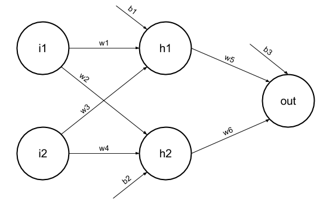
Elements of the diagram are as follows:
Hidden layer i.e. layer 1:
z(1) = W(1)X + b(1) a(1)
Here,
- z(1) is the vectorized output of layer 1
- W(1) be the vectorized weights assigned to neurons of hidden layer i.e. w1, w2, w3 and w4
- X be the vectorized input features i.e. i1 and i2
- b is the vectorized bias assigned to neurons in hidden layer i.e. b1 and b2
- a(1) is the vectorized form of any linear function.
(Note: We are not considering activation function here)
Layer 2 i.e. output layer :-
Note : Input for layer 2 is output from layer 1
z(2) = W(2)a(1) + b(2)
a(2) = z(2)
Calculation at Output layer
z(2) = (W(2) * [W(1)X + b(1)]) + b(2)
z(2) = [W(2) * W(1)] * X + [W(2)*b(1) + b(2)]
Let,
[W(2) * W(1)] = W
[W(2)*b(1) + b(2)] = b
Final output : z(2) = W*X + b
which is again a linear function
This observation results again in a linear function even after applying a hidden layer, hence we can conclude that, doesn’t matter how many hidden layer we attach in neural net, all layers will behave same way because the composition of two linear function is a linear function itself. Neuron can not learn with just a linear function attached to it. A non-linear activation function will let it learn as per the difference w.r.t error. Hence we need activation function.
Variants of Activation Function
Linear Function
- Equation : Linear function has the equation similar to as of a straight line i.e. y = x
- No matter how many layers we have, if all are linear in nature, the final activation function of last layer is nothing but just a linear function of the input of first layer.
- Range :
- inf to +inf
◇ Uses : Linear activation function
- s used at just one place i.e. output layer.
◇ Issues : If we will differentiate linear function to bring non-linearity, result will no more depend on input “x”
and function will become constant, it won’t introduce any ground-breaking behavior to our algorithm.
For example : Calculation of price of a house is a regression problem. House price may have any big/small value, so we can apply linear activation at output layer. Even in this case neural net must have any non-linear function at hidden layers.
Sigmoid Function
- It is a function which is plotted as ‘S’
- haped graph.
◇ Equation : A = 1/(1 + e-x
- ◇ Nature :
- on-linear. Notice that X values lies between -2 to 2, Y values are very steep. This means, small changes in x would also bring about large changes in the value of Y.
◇ Value Range :
- to 1
◇ Uses : Usually used in output layer of a binary classification, where result is either 0 or 1, as value for sigmoid function lies between 0 and 1 only so, result can be predicted easily to be 1 if value is greater than 0.5 and 0
otherwise.
Tanh Function
- The activation that works almost always better than sigmoid function is Tanh function also knows as Tangent Hyperbolic function
- It’s actually mathematically shifted version of the sigmoid function. Both are similar and can be derived from each other.
◇ Equation :-
by bringing mean close to 0. This makes learning for the next layer much easier.
RELU Function
ReLu is less computationally expensive than tanh and sigmoid because it involves simpler mathematical operations. At a time only a few neurons are activated making the network sparse making it efficient and easy for computation.
In simple words, RELU learns much faster than sigmoid and Tanh function.
Softmax Function

- e softmax function is also a type of sigmoid function but is handy when we are trying to handle mult- class classification problems.
◇ Nature :-
- n-linear
◇ Uses :-
- ually used when trying to handle multiple classes. the softmax function was commonly found in the output layer of image classification problems.The softmax function would squeeze the outputs for each class between 0 and 1 and would also divide by the sum of the outputs.
◇ Output:-
- e softmax function is ideally used in the output layer of the classifier where we are actually trying to attain the probabilities to define the class of each input.
◇ The basic rule of thumb is if you really don’t know what activation function to use, then simply use RELU
- s it is a general activation function in hidden layers and is used in most cases these days.
◇ If your output is for binary classification then, sigmoid function
- s very natural choice for output layer.
◇ If your output is for multi-class classification then, Softmax is very useful to predict the probabilities of each classes.
Perceptrons
Intro to ANN
Introduction to Artificial Neutral Networks
ANN learning is robust to errors in the training data and has been successfully applied for learning real-valued, discrete-valued, and vector-valued functions containing problems such as interpreting visual scenes, speech recognition, and learning robot control strategies. The study of artificial neural networks (ANNs) has been inspired in part by the observation that biological learning systems are built of very complex webs of interconnected neurons in brains. The human brain contains a densely interconnected network of approximately 10^11-10^12 neurons, each connected neuron, on average connected, to l0^4-10^5 other neurons. So on average human brain takes approximately 10^-1 to make surprisingly complex decisions. ANN systems are motivated to capture this kind of highly parallel computation based on distributed representations. Generally, ANNs are built out of a densely interconnected set of simple units, where each unit takes a number of real-valued inputs and produces a single real-valued output.
But ANNs are less motivated by biological neural systems, there are many complexities to biological neural systems that are not modeled by ANNs. Some of them are shown in the figures.
Difference between Biological Neurons and Artificial Neurons
| Biological Neurons | Artificial Neurons |
|---|
| Major components: Axions, Dendrites, Synapse | Major Components: Nodes, Inputs, Outputs, Weights, Bias |
| Information from other neurons, in the form of electrical impulses, enters the dendrites at connection points called synapses. The information flows from the dendrites to the cell where it is processed. The output signal, a train of impulses, is then sent down the axon to the synapse of other neurons. | The arrangements and connections of the neurons made up the network and have three layers. The first layer is called the input layer and is the only layer exposed to external signals. The input layer transmits signals to the neurons in the next layer, which is called a hidden layer. The hidden layer extracts relevant features or patterns from the received signals. Those features or patterns that are considered important are then directed to the output layer, which is the final layer of the network. |
| A synapse is able to increase or decrease the strength of the connection. This is where information is stored. | The artificial signals can be changed by weights in a manner similar to the physical changes that occur in the synapses. |
| Approx 1011 neurons. | 102– 104 neurons with current technology |
Difference between the human brain and computers in terms of how information is processed.
| Human Brain(Biological Neuron Network) | Computers(Artificial Neuron Network) |
|---|
| The human brain works asynchronously | Computers(ANN) work synchronously. |
| Biological Neurons compute slowly (several ms per computation) | Artificial Neurons compute fast (<1 nanosecond per computation) |
| The brain represents information in a distributed way because neurons are unreliable and could die any time. | In computer programs every bit has to function as intended otherwise these programs would crash. |
| Our brain changes their connectivity over time to represents new information and requirements imposed on us. | The connectivity between the electronic components in a computer never change unless we replace its components. |
| Biological neural networks have complicated topologies. | ANNs are often in a tree structure. |
| Researchers are still to find out how the brain actually learns. | ANNs use Gradient Descent for learning. |
Advantage of Using Artificial Neural Networks:
- Problem in ANNs can have instances that are represented by many attribute-value pairs.
- ANNs used for problems having the target function output may be discrete-valued, real-valued, or a vector of several real- or discrete-valued attributes.
- ANN learning methods are quite robust to noise in the training data. The training examples may contain errors, which do not affect the final output.
- It is used generally used where the fast evaluation of the learned target function may be required.
- ANNs can bear long training times depending on factors such as the number of weights in the network, the number of training examples considered, and the settings of various learning algorithm parameters.
The McCulloch-Pitts Model of Neuron:
The early model of an artificial neuron is introduced by Warren McCulloch and Walter Pitts in 1943. The McCulloch-Pitts neural model is also known as linear threshold gate. It is a neuron of a set of inputs I1, I2,…, Im and one output y. The linear threshold gate simply classifies the set of inputs into two different classes. Thus the output y is binary. Such a function can be described mathematically using these equations:
W1,W2,W3….Wn are weight values normalized in the range of either (0,1)or (-1,1) and associated with each input line, Sum is the weighted sum, and is a threshold constant. The function f is a linear step function at the threshold
Single-layer Neural Networks (Perceptrons)
Input is multi-dimensional (i.e. input can be a vector):
input x = ( I1, I2, .., In)
Input nodes (or units) are connected (typically fully) to a node (or multiple nodes) in the next layer. A node in the next layer takes a weighted sum of all its inputs:
The rule:
The output node has a “threshold” t.
Rule: If summed input ? t, then it “fires” (output y = 1). Else (summed input < t) it doesn't fire (output y = 0).
which
Limitations of Perceptrons:
(i) The output values of a perceptron can take on only one of two values (0 or 1) due to the hard-limit transfer function.
(ii) Perceptrons can only classify linearly separable sets of vectors. If a straight line or a plane can be drawn to separate the input vectors into their correct categories, the input vectors are linearly separable. If the vectors are not linearly separable, learning will never reach a point where all vectors are classified properly
The Boolean function XOR is not linearly separable (Its positive and negative instances cannot be separated by a line or hyperplane). Hence a single layer perceptron can never compute the XOR function. This is a big drawback that once resulted in the stagnation of the field of neural networks. But this has been solved by multi-layer.
Multi-layer Neural Networks
A Multi-Layer Perceptron (MLP) or Multi-Layer Neural Network contains one or more hidden layers (apart from one input and one output layer). While a single layer perceptron can only learn linear functions, a multi-layer perceptron can also learn non – linear functions.

This neuron takes as input x1,x2,….,x3 (and a +1 bias term), and outputs f(summed inputs+bias), where f(.) called the activation function. The main function of Bias is to provide every node with a trainable constant value (in addition to the normal inputs that the node receives). Every activation function (or non-linearity) takes a single number and performs a certain fixed mathematical operation on it. There are several activation functions you may encounter in practice:
Sigmoid:takes real-valued input and squashes it to range between 0 and 1.
tanh:takes real-valued input and squashes it to the range [-1, 1 ].
ReLu:ReLu stands for Rectified Linear Units. It takes real-valued input and thresholds it to 0 (replaces negative values to 0 ).
Architecture and Learning Process in ANN
Architecture and Learning process in neural network
In order to learn about Backpropagation, we first have to understand the architecture of the neural network and then the learning process in ANN. So, let’s start about knowing the various architectures of the ANN:
Architectures of Neural Network:
ANN is a computational system consisting of many interconnected units called artificial neurons. The connection between artificial neurons can transmit a signal from one neuron to another. So, there are multiple possibilities for connecting the neurons based on which the architecture
So let’s start talking about the various possible architectures:
A. Single-layer Feed Forward Network:
It is the simplest and most basic architecture of ANN’s. It consists of only two layers- the input layer and the output layer. The input layer consists of ‘m’ input neurons connected to each of the ‘n’ output neurons. The connections carry weights w11 and so on. The input layer of the neurons doesn’t conduct any processing – they pass the i/p signals to the o/p neurons. The computations are performed in the output layer. So, though it has 2 layers of neurons, only one layer is performing the computation. This is the reason why the network is known as SINGLE layer. Also, the signals always flow from the input layer to the output layer. Hence, the network is known as FEED FORWARD.
The net signal input to the output neurons is given by:
The signal output from each output neuron will depend on the activation function used.
B. Multi-layer Feed Forward Network:
Multi-Layer Feed Forward Network
The multi-layer feed-forward network is quite similar to the single-layer feed-forward network, except for the fact that there are one or more intermediate layers of neurons between the input and output layer. Hence, the network is termed as multi-layer. Each of the layers may have a varying number of neurons. For example, the one shown in the above diagram has ‘m’ neurons in the input layer and ‘r’ neurons in the output layer and there is only one hidden layer with ‘n’ neurons.
for the kth hidden layer neuron. The net signal input to the neuron in the output layer is given by:
C. Competitive Network:
It is as same as the single-layer feed-forward network in structure. The only difference is that the output neurons are connected with each other (either partially or fully). Below is the diagram for this type of network.
Competitive Network
According to the diagram, it is clear that few of the output neurons are interconnected to each other. For a given input, the output neurons compete against themselves to represent the input. It represents a form of an unsupervised learning algorithm in ANN that is suitable to find the clusters in a data set.
D. Recurrent Network:
Recurrent Network
In feed-forward networks, the signal always flows from the input layer towards the output layer (in one direction only). In the case of recurrent neural networks, there is a feedback loop (from the neurons in the output layer to the input layer neurons). There can be self-loops too.
Learning Process In ANN:
- rning process in ANN mainly depends on four factors, they are:
1. The number of layers in the network (Single-layered or multi-layered)
- Direction of signal flow (Feedforward or recurrent)
- Number of nodes in layers:
- number of node in the input layer is equal to the number of features of the input data set. The number of output nodes will depend on possible outcomes i.e. the number of classes in case of supervised learning. But the number of layers in the hidden layer is to be chosen by the user. A larger number of nodes in the hidden layer, higher the performance but too many nodes may result in overfitting as well as increased computational expense.
4. Weight of Interconnected Nodes: Deciding the value of weights attached with each interconnection between each neuron so that a specific learning problem can be solved correctly is quite a difficult problem by itself. Take an example to understand the problem. Take the example of a Multi-layered Feed-Forward Network, we have to train an ANN model using some data, so that it can classify a new data set, say p_5(3,-2). Say we have deduced that p_1=(5,2) and p_2 = (-1,12) belonging to class C1 while p_3=(3,-5) and p_4 = (-2,-1) belonging to class C2. We assume the values of synaptic weights w_0,w_1,w_2 as -2, 1/2 and 1/4 respectively. But we will NOT get these weight values for every learning problem. For solving a learning problem with ANN, we can start with a set of values for synaptic weights and keep changing those in multiple iterations. The stopping criterion may be the rate of misclassification < 1% or the maximum numbers of iterations should be less than 25(a threshold value).
There may be another problem that, the rate of misclassification may not reduce progressively.
So, we can summarize the learning process in ANN as the combination of – deciding the number of hidden layers, the number of nodes in each of the hidden layers, the direction of signal flow, deciding the connection weight.
Multi-layer feed network is a commonly used architecture. It has been observed that a neural network with even one hidden layer can be used to reasonably approximate any continuous function. The learning methodology adopted to train a multi-layer feed-forward network is Backpropagation.
Backpropagation:
In the above section, we get to know that the most critical activities of training an ANN are to assign the inter-neuron connection weights. In 1986, an efficient way of training an ANN was introduced. In this method, the difference in output values of the output layer and the expected values, are propagated back from the output layer to the preceding layers. Hence, the algorithm implementing this method is known as BACK PROPAGATION i.e. propagating the errors back to the preceding layers.
The backpropagation algorithm is applicable for multi-layer feed-forward network. It is a supervised learning algorithm which continues adjusting the weights of the connected neurons with an objective to reduce the deviation of the output signal from the target output. This algorithm consists of multiple iterations, known as epochs.
- ach epoch consists of two phases:
◇ Forward Phase:
- gnal flow from neurons in the input layer to the neurons in the output layer through the hidden layers. The weights of the interconnections and activation functions are used during the flow. In the output layer, the output signals are generated.
◇ Backward Phase:
Signal is compared with the expected value. The computed errors are propagated backwards from the output to the preceding layer. The error propagated back are used to adjust the interconnection weights between the layers.
BACKPROPAGATION
The above diagram depicts a reasonably simplified version of the back propagation algorithm.
One main part of the algorithm is adjusting the interconnection weights. This is done using a technique termed as Gradient Descent. In simple words, the algorithm calculates the partial derivative of the activation function by each interconnection weight to identify the ‘gradient’ or extent of change of the weight required to minimize the cost function.
In order to understand the back propagation algorithm in detail, let us consider the Multi-layer Feed Forward Network.

The net signal input to the hidden layer neurons is given by:
Ifis the activation function of the hidden layer, then
The net signal input to the output layer neurons is given by:
BACKPROPAGATION NET
Note that the signalsand are assumed to be 1. Ifis the activation function of the hidden layer, then
are assumed to be 1. Ifis the activation function of the hidden layer, then
If is the target of the k-th output neuron, then the cost function defined as the squared error of the output layer is given by:
According to the descent algorithm, partial derivative of cost function E has to be taken with respect to interconnection weights. Mathematically it can be represented as:
{Above expression is for the interconnection weights between the j-th neuron in the hidden layer and the k-th neuron in the output layer.} This expression can be reduced to
where, or
If we assumeas a component of the weight adjustment needed for weight corresponding to the k-th output neuron, then :
- the basis of this, the weights and bias need to be updated as follows:
◇ For weights:
In the above expressions, alpha is the learning rate of the neural network.
- arning rate is a user parameter which decreases or increases the speed with which the interconnection weights of a neural network is to be adjusted. If the learning rate is too high, the adjustment done as a part of the gradient descent process may diverge the data set rather than converging it. On the other hand, if the learning rate is too low, the optimization may consume more time because of the small steps towards the minima.
{All the above calculations are for the interconnection weight between neurons in the hidden layer and neurons in the output layer}
Like the above expressions, we can deduce the expressions for “Interconnection weights between the input and hidden layers:
◇ For weights:
So, in this way, we can use the Backpropagation algorithm to solve various Artificial Neural Networks.
Cross Entropy Classification Functions
Cross-Entropy Cost Functions used in Classification
A Brief Idea of Cost Functions
How does your teacher assess whether you have studied throughout the academic year or not? She takes a test at the end and grades your performance by cross-checking your answers against the desired answers. If you have managed to maintain your accuracy and have shot your scores over a certain benchmark, you have passed. If you haven’t(as unlikely as it is), you need to improve your accuracy and attempt again. So in crude words, tests are used to analyze how well you have performed in class.
In machine learning lingo, a ‘cost function‘ is used to evaluate the performance of a model. An important question that might arise is, how can I assess how well my model is performing? Just like the teacher assesses your accuracy by verifying your answers against the desired answers, you assess the model’s accuracy by comparing the values predicted by the model with the actual values. The cost function quantifies the difference between the actual value and the predicted value and stores it as a single-valued real number. The cost function can analogously be called the ‘loss function‘ if the error in a single training example only is considered. Note that these are applicable only in supervised machine learning algorithms that leverage optimization techniques. Since the cost function is the measure of how much our predicted values are deviating from the correct labelled values, it can be considered to be an inadequacy metric. Hence, all optimization techniques tend to strive to minimize it.
In this article, we shall be covering the cost functions predominantly used in classification models only.
The Cross-Entropy Cost Function
The Idea behind Shannon Entropies
The Entropy of a random variable X can be measured as the uncertainty in the variables’ possible outcomes. This means the more the certainty/probability, the lesser is the entropy.
The formula to calculate the entropy can be represented as:
(1)
(2)
Let us take a simple example.
You have 3 hampers and each of them contains 10 candies.
The first hamper has 3 Eclairs and 7 Alpenliebes.
Red=Eclairs, yellow=Alpenliebe
The second hamper has 5 Eclairs and 5 Alpenliebes.

The third hamper has 10 Eclairs and 0 Alpenliebes.
Using the above equation, we can calculate the values of the entropies in each of the above cases.
You can now see that since hamper 2 has the highest degree of uncertainty, its entropy is the highest possible value, i.e 1. Also, since hamper 3 only has one kind of candies, there is 100% certainty that the candy drawn would be an Eclair. Therefore, there is no uncertainty and the entropy is 0.
The Cost Function of Cross-Entropy
- w that you are familiar with entropy, let us delve further into the cost function of cross-entropy.
Let us take an example of a 3-class classification problem. The model shall accept an image and distinguish whether the image can be classified as that of an apple’s, an orange’s or a mango’s. After processing, the model would provide an output in the form of a probability distribution. The predicted class would have the highest probability.
• Apple = [1,0,0]
- Orange = [0,1,0]
- Mango = [0,0,1]
This means that if the class correctly predicted by the model is, let’s say, apple. Then the predicted probability distribution of apple should tend towards the maximum probability distribution value, i.e, 1. If that is not the case, the weight of the model needs adjustment.
Let’s just say that the following logits were the predicted values:
Logits for apple, orange and mango respectively
These are the respective logit values for the input image being an apple, an orange and a mango. We can deploy a Softmax function to convert these logits into probabilities. The reason why we use softmax is that it is a continuously differentiable function. This makes it possible to calculate the derivative of the cost function for every weight in the neural network.
Difference between the expected value and predicted value, ie 1 and 0.723= 0.277
Even though the probability for apple is not exactly 1, it is closer to 1 than all the other options are.
After subsequent, successive iterative training, the model might improve its output probability considerably and reduce the loss. This is how cross-entropy can reduce the cost function and make the model more accurate. The formula used to predict the cost function is:
(3)
Multi-class Classification Cost Functions
Just like the aforementioned example, multi-class classification is the scenario wherein there are multiple classes, but the input fits in only 1 class. Fruit cannot practically be a mango and an orange both, right?
Let the model’s output highlight the probability distribution for ‘c’ classes for a fixed input ‘d‘.
(4)
Also, let the actual probability distribution be
(5)
Thus, the cross-entropy cost function can be represented as :
Note that y3=yc for all ‘c’ terms
Cross-Entropy(y,P) loss = – (1*log(0.723) + 0*log(0.240)+0*log(0.036)) = 0.14
This is the value of the cross-entropy loss.
Categorical Cross-Entropy
The error in classification for the complete model is given by the mean of cross-entropy for the complete training dataset. This is the categorical cross-entropy. Categorical cross-entropy is used when the actual-value labels are one-hot encoded. This means that only one ‘bit’ of data is true at a time, like [1,0,0], [0,1,0] or [0,0,1]. The categorical cross-entropy can be mathematically represented as:
Categorical Cross-Entropy = (Sum of Cross-Entropy for N data)/N
Binary Cross-Entropy Cost Function
In Binary cross-entropy also, there is only one possible output. This output can have discrete values, either 0 or 1. For example, let an input of a particular fruit’s image be either that of an apple or that of an orange. Now, let us rewrite this sentence: A fruit is either an apple, or it is not an apple. There are only binary, true-false outputs
- ossible.
Let us assume that the actual output is represented as a variable y
now, cross-entropy for a particular data ‘d’ can be simplified as
◇ Cross-entropy(d) = – y*log(p) when y = 1
- Cross-entropy(d) = – (1-y)*log(1-p) when y = 0
Problem implementation for this method is the same as those of multi-class cost functions. The difference is that only binary classes can be accepted.
Sparse Categorical Cross-Entropy
In sparse categorical cross-entropy, truth labels are labelled with integral values. For example, if a 3-class problem is taken into consideration, the labels would be encoded as [1], [2], [3].
Note that binary cross-entropy cost-functions, categorical cross-entropy and sparse categorical cross-entropy are provided with the Keras API.
Implementation and Visualisation of single perceptron
Implementation and Visualization of a single perceptron
Neural Networks, a word that fantasizes most of the Machine Learning/ Deep Learning enthusiasts, this field is having many applications in today’s world and isn’t limited to computer science only. Neural Networks are used for image classifications, speech recognitions, object detection and segmentations etc. Neural Networks are having a huge impact in the medical field, automobile etc.
A neural network is formed of perceptrons. Data is inputted to these perceptrons and they provide an output. This output acts as input to the perceptrons in the next layer until we reach the final layer which provides an output. There can be more than 1 neuron present in the output layer. To understand a neural network, we must understand how a single perceptron works and how it provides output.
Implementation of a single perceptron.
##Importing Libraries
import numpy as np
import matplotlib.pyplot as plt
from sklearn.datasets import make_blobs #make_blobs dataset used
import seaborn as sns
##Initialising our X,Y variable
X,Y = make_blobs(n_samples = 500,centers = 2, n_features = 2,random_state=10)
## Printing shape of X and Y
print(X.shape,Y.shape)
output = (500,2) (500, )
##Visualizing the dataset
sns.scatterplot(X[:,0],X[:,1],c=Y,cmap = plt.cm.Accent)
Scatter Plot of the Dataset
##Defining the sigmoid function
def sigmoid(z):
return (1.0)/(1 + np.exp(-z))
##Defining the predict, loss, update and train functions
def predict(X,weights):
# X -> m x (n+1) matrix and Weights -> n x 1 vector
z=np.dot(X,weights)
predictions = sigmoid(z)
return predictions
def loss(X,Y,weights):
#Binary Cross Entropy/Log Loss
Y_hat = predict(X,weights)
cost = np.mean(-Y*np.log(Y_hat) - (1-Y)*np.log(1-Y_hat))
return cost
def update(X,Y,weights,learning_rate):
Y_hat = predict(X,weights)
dw = np.dot(X.T,Y_hat-Y)
m = X.shape[0]
weights = weights - learning_rate*dw/(float(m))
return weights
def train(X,Y,learning_rate,maxEpochs=100):
ones = np.ones((X.shape[0],1))
X = np.hstack((ones,X))
weights = np.zeros(X.shape[1])
for epochs in range(maxEpochs):
weights = update(X,Y,weights,learning_rate)
if epochs % 10 == 0:
l = loss(X,Y,weights)
print("Epochs Number %d Loss %.4f"%(epochs,l))
return weights
##Running the train function
weight = train(X,Y,learning_rate=0.1,maxEpochs=100)
##Visualisation
x1 = np.linspace(-2,10,10)
x2 = -(weight[0] + weight[1]*x1)/weight[2]
plt.plot(x1,x2,color = 'red')
sns.scatterplot(X[:,0],X[:,1],c=Y,cmap = plt.cm.Accent)
Scatter Plot with the best fit line
Image Processing
Fundamentals of Image Formation
Matrix vs Image and DIY High Res Grayscale
We all know that a computer only understands numbers. Then a question that pops in our mind is if a computer can’t understand anything beyond numbers, then how it is able to display images.
How images are represented in a computer:
In computers images are represented using matrices. Now in python we can define a matrix using arrays. For a 2x2 matrix 2 arrays containing 2 elements can be used similarly any matrix can be formed each array used in the matrix can be considered as a pixel of image.
Example:
The first example shows an array containing only 1 value i.e., 0 hence an image containing only 1 pixel is formed and the colour of the image will be black (Purple here as it’s visualized using matplotlib).
In the second example 2 arrays are created 1 contains 0 and the other contains 1. Hence 2 pixels can be seen 0 producing black colour and 1 producing white colour.
We can save this image by using imwrite().
After saving the image if we view it in any photo viewer, you’ll notice that it needs to be zoomed in a lot as it is a very small image containing 1 2 pixels only.
Program to create 8x8 chess board
zeros = np.zeros((8,8), dtype = int)
for i in range(len(zeros)):
for j in range(len(zeros[i])):
if ((i+j)%2 ==0):
zeros[i][j] = 1
plt.imshow(zeros)
cv.imwrite(“chess_board.png”,zeros)
To create a high pixel density image
Images that we usually see have a resolution written with them example 1920x1080, 1280x720 etc what it basically means that this image is having a width of 1920 pixels and a height of 1080 pixels. Now when we create an image manually using NumPy arrays we create each array and the colour it would produce. Doing so for 1920x1080 times is a hectic process so we use nested for loops in-order to make the process easy.
img = []
for i in range(1080):
temp = []
for j in range(1920):
temp.append(0)
img.append(temp)
img = np.array(img)
In the above code you’ll see that we are appending 0 to temp meaning in the first iteration when i = 0 we’ll produce black colour 1920 times(horizontally) then with the iterations of ‘i' we’ll produce a complete black image having a resolution of 1920x1080
We can save these images using
cv2.imwrite(“image_name.png”,list) {if you imported cv2 as cv use cv.imwrite)
Creating Shades of Black Colour
A pixel can take a value between 0-255 0 being the black and 255 being white as we
Increase the value of 0 by 1 it changes the shade to a lighter version of black. Though it may not be completely visible but it changes and on a significant change we can see it. Hence moving from 0 to255 we tend to move from black to its lighter colours until we reach complete white at 255
Code
lst = []
for i in range(256):
temp = []
for j in range(256):
temp.append(i)
lst.append(temp)
lst = np.array(lst)
cv.imwrite('Shades.png',lst)
RGB
RGB
RGB Colour Space
So far, we have covered how a computer represents an image, how to create a black and white image(formed on a grey palette) and how to export it. We also learned how to create specific resolution images and how we can create patterns like chess board patterns.
Now if we can move forward on how to create a coloured image. Colours are created using RGB colour space. RGB stands for Red Green Blue. Using these three colours we can create any colour as most of the colours are formed using composition of these colours.
To create a RGB pixel we use 3 values instead of 1 value for a pixel
In the above image we create an array which depicts a RGB pixel that is to be shown in the image. The first value can be taken from 0-255 and is for red colour, second for Green and third for Blue.
We already studied that if pixel is 0 then its black and for 255 it’s white (Grayscale palette)
Now a common question that will arise in your mind is how to produce white and black colour in the RGB way. To create a completely white image we have to keep each element of array as 255
plt.imshow([[255,255,255]]) //for white
plt.imshow([[0,0,0]]) //for Black pixel
This was all how a RGB pixel is to be represented now we can move towards how to create colours. Like Red, Blue and Green.
Starting with some basics if we want to create Red colour, we know that a pixel is to be represented using RGB array (R , G , B ) for Red colour we can vary R’s value from 0 to 255 and keep G and B as 0
Similarly for Green, Red and Blue are to be kept as 0 and same is true for Blue as well
#Creating a complete Red Image
arr = np.array([[[ 255 , 0 , 0 ] , [ 255 , 0 , 0 ] ,[ 255 , 0 , 0 ]],
[[ 255 , 0 , 0 ] , [ 255 , 0 , 0 ] ,[ 255 , 0 , 0 ]],
[[ 255 , 0 , 0 ] , [ 255 , 0 , 0 ] ,[ 255 , 0 , 0 ]]])
plt.imshow(arr)
#Creating a Green Image
arr = np.array([[[ 0, 255 , 0 ] , [ 0, 255 , 0 ] ,[ 0, 255 , 0 ]],
[[ 0, 255 , 0 ] , [ 0, 255 , 0 ] ,[ 0, 255 , 0 ]],
[[ 0, 255 , 0 ] , [ 0, 255 , 0 ] ,[ 0, 255 , 0 ]]])
plt.imshow(arr)
#Creating a Blue Image
arr = np.array([[[ 0,0, 255 ] , [ 0,0, 255 ] ,[ 0,0, 255 ]],
[[ 0,0, 255 ] , [ 0,0, 255 ] ,[ 0,0, 255 ]],
[[ 0,0, 255 ] , [ 0,0, 255 ] ,[ 0,0, 255 ]]])
plt.imshow(arr)
#Creating a REE GREEN BLUE Pattern
arr = np.array([[[ 255,0,0 ] , [ 255,0,0 ] ,[ 255,0,0 ]],
[[ 0,255,0 ] , [ 0,255,0 ] ,[ 0,255,0 ]],
[[ 0,0,255 ] , [ 0,0,255 ] ,[ 0,0,255 ]]])
plt.imshow(arr)
Transition and Custom Colours
Transition and Custom Colours
Till now we’ve learned how to create images using grayscale palette and RGB palette. We created complete red, blue and green images and also learned on how to create a pattern of these 3 colours. In this article you’ll learn different shades of colours and how to add transitions of these colours.
We know that when we want to represent a colour like Red, we have to keep green and blue as 0 and we can change the intensity of Red from 0 to 255. In the first case if we keep Red as 0 it’ll create a black image as all three components will be 0 as we keep on increasing the value of red from 0 to 255, we can see different shades of red, 255 being the brightest.
#Different Shades of Red
plt.imshow(np.array([[[ 30 , 0 , 0 ] , [ 60 , 0 , 0 ] ,[ 90 , 0 , 0 ]],
[[ 120 , 0 , 0 ] , [ 150 , 0 , 0 ] ,[ 180 , 0 , 0 ]],
[[ 210 , 0 , 0 ] , [ 240 , 0 , 0 ] ,[ 255 , 0 , 0 ]]]))
Similarly, we can create images of shades of green and blue simply by just keeping the rest of the two values as zero and changing the value of the required colour.
#Merging all the images
plt.imshow(np.array([[[ 0 , 70 , 0 ] , [ 0 ,150, 0 ] ,[ 0 ,255, 0 ]],
[[ 70 , 0 , 0 ] , [ 150 , 0 , 0 ] ,[ 255 , 0 , 0 ]],
[[ 0 , 0 , 70 ] , [ 0 , 0 ,150] ,[ 0 , 0 , 255]]]))
# Creating a transition of the shades of RGB Colours
img = []
# Red
for i in range(256): # from Black to Red
t = []
for j in range(1920):
t.append([i,0,0])
img.append(t)
for i in range(256,0,-1): # from Red to Black using range in the opposite direction from 256 it’ll decrement till it reaches 0
t = []
for j in range(1920):
t.append([i,0,0])
img.append(t)
# Green
for i in range(256): # from Black to Green
t = []
for j in range(1920):
t.append([0,i,0])
img.append(t)
for i in range(256,0,-1): # from Green to Black
t = []
for j in range(1536):
t.append([0,i,0])
img.append(t)
#Blue
for i in range(256): # from Black to Blue
t = []
for j in range(1536):
t.append([0,0,i])
img.append(t)
for i in range(256,0,-1): # from Blue to Black
t = []
for j in range(1536):
t.append([0,0,i])
img.append(t)
img = np.array(img)
plt.imshow(img)

Now we can come to our last topic that is how can we create custom colours. This can be achieved by simply changing the RGB values different combinations of these values produce different colours.
We can use a colour RGB selector to check the value of RGB for different colours.
#Creating Custom Colours
plt.imshow(np.array([[[ 249 , 220 , 104 ] , [ 55 , 126 , 34 ] ,[ 90 , 0 , 0 ]],
[[ 139 , 206 , 247 ] , [ 239 , 134 , 59 ] ,[ 180 , 0 , 0 ]],
[[ 113 , 178 , 229 ] , [ 240 , 0 , 0 ] ,[ 255 , 0 , 0 ]]]))
We can create dense colour images by choosing the RGB values for that particular colour.
For Orange RGB = [239 , 134 , 59]
Image Processing Techniques
RGB vs BGR
RGB vs BGR
Till now we know about 2 colour spaces one being RGB and the other being grey space. In this article we will be studying about another colour space known as BGR. We’ve also covered how we can create and save images but we don’t know how to load images that are in our PC. Let’s first start with how to load an image in our jupyter notebook.
#Load an Image in Jupyter Notebook
Let’s assume the name of the image that we want to load is transition.jpg, in order to load an image from our PC we’ve to use a function known as imread() which is a part of cv2 library.
img = cv2.imread('Transition.jpg')
plt.imshow(img)
This code can be used to load an image named Transition.jpg
If you check the properties of the image saved on your PC you’ll notice that the colour space of the photo is RGB but when you load the photo in the jupyter notebook you’ll notice that the image in your PC isn’t the same as the one that you loaded.
The image RGB is saved in our PC and BGR is loaded in our jupyter notebook. The main difference between these 2 images is the position of colours shown in the images. In the BGR format position of Red and Blue is switched when compared to the RGB format
We can convert BGR image to RGB image by using
# BGR to RGB
img = cv.cvtColor(img, cv.COLOR_RGB2BGR)
plt.imshow(img)
# RGB To BGR
img = cv.cvtColor(img, cv.COLOR_BGR2RGB)
plt.imshow(img)
Frame Extraction and Displaying Images in New Window
Frame Extraction
Before starting Frame Extraction, we should learn how to crop images. For the same transition image if we check its shape it would be something like this:
1536 is the number of rows , 1024 the number of columns and three is the channel of colours.
We can crop an image just by using basic slicing img[ : , : , : ] this can be used to print the full image. In order to crop the image lets say we only want to print first 500 rows and 700 columns we can slice the image as img[ :500, : 1000 , : ] to plot this cropped image we can use
plt.imshow(img[ :500, : 1000 , : ])
Now let’s start with frame extraction for frame extraction let’s take the Transition.jpg image
Let’s extract the red frame
Red = img[ : , : , :0] #0 from the colour channel to extract Red
Green = img[ : , : , :1] #1 from the colour channel to extract Green
Blue = img[ : , : , :2] #2 from the colour channel to extract Blue
plt.imshow can be used to visualize these extracted frames.
Display Images in new window
We have extracted three frames Red, Green and Blue now
Code to display the frame in a new window:
cv2.imshow(“Frame1_Red”,Red)
cv2.waitKey(0) #This can also be used to add delay as well
cv2.imshow("Frame2_Green",Green)
cv2.waitKey(0)
cv2.imshow("Frame3_Blue",Blue)
cv2.waitKey(0)

3 frames loaded
Image Processing On live webcam
Working with the Webcam
We will use the function VideoCapture() which is a part of cv2 library and is used to capture frames inside the function we will pass the value 0 if we are using inbuilt camera or 1 2 3 depending in which port did you connected your external camera in most cases 1 will work.
Let’s get started with displaying frames using web cams.
#Code
cam = cv.VideoCapture(0) #0 because I’m using internal camera of my laptop
while True: #We used an infinite loop so that I can display video instead of images in the window
_, img = cam.read() #_ is a boolean variable that returns true if the frame is available and img is an image array vector captured based on the default frames per second defined explicitly or implicitly
cv.imshow("Frame",img)
key = cv.waitKey(1) #delay of 1ms
if (key == 27): #27 is ASCII for esc
cam.release()
break
Crop and Flip
Cropping a video window is similar to cropping a plotted image, like we used slicing to crop a plotted image we can similarly use slicing to crop a video window.
crop = img [ : , : , : ] #[horizontal, vertical, channel]
To flip an image what we mean is to flip the image that is shown in the window. To flip an image, we will use a function known as flip() flip takes 2 arguments: 1 the image and second whether to flip the image horizontally or vertically.
img = cv2.flip(img , 0) # 0 means horizontal flip
img = cv2.flip(img , 1) # 1 means vertical flip
#Code
cam = cv.VideoCapture(0)
while True:
_, img = cam.read()
img = cv.flip(img, 1)
frame = img[ 100:500 , 400:800 , : ]
cv.imshow("Frame",img)
cv.imshow("Cropped",frame)
key = cv.waitKey(20)
if (key == 27):
cam.release()
break
Frame Extraction and HSV
Frame Extraction and HSV
HSV stands for Hue, Saturation and Value.
#Code for Frame Extraction
cam = cv.VideoCapture(0)
while True:
_, img = cam.read()
img = cv.flip(img, 1)
hsv = cv.cvtColor(img, cv.COLOR_BGR2HSV)
#RGB Extraction
r = img[:,:,0]
g = img[:,:,1]
b = img[:,:,2]
#HSV Extraction
h = hsv[:,:,0]
s = hsv[:,:,1]
v = hsv[:,:,2]
#RGB Frame Display
cv.imshow("Frame",img)
cv.imshow("Red" ,r)
cv.imshow("Green",g)
cv.imshow("Blue" ,b)
#HSV Frame Display
cv.imshow("HSV" ,hsv)
cv.imshow("Hue" ,h)
cv.imshow("Saturation",s)
cv.imshow("Value",v)
key = cv.waitKey(20)
if (key == 27):
cam.release()
break
OpenCV Selfie
Selfie with OpenCV
Before learning how to click a selfie and save it, remember that the ASCII of enter is 13. It is important as we are going to use the enter key to click our photo.
We can take a selfie using basic if condition:
if (key == 13):
cv.imwrite(“Selfie.png”,img)
cam.release()
break
This piece of code can be used to take a selfie. The image will be saved in your current working directory.
We can also take a Black and White and HSV image by using:
gray = cv.cvtColor(img, cv.COLOR_RGB2GRAY)
hsv = cv.cvtColor(img, cv.COLOR_RGB2HSV)
and then cv.write for both gray and hsv.
Complete Code:
cam = cv.VideoCapture(0)
while True:
_, img = cam.read()
img = cv.flip(img, 1)
gray = cv.cvtColor(img, cv.COLOR_RGB2GRAY)
hsv = cv.cvtColor(img, cv.COLOR_RGB2HSV)
cv.imshow("Frame",img)
key = cv.waitKey(20)
if (key == 13):
cv.imwrite('Selfie.png', img)
cv.imwrite('Selfie_Gray.png', gray)
cv.imwrite('Selfie_HSV.png', hsv)
cam.release()
break
Multiple Selfies with OpenCV
By multiple selfies we mean that each time we press enter we could click a selfie and won’t release the camera seems pretty easy right, But the main problem here is the name of selfie as each time we press enter we would end up with only one image taken at last as it would overwrite the previous image every time enter is pressed due to naming conflict. So, we have to click a selfie in such a way that whenever we press enter a selfie is clicked and a name is dynamically given to it. So, the next time we press enter another selfie is clicked and saved with a different name.
To achieve this dynamic naming, we use a variable ‘c’ every time enter is pressed the value of c gets incremented by 1. Therefore, each image will have a different name
#Code
cam = cv.VideoCapture(0)
c = 1
while True:
_, img = cam.read()
img = cv.flip(img, 1)
cv.imshow("Frame",img)
key = cv.waitKey(30)
if (key == 13): # Click selfie if Enter is pressed
cv.imwrite('Selfie/Selfie_' + str(c) + '.png', img) #Dynaic Name given to Each new selfie
c += 1
if (key == 27): # Terminate the program if Escape is Pressed
cam.release()
break
Image Manipulation
Shapes
Drawing Shapes with OpenCV
OpenCV provides many drawing functions to draw geometric shapes and write text on images. Let’s see some of the drawing functions and draw geometric shapes on images using OpenCV.
Some of the drawing functions are :
cv2.line() : Used to draw line on an image.
cv2.rectangle() : Used to draw rectangle on an image.
cv2.circle() : Used to draw circle on an image.
cv2.putText() : Used to write text on image.
To demonstrate the uses of the above-mentioned functions we need an image of size 400 X 400 filled with a solid color (black in this case). Inorder to do this, We can utilize numpy.zeroes function to create the required image.
# Python3 program to draw solid-colored# image using numpy.zeroes() function
import numpy as npimport cv2 # Creating a black image with 3 channels# RGB and unsigned int datatype
img = np.zeros((400, 400, 3), dtype = "uint8")
cv2.imshow('dark', img)
# Allows us to see image# until closed forcefull
cv2.waitKey(0)cv2.destroyAllWindows()
Output :

Now, let’s draw some geometric shapes on this solid black image.
Draw a line :
cv2.line(imageObjectName, (‘start_coordinates’), (‘end_coordinates’), (‘color_in_bgr’), ‘line_thickness’)
# Python3 program to draw line# shape on solid image
import numpy as npimport cv2 # Creating a black image with 3 channels# RGB and unsigned int datatype
img = np.zeros((400, 400, 3), dtype = "uint8") # Creating linecv2.line(img, (20, 160), (100, 160), (0, 0, 255), 10)
cv2.imshow('dark', img) # Allows us to see image# until closed forcefully
cv2.waitKey(0)
cv2.destroyAllWindows()
Output :
Draw a rectangle :
cv2.rectangle(imageObjectName, (‘top_left_vertex_coordinates’), (‘lower_right_vertex_coordinates’), (‘stroke_color_in_bgr’), ‘stroke_thickness’)
# Python3 program to draw rectangle# shape on solid imageimport numpy as npimport cv2 # Creating a black image with 3# channels RGB and unsigned int datatypeimg = np.zeros((400, 400, 3), dtype = "uint8") # Creating rectanglecv2.rectangle(img, (30, 30), (300, 200), (0, 255, 0), 5) cv2.imshow('dark', img) # Allows us to see image# until closed forcefullycv2.waitKey(0)cv2.destroyAllWindows()Output :
Draw a Circle :
cv2.circle(imageObjectName, (‘center_coordinates’), (‘circle_radius’), (‘color_in_bgr’), ‘stroke_thickness’)
# Python3 program to draw circle# shape on solid imageimport numpy as npimport cv2 # Creating a black image with 3# channels RGB and unsigned int datatypeimg = np.zeros((400, 400, 3), dtype = "uint8") # Creating circlecv2.circle(img, (200, 200), 80, (255, 0, 0), 3) cv2.imshow('dark', img) # Allows us to see image# until closed forcefullycv2.waitKey(0)cv2.destroyAllWindows()Output :
Writing text :
cv2.putText(imageObjectName, ‘TextContent’, (‘text_starting_point_coordinates’), ‘fontToBeUsed’, ‘font_size’, (‘text_color’, ‘text_thickness’, ‘line_type’)
# Python3 program to write # text on solid imageimport numpy as npimport cv2 # Creating a black image with 3# channels RGB and unsigned int datatypeimg = np.zeros((400, 400, 3), dtype = "uint8") # writing textfont = cv2.FONT_HERSHEY_SIMPLEXcv2.putText(img, 'GeeksForGeeks', (50, 50), font, 0.8, (0, 255, 0), 2, cv2.LINE_AA) cv2.imshow('dark', img) # Allows us to see image# until closed forcefullycv2.waitKey(0)cv2.destroyAllWindows()Output :
Applications of drawing shapes on images :
- ◇ Drawing geometrical shapes can help us highlight the particular portions of an image.
- Geometrical shapes like line can help us point or identify particular regions in image.
- Writing text on certain regions of images can add description to that region.
Edge Detection
Edge Detection
The objective of the program given is to perform edge detection of images in real-time. In this article, the popular canny edge detection algorithm is used to detect a wide range of edges in images. OpenCV has in-built function cv2.Canny() which takes our input image as first argument and its aperture size(min value and max value) as last two arguments. This is a simple example of how to detect edges in Python.
Implementation
# OpenCV program to perform Edge detection in real time
# import libraries of python OpenCV
# where its functionality resides
import cv2
# np is an alias pointing to numpy library
import numpy as np
# capture frames from a camera
cap = cv2.VideoCapture(0)
# loop runs if capturing has been initialized
while(1):
# reads frames from a camera
ret, frame = cap.read()
# converting BGR to HSV
hsv = cv2.cvtColor(frame, cv2.COLOR_BGR2HSV)
# define range of red color in HSV
lower_red = np.array([30,150,50])
upper_red = np.array([255,255,180])
# create a red HSV colour boundary and
# threshold HSV image
mask = cv2.inRange(hsv, lower_red, upper_red)
# Bitwise-AND mask and original image
res = cv2.bitwise_and(frame,frame, mask= mask)
# Display an original image
cv2.imshow('Original',frame)
# finds edges in the input image and
# marks them in the output map edges
edges = cv2.Canny(frame,100,200)
# Display edges in a frame
cv2.imshow('Edges',edges)
# Wait for Esc key to stop
k = cv2.waitKey(5) & 0xFF
if k == 27:
break
# Close the window
cap.release()
# De-allocate any associated memory usage
cv2.destroyAllWindows()
Output:
Image Blur
Image Blur
OpenCV-Python is a library of Python bindings designed to solve computer vision problems. cv2.blur() method is used to blur an image using the normalized box filter. The function smooths an image using the kernel which is represented as:
Syntax: cv2.blur(src, ksize[, dst[, anchor[, borderType]]])
Parameters:
src: It is the image whose is to be blurred.
ksize: A tuple representing the blurring kernel size.
dst: It is the output image of the same size and type as src.
anchor: It is a variable of type integer representing anchor point and it’s default value Point is (-1, -1) which means that the anchor is at the kernel center.
borderType: It depicts what kind of border to be added. It is defined by flags like cv2.BORDER_CONSTANT, cv2.BORDER_REFLECT, etc
Return Value: It returns an image.
Image used for all the below examples:
Example #1:
# Python program to explain cv2.blur() method
# importing cv2
import cv2
# path
path = r'C:\Users\Rajnish\Desktop\geeksforgeeks\geeks.png'
# Reading an image in default mode
image = cv2.imread(path)
# Window name in which image is displayed
window_name = 'Image'
# ksize
ksize = (10, 10)
# Using cv2.blur() method
image = cv2.blur(image, ksize)
# Displaying the image
cv2.imshow(window_name, image)
Output:
Example #2:
# Python program to explain cv2.blur() method
# importing cv2
import cv2
# path
path = r'C:\Users\Rajnish\Desktop\geeksforgeeks\geeks.png'
# Reading an image in default mode
image = cv2.imread(path)
# Window name in which image is displayed
window_name = 'Image'
# ksize
ksize = (30, 30)
# Using cv2.blur() method
image = cv2.blur(image, ksize, cv2.BORDER_DEFAULT)
# Displaying the image
cv2.imshow(window_name, image)
Output:
Output:
Edge Detection with Blur
Edge Detection and Image Blur
Till now you have learned about drawing shapes, Edge detection and Image blur. In this article we’re going to combine two of the previously learned techniques i.e., Edge detection and Blur. You would be knowing how to add blur to an image, what is kernel and stuff like that and how do we detect edges how and how we reduce noise using threshold values. Now the main question is why do we perform edge detection and image blur simultaneously. The main reason that we perform a blur before edge detection is that it helps in smoothing the edges. What we mean by saying smoothening is that the image that has been blurred before edge detection gives a better result as the edges are a lot smoother.
Blur used before Edge Detection

No Blur used before Edge detection
Now it must be clear to you why we use blur before edge detection. Now let’s code it.
#Code for blur and edge detection
This code is very simple if you know how to blur an image and how to perform edge detection. In this code you simply pass the blurred image as input and perform edge detection
Python3
cam = cv.VideoCapture(0)
while True:
_, img = cam.read()
img = cv.flip(img,1) # Original Frame
blr = cv.blur(img,(5,5)) # Blur on Original Frame
edg = cv.Canny(img, 0,50) # Edge Detection on Original Frame
fin = cv.Canny(blr, 0,50) # Edge Detection on Blur Frame
cv.imshow("Original", img)
cv.imshow("Blur" , blr)
cv.imshow("Edges" , edg)
cv.imshow("Final" , fin)
if (cv.waitKey(10) == 27):
cam.release()
break
Image Scaling
Image Scaling
Image Scaling basically means changing the size of an image; it includes both Up-Scaling an image and Down-Scaling an image. Image scaling has various applications even in data science. It helps in reducing the computation needed while training a CNN model.
Up-Scaling and Down-Scaling are two basic resizing methods. Up-Scaling basically means to increase the size of the image. How we can do it is very simple and will cover it shortly.
Down-Scaling on the other hand is the opposite of Up-Scaling and means reducing the size of an image.
We know an image consists of pixels and each image has a size associated with it which basically tells us how many pixels are there in the rows and columns of the image. Example shape of an image is (720,1080) which means there are 720 rows(height) and 1080 columns(width). If we want to reduce an image's height we have to reduce the number of rows and if we want to reduce the height of an image we have to reduce the number columns. Similarly, we can increase the size of image by increasing the rows and columns of the image .This can be done by indexing img.shape
img.shape[0] will give us the rows(height) and img.shape[1] will give us the columns(width).
Now in the CV2 library we have a function known as resize which can be used for resizing an image.
resize takes 2 arguments 1st is the image 2nd argument consists of 2 arguments which tell how much we want to resize the image if we divide the rows and columns it means down-scaling and if we multiply it means up-scaling
#Code for Up-scaling and Down-Scaling
cam = cv.VideoCapture(0)
while True:
_, img = cam.read()
img = cv.flip(img,1)
resized_1 = cv.resize(img , (int(img.shape[1]/4) ,int(img.shape[0]/4)))
resized_2 = cv.resize(resized_1, (int(resized_1.shape[1]*4) ,int(resized_1.shape[0]*4)))
cv.imshow("Original", img)
cv.imshow("Resized-1", resized_1)
cv.imshow("Upscaled", resized_2)
if cv.waitKey(10) == 27:
cam.release()
break
DIY Insta Filters
Brightness Controru
Brightness Control
Changing the Brightness level is the most basic thing everyone does. In-order to increase the brightness we change the value of each and every pixel, it can be done by either multiplying or adding a value to the pixel's value. In this article, we will see how we can implement this using OpenCV Python.
Before starting with the code let’s discuss some important things. As already discussed we can increase the brightness by multiplying or adding a value to each pixel. But this can lead to a formation of an unnatural tint of blue on the image like the one below:
This blue tint appears on an image because the pixel values for some colours exceed the 0-255 range and when this happens the computer doesn’t know how to represent these particular out of range values leading to the formation of this blue tint.
How to avoid it?
We can avoid it by using simple coding in which any pixel having value less than 0 will be changed to 0 and any value greater than 255 will be changed to 255 therefore every pixel will be in range of 0-255.
#Code to increase brightness
pixels = float(10)
cam = cv.VideoCapture(0)
while True:
_, img = cam.read()
img = cv.flip(img, 1)
img_1 = img + pixels
img_1[img_1 < 0 ] = 0 #For negative values
img_1[img_1 > 255] = 255 # For values > 255
img_1 = img_1.astype(np.uint8) #Keeping the type of image same as og
img_2 = img + (2*pixels) #2x brighter than img_1
img_2[img_2 < 0 ] = 0
img_2[img_2 > 255] = 255
img_2 = img_2.astype(np.uint8)
img_3 = img + (3*pixels) #3x than img_1
img_3[img_3 < 0 ] = 0
img_3[img_3 > 255] = 255
img_3 = img_3.astype(np.uint8)
cv.imshow("Original",img)
cv.imshow("Filter-1",img_1)
cv.imshow("Filter-2",img_2)
cv.imshow("Filter-3",img_3)
if cv.waitKey(1) == 27:
cam.release()
break
#Code to reduce brightness
Python3pixels = float(10)
cam = cv.VideoCapture(0)
while True:
_, img = cam.read()
img = cv.flip(img, 1)
img_1 = img - pixels
img_1[img_1 < 0 ] = 0
img_1[img_1 > 255] = 255
img_1 = img_1.astype(np.uint8)
img_2 = img - (2*pixels)
img_2[img_2 < 0 ] = 0
img_2[img_2 > 255] = 255
img_2 = img_2.astype(np.uint8)
img_3 = img - (3*pixels)
img_3[img_3 < 0 ] = 0
img_3[img_3 > 255] = 255
img_3 = img_3.astype(np.uint8)
cv.imshow("Original",img)
cv.imshow("Filter-1",img_1)
cv.imshow("Filter-2",i
Warm and Cool
Warm and Cool(Video)
In this article we’ll cover how we can add warm and cool shades of colour to our video frames. Let’s start with cool shade. A cool shade is basically a tint of blue colour applied to our original frame. Whereas a warm shade is basically a tint of yellow colour applied to our original frame.
This would have made it clear what it means by warm and cool colours. Now how we can apply them to our frames. We basically create a background of blue colour and then merge it with our original image which will add an effect to our image. Similarly for a warm effect we have to create a yellow background and then merge it.
You might think how to merge the images now, CV2 got you covered. CV2 library contains a function known as addWeighted() which is used to merge 2 images. This function calculates the weighted sum of two arrays.
dst = src1*alpha + src2*beta + gamma
gamma is a scalar added to each sum
cv2.addWeighted takes 5 parameters as input
cv2.addWeighted(src1,alpha,src2,beta,gamma)
The values of alpha and beta tells us about which image will be more reflective in the merged image is alpha is greater than beta image from source 1 will be dominant
Note alpha + beta = 1
#Code for adding blue and yellow background or warmer and cooler tone to th
#Creating a yellow background
yellow = [108,222,249] #Colour shade for Yellow
yellow_background = []
for i in range(720):
temp = []
for j in range(1280):
temp.append(yellow)
yellow_background.append(temp)
yellow_background = np.array(background).astype(np.uint8)
#Creating a blue background
blue = [247,206,139] #Colour shade for blue
blue_background = []
for i in range(720):
temp = []
for j in range(1280):
temp.append(blue)
blue_background.append(temp)
blue_background = np.array(blue_background).astype(np.uint8)
cam = cv.VideoCapture(0)
while True:
_, img = cam.read()
img = cv.flip(img, 1)
img = np.array(img).astype(np.uint8)
#Merged yellow and blue background using addWeighted function with alpha = .90 and beta = .10 and gamma = 0
merged_yellow = cv.addWeighted(img, .90, yellow_background, .10, 0)
merged_blue = cv.addWeighted(img, .90, blue_background, .10, 0)
cv.imshow("Original",img)
cv.imshow("Yellow" ,merged_yellow)
cv.imshow("Blue" ,merged_blue)
if cv.waitKey(1) == 27:
cam.release()
break
Warm and Cool(image)
Application of shades of images to different images there is a difference in videos and images.
It is because the video frames are captured by our web cam or external cam and the resolution remains the same as written in our code.
But when it comes to images there can be a difference in the resolution, size and other aspects of different images as they can be captured using different devices. Example let’s say an image is of 1280x720 pixels and we want to add a cool tone to the image so we have to add a background of blue having size of 1280x720 for another image having 3120x1280 resolution we have to add a background image of 3120x1280. Hence for different images we have to add backgrounds of different sizes.
To overcome this problem, we will define a function that will create a background of the same size as of the image.
def add_tone(img_path, color, a, b):
background = []
img = cv.imread(img_path)
cols = img.shape[1]
rows = img.shape[0]
for i in range(rows):
temp = []
for j in range(cols):
temp.append(color)
background.append(temp)
In the above code a function add_tone is created which dynamically sets the size of image as size of the background
#Code
def add_tone(img_path, color, a, b):
background = []
img = cv.imread(img_path)
cols = img.shape[1]
rows = img.shape[0]
for i in range(rows):
temp = []
for j in range(cols):
temp.append(color)
background.append(temp)
background = np.array(background).astype(np.uint8)
final = cv.addWeighted(img, a , background, b , 0)
cv.imshow('Original',img)
cv.waitKey(0)
cv.imshow('Processed',final)
cv.waitKey(0)
#Example on how to add filters to an image [80,20,200] denotes the color of background/filter
add_tone('img_3.png', [80,20,200], .5, .5)
Merging two Images
Merging two Images
Merging two images is a similar concept like adding a filter to an image. When we add a filter and that filter is just a background of colors that we make. Now merging two images is a concept in which we merge two images, for example a filter of transition of colors and a photo on which this transition is applied. We will merge them by defining a merge function in which sources of both images will be passed along with the alpha and beta value.
#Code
def merge(foreground_path, background_path, a, b):
background = []
img = cv.imread(foreground_path)
background = cv.imread(background_path)
background = cv.resize(background, (img.shape[1], img.shape[0]))
final = cv.addWeighted(img, a, background, b , 0)
cv.imshow('Original',img)
cv.waitKey(0)
cv.imshow('Processed',final)
cv.waitKey(0)
merge('img_4.png','b4.jpeg', .5,.6)
b4.jpeg
img4.jpeg
After Merging
Difference between 2 images:
Masking
Thresholding on Grayscale
Thresholding is a technique in OpenCV, which is the assignment of pixel values in relation to the threshold value provided. In thresholding, each pixel value is compared with the threshold value. If the pixel value is smaller than the threshold, it is set to 0, otherwise, it is set to a maximum value (generally 255). Thresholding is a very popular segmentation technique, used for separating an object considered as a foreground from its background. A threshold is a value which has two regions on its either side i.e. below the threshold or above the threshold.
Initially we’ll start thresholding on a grayscale frame. To convert our BGR frame to a grayscale frame we use:
cv2.cvtColor(img,cv2.COLOR_BGR2Gray)
In-order to see the changes in the frame we will display all the frames simultaneously and to do that we will keep the frame size as 640,360 this will help us in observing multiple frames together. As we have to make changes to multiple frames we will copy the attributes of our original frame and manipulate it and display it in the other frames. To copy we will use .copy() function. If we don’t use the .copy() function the changes made in the 2
nd frame will also be depicted in the original frame and we won’t be able to observe the changes. How we use .copy() function
new_frame = original_frame.copy()
Using this code attributes of the original frame will be copied to the new frame and any change made in the new_frame will be limited and shown in it only.
#Code for thresholding on Grayscale
cam = cv.VideoCapture(0)
while True:
_ , img = cam.read()
img = cv.resize(img , (int(1280/2), int(720/2)))
img = cv.flip(img,1)
gray = cv.cvtColor(img , cv.COLOR_BGR2GRAY)
gray_thr_1 = gray.copy()
gray_thr_1[gray_thr_1 > 200] = 30 # Black Background Threshold
gray_thr_2 = gray.copy()
gray_thr_2[gray_thr_2 > 200] = 100 # White Background Threshold
cv.imshow('Original' ,img)
cv.imshow('Gray' ,gray)
cv.imshow('Gray_Thr1' ,gray_thr_1)
cv.imshow('Gray_Thr2' ,gray_thr_2)
if cv.waitKey(1) == 27:
cam.release()
break
Sample Output displaying 4 frames:
Colour Masking a Video
Masking is a common technique to extract a particular region or particular colors from a frame. In order to perform color masking we provide a range of RGB values, this range specifies the range of pixel values which will be masked. Before masking a frame, we use cv2.blur, this function is used to smoothen the image. Smoothing the image helps in creating a better quality of picture as it helps in reducing the noise. Till now we know how to manually use thresholding on a frame, in that type of thresholding all the pixels are checked according to the thresholding condition and the value of the pixel is changed. In this article we will do thresholding using cv2.inRange() function.
inRange(mask,lower,upper)
#Code for masking a video
camera = cv.VideoCapture(0)
lower = np.array([0,0,0])
upper = np.array([60,60,60])
while True:
_ , img = camera.read()
mask = cv.blur(img, (4,4)) #smoothened image kernel size =4x4
mask = cv.inRange(mask, lower, upper)
cv.imshow("Frame" , img)
cv.imshow("Mask" , mask)
if (cv.waitKey(1) == 27):
camera.release()
break
input:
Output:
In this code we masked the black color giving the range from 0,0,0 to 60,60,60. All the colors that are having pixel value in this range are turned white hence masked and outside this range are turned black. Hence the black color of the video is masked.
Colour Masking an Image
The concept of masking remains the same in this case we just provide an image as input and get a masked image as output. We use cv2.imread(source) to provide the image
#Code for masking an image
lower = np.array([0, 0 , 0 ])
upper = np.array([50 , 50 , 50])
img = cv.imread('img_5.png')
mask = cv.blur(img, (8,8))
mask = cv.inRange(mask, lower, upper)
cv.imshow("Frame-1" , img)
cv.imshow("Mask-1" , mask)
cv.waitKey(0)
Adding Logo on live video
Adding Logo on Live Video
In this article, we are going to see how to add a logo on images using OpenCV in Python.
Logos are generally used by artists to protect the copyright of the image. Using logos, we can ensure that the owner of the image is the person who imprinted the logo on the image.
Let’s understand this with the help of an example, what do we mean by adding a logo on an image:
Adding a logo at top right of image.
Before adding a logo at any position, we need to know the position coordinates where we want to add the logo. Let’s start with adding the logo at top right of the frame.
Finding the position where the logo should be placed.
The first thing that we need to do is know about the shape of the logo that we want to add. Let’s assume that the shape of the image is (720,1280,3) and that of the logo is (200,200,3). To add the logo at top right of the frame we need to crop that particular area and then add the logo there to crop the area we can use slicing. Can be done in code as follows:
img[ : , :] = logo
We’ve to slice the top right portion of the frame where we need to add the logo. For top right corner we need to slice 200 pixels (width) and 200 pixels (height).
Now height wise we need to slice 200 pixels it can be done as img[0:200,:] or img[50:250, : ]
Similarly, width wise we need to slice 200 pixels and it can also be done as img[ : , 1080:1280] or
img[ : , 1000:1200]
Combining both height and width gives us img[50:250 , 1000:1200] = logo
Using this small code will add logo at the cropped area in the live video feed.
To add a more perfect fit for the logo we can reduce the size of the logo and add it to the frame this can be done by using logo = cv.resize(logo , (50,50))
import cv2 as cv
import numpy as np
cam = cv.VideoCapture(0)
logo = cv.imread('logo.png')
logo = cv.resize(logo, (50,50))
while True:
_, img = cam.read()
img = cv.flip(img,1)
img[ 5 : 55 , 1225 : 1275 ] = logo #for logo.shape = (50,50,3)
cv.imshow('Frame' , img)
if cv.waitKey(1) == 27:
cam.release()
break
Analysing Aspect Ratio and Fiting a Logo
Analysing Aspect Ratio and Fitting a Logo
Aspect Ratio is a term that everyone has heard and is so common when buying TVs, monitors etc. But what does this term actually mean? Aspect Ratio uses a proportional relationship between an image’s width and height, it basically describes/tells us about the image’s shape. We know a square has same/equal width and height or we can say a square is having an aspect ratio of 1:1
Now the question is why we need to learn about Aspect Ratio when we know how to add a logo using basic indexing though it requires some calculations but indexing is an easy method which we can use to add logo to an image. Let’s assume that we are using the same indexing method for many video frames. If these video frames are having different shapes then the logo will never be at the exact top right position as we had calculated it for different shapes.
To overcome this problem and to place the logo at a certain position irrespective of the video frames shape , we will calculate 4 points that will help us in locating the position of the logo.
Calculation of 4 points:
ht = img.shape[0] #height of image
wt = img.shape[1] # width of image
To place the logo at top right:
margin_top = int(ht/100) # 1% from the top of the frame
logo_height = int((ht/100)*7) # 7% logos height
margin_left = int((wt/100)*95.5) # 95.5% from logos left side to frames left side
logo_width = int((wt/100)*4) # 4% logos width
To place the logo at Top Left
margin_top = int(ht/100) # 1%
logo_height = int((ht/100)*7) # 7%
margin_left = int((wt/100)*.5) # .5%
logo_width = int((wt/100)*4) # 4%
To place the logo at Bottom Left
margin_top = int((ht/100)*92) # 92%
logo_height = int((ht/100)*7) # 7%
margin_left = int((wt/100)*.5) # .5%
logo_width = int((wt/100)*4) # 4%
To place the logo at Bottom right
margin_top = int((ht/100)*92) # 92%
logo_height = int((ht/100)*7) # 7%
margin_left = int((wt/100)*.5) # .5%
logo_width = int((wt/100)*4) # 4%
All of these codes can be used to locate the position but to crop the frame and place our logo there we will slice the frame but this time will provide these margins and logos height and width:
img[ margin_top : logo_width + margin_top , margin_left : margin_left + logo_width ] = logo
#Final Merge of 4 logos Code
import cv2 as cv
import numpy as np
cam = cv.VideoCapture(0)
logo = cv.imread('download.png')
while True:
_, img = cam.read()
img = cv.flip(img,1)
ht = img.shape[0]
wt = img.shape[1]
# Top Right
margin_top = int(ht/100) # 1%
logo_height = int((ht/100)*7) # 7%
margin_left = int((wt/100)*95.5) # 95.5%
logo_width = int((wt/100)*4) # 4%
logo = cv.resize(logo, (logo_width, logo_width))
img[ margin_top : logo_width + margin_top , margin_left : margin_left + logo_width ] = logo
# Top Left
margin_top = int(ht/100) # 1%
logo_height = int((ht/100)*7) # 7%
margin_left = int((wt/100)*.5) # .5%
logo_width = int((wt/100)*4) # 4%
logo = cv.resize(logo, (logo_width, logo_width))
img[ margin_top : logo_width + margin_top , margin_left : margin_left + logo_width ] = logo
# Bottom Left
margin_top = int((ht/100)*92) # 92%
logo_height = int((ht/100)*7) # 7%
margin_left = int((wt/100)*.5) # .5%
logo_width = int((wt/100)*4) # 4%
logo = cv.resize(logo, (logo_width, logo_width))
img[ margin_top : logo_width + margin_top , margin_left : margin_left + logo_width ] = logo
# Bottom Right
margin_top = int((ht/100)*92) # 92%
logo_height = int((ht/100)*7) # 7%
margin_left = int((wt/100)*.5) # .5%
logo_width = int((wt/100)*4) # 4%
logo = cv.resize(logo, (logo_width, logo_width))
img[ margin_top : logo_width + margin_top , margin_left : margin_left + logo_width ] = logo
cv.imshow('Frame' , img)
if cv.waitKey(1) == 27:
cam.release()
break
Final Fit of Logo
Final Fit of a Logo
Till now we know how to add a Logo at any position despite the shape of the frame.
In this article we’ll learn what will happen to the logo if we change the size of the same frame.
By changing the size of the frame what we mean is that after pressing a certain key the size of the frame will increase or decrease.
If the width of the frame is decreased the logo adjusts itself automatically as the logos position is adjusted according to the shape of the frame of the video. But as we go on decreasing the size of the frame the quality of the logo gets adjusted according to the size of the logo as more and more size is reduced it starts to get blurry after a certain point. Now when we start to increase the size of the frame again the logo gets back to its normal shape but the quality of the logo remains the same i.e., blurry.
Original Frame
Reduced Frame
Frame back to normal shape(720,1080)
These images would give you the idea of the problem. See the quality of the logo gets deteriorated after we decrease and increase the frame again.
To avoid this problem we use a scaling_factor this scaling factor is used to increase and decrease the size of the frame. This can be done by using a value of scaling factor and then using cv2.resize(img,(wt*scaling_factor,ht*scaling_factor)
#Code
import cv2 as cv
import numpy as np
cam = cv.VideoCapture(0)
logo = cv.imread('download.png')
while True:
logo = cv.imread('download.png')
_, img = cam.read()
img = cv.flip(img,1)
img = cv.resize(img, (int(img.shape[1] * scaling_factor), int(img.shape[0] * scaling_factor)))
ht = img.shape[0]
wt = img.shape[1]
margin_top = int(ht/100) # 1%
logo_height = int((ht/100)*7) # 7%
margin_left = int((wt/100)*95.5) # 95.5%
logo_width = int((wt/100)*4) # 4%
side = min(logo_width,logo_height)
logo = cv.resize(logo, (side, side))
img[ margin_top : side + margin_top , margin_left : margin_left + side] = logo
cv.imshow('Frame' , img)
if (cv.waitkey(1) == 115):
r -= 10
elif (cv.waitkey(1) == 119):
r += 10
elif cv.waitKey(1) == 27:
cam.release()
break
Transparency
Transparency
Transparency / Transparent Logo is Logo that doesn’t hide the background behind it. We can add transparency to our logo by simply passing it through the addWeighted function changing the values of alpha and beta will help us mix the logo more with the background.
import cv2 as cv
import numpy as np
cam = cv.VideoCapture(0)
logo = cv.imread('download.png')
while True:
logo = cv.imread('download.png')
_, img = cam.read()
img = cv.flip(img,1)
ht = img.shape[0]
wt = img.shape[1]
margin_top = int(ht/100) # 1%
logo_height = int((ht/100)*7) # 7%
margin_left = int((wt/100)*95.5) # 95.5%
logo_width = int((wt/100)*4) # 4%
side = min(logo_width,logo_height)
bg = img[ margin_top : side + margin_top , margin_left : margin_left + side ].copy()
logo = cv.resize(logo, (side, side))
final_logo = cv.addWeighted(bg, .3, logo, .7, 0) #Transparency
img[ margin_top : side + margin_top , margin_left : margin_left + side ] = final_logo
cv.imshow('Frame' , img )
cv.imshow('BG' , bg )
if cv.waitKey(1) == 27:
cam.release()
break
Face Detection and Manipulation
Face Detection on Live Webcam
Object Detection is a computer technology related to computer vision, image processing and deep learning that deals with detecting instances of objects in images and videos. We will do object detection in this article using something known as Haar cascades.
What are Haar Cascades?
The HaarCascade file should be downloaded so that it can be used in our code.
#Code
classifier = cv.CascadeClassifier('haarcascade_frontalface_default.xml')
cam = cv.VideoCapture(0)
while True:
_, img = cam.read()
img = cv.flip(img,1)
try:
faces = classifier.detectMultiScale(img, 1.1, 5) #(source,scaling_factor,min_neighbours)
for (x,y,w,h) in faces:
cv.rectangle(img, (x,y),(x+w,y+h) , (0,180,0), 2) #(source,coordinates,colour,thickness) rectangle
except:
pass
cv.imshow('Frame' , img )
if cv.waitKey(1) == 27:
cam.release()
break
Output:
(Sample image)
Face Crop and Blur
Cropping a Face
When a face gets detected we draw a rectangle around it now when more than 1 faces are present in the frame there arises a problem that which frame is to be cropped and which isn’t to be cropped to avoid this problem we choose a face that is having the maximum coordinate values. To find the face having maximum coordinate values we use:
for f in faces: # Going through Each Face Detected
if f[-1] == max(faces[:,-1]): # Finding the Face with Maximum Area
break
coming to the final code which we use to detect a face and crop the face on a video frame:
classifier = cv.CascadeClassifier('haarcascade_frontalface_default.xml')
cam = cv.VideoCapture(0)
while True:
_, img = cam.read()
img = cv.flip(img,1)
faces = classifier.detectMultiScale(img, 1.1, 5)
for f in faces: # Going through Each Face Detected
if f[-1] == max(faces[:,-1]): # Finding the Face with Maximum Area
break
if (len(faces) >= 1): # Drawing Rectange on the Face
x = f[0]
y = f[1]
w = f[2]
h = f[3]
cv.rectangle(img, (x,y),(x+w,y+h) , (0,180,0), 2)
face = img[y:y+h, x:x+w]
face = cv.resize(face, (256,256))
cv.imshow('Frame' , img )
cv.imshow('Face' , face)
if cv.waitKey(1) == 27:
cam.release()
break
Face Blur
Face Blur or Blurring a Face requires face detection first and after detection of face we should also be able to find the right face from the frame that needs to be blurred (Method used in Face cropping).
After we have worked on both of these concepts face blur is an easy job. We just have to use cv2.blur on the face extracted from the video frame
#Code for face Blur
classifier = cv.CascadeClassifier('haarcascade_frontalface_default.xml')
cam = cv.VideoCapture(0)
while True:
_, img = cam.read()
img = cv.flip(img,1)
faces = classifier.detectMultiScale(img, 1.1, 5)
for f in faces:
if f[-1] == max(faces[:,-1]):
break
if (len(faces) >= 1):
x = f[0]
y = f[1]
w = f[2]
h = f[3]
face = img[y:y+h, x:x+w] #Getting the Face Area from Video Feed
face = cv.blur(face, (32,32)) # Applying Blur on the Face
img[y:y+h, x:x+w] = face # Apply Blured Face on Video Feed
cv.imshow('Frame' , img )
cv.imshow('Face' , face)
if cv.waitKey(1) == 27:
cam.release()
break
Circle and Face Extraction
Circle and Face Extraction
Just like we create a rectangle around the face of a person we can create a circle around a person’s face. To achieve this, we have to just define 2 coordinate points for the circle:
circle_x = x + int(w/2)
circle_y = y + int(h/2)
These 2 coordinates will be used to draw a circle and now we just have to use cv2.circle inorder to draw a circle
#Code
import cv2 as cv
import numpy as np
classifier = cv.CascadeClassifier('haarcascade_frontalface_default.xml')
cam = cv.VideoCapture(0)
while True:
_, img = cam.read()
img = cv.flip(img,1)
faces = classifier.detectMultiScale(img, 1.1, 5)
for f in faces:
if f[-1] == max(faces[:,-1]):
break
x = f[0]
y = f[1]
w = f[2]
h = f[3]
circle_x = x + int(w/2)
circle_y = y + int(h/2)
cv.circle(img, (circle_x, circle_y), int(w/1.7), (110,180,68),1)
cv.imshow('Frame' , img )
if cv.waitKey(1) == 27:
cam.release()
break
cv.circle(img, (circle_x, circle_y), int(w/1.7), (110,180,68),-1)
If we use -1 as thickness the circle will fill itself with the colour.
Extracting Faces from an Image
We can extract multiple faces from an image and save them in a separate folder all of this can be done using OpenCV. We know that multiple faces can get detected from an image and some of them might not be right so we also have to create a mechanism in which only when we press enter an image will get saved. We also need to provide dynamic naming so that images won’t get overridden.
#Code
import os
import cv2 as cv
import numpy as np
img = cv.imread('group.png')
classifier = cv.CascadeClassifier('haarcascade_frontalface_default.xml')
faces = classifier.detectMultiScale(img, 1.1, 5)
def save(frame, folder_name):
name_img = len(os.listdir(folder_name)) + 1
name_img = folder_name + "/IMG_" + str(name_img)+'.png'#Dynamic Naming
cv.imwrite(name_img, frame) #Saving
print(name_img ,'is exported')
for (x,y,w,h) in faces:
face = img[y:y+h, x:x+w]
cv.imshow('Face' , face)
if cv.waitKey(0) == 13: # Save the Image | 13 = Enter Key
save(face, 'People')
elif cv.waitKey(0) == 127: # Skip the Image | 127 = Delete Key
pass


{kind=link}
{kind=link}
{kind=link}
{kind=link}
{kind=link}
{kind=link}
{kind=link}
{kind=link}
{kind=link}
{kind=link}
{kind=link}
{kind=link}
{kind=link}
{kind=link}
{kind=link}
{kind=link}
{kind=link}
{kind=link}
{kind=link}
{kind=link}
{kind=link}
{kind=link}
{kind=link}
{kind=link}
{kind=link}
{kind=link}
{kind=link}
{kind=link}
{kind=link}
{kind=link}
{kind=link}
{kind=link}
{kind=link}
{kind=link}
{kind=link}
{kind=link}
{kind=link}
{kind=link}
{kind=link}
{kind=link}
{kind=link}
{kind=link}
{kind=link}
{kind=link}
{kind=link}
{kind=link}
{kind=link}
{kind=link}
{kind=link}
{kind=link}
{kind=link}
{kind=link}
{kind=link}
{kind=link}
{kind=link}
{kind=link}
{kind=link}
{kind=link}
{kind=link}
{kind=link}
{kind=link}
{kind=link}
{kind=link}
{kind=link}
{kind=link}
{kind=link}
{kind=link}
{kind=link}
{kind=link}
{kind=link}
{kind=link}
{kind=link}
{kind=link}
{kind=link}
{kind=link}
{kind=link}
{kind=link}
{kind=link}
{kind=link}
{kind=link}
{kind=link}
{kind=link}
{kind=link}
{kind=link}
{kind=link}
{kind=link}
{kind=link}
{kind=link}
{kind=link}
{kind=link}
{kind=link}
{kind=link}
{kind=link}
{kind=link}
{kind=link}
{kind=link}
{kind=link}
{kind=link}
{kind=link}
{kind=link}
{kind=link}
{kind=link}
{kind=link}
{kind=link}
{kind=link}
{kind=link}
{kind=link}
{kind=link}
{kind=link}
{kind=link}
{kind=link}
{kind=link}
{kind=link}
{kind=link}
{kind=link}
{kind=link}
{kind=link}
{kind=link}
{kind=link}
{kind=link}
{kind=link}
{kind=link}
{kind=link}
{kind=link}
{kind=link}
{kind=link}
{kind=link}
{kind=link}
{kind=link}
{kind=link}
{kind=link}
{kind=link}
{kind=link}
{kind=link}
{kind=link}
{kind=link}
{kind=link}
{kind=link}
{kind=link}
{kind=link}
{kind=link}
{kind=link}
{kind=link}
{kind=link}
{kind=link}
{kind=link}
{kind=link}
{kind=link}
{kind=link}
{kind=link}
{kind=link}
{kind=link}
{kind=link}
{kind=link}
{kind=link}
{kind=link}
{kind=link}
{kind=link}
{kind=link}
{kind=link}
{kind=link}
{kind=link}
{kind=link}
{kind=link}
{kind=link}
{kind=link}
{kind=link}
{kind=link}
{kind=link}
{kind=link}
{kind=link}
{kind=link}
{kind=link}
{kind=link}
{kind=link}
{kind=link}
{kind=link}
{kind=link}
{kind=link}
{kind=link}
{kind=link}
{kind=link}
{kind=link}
{kind=link}
{kind=link}
{kind=link}
{kind=link}
{kind=link}
{kind=link}
{kind=link}
{kind=link}
{kind=link}
{kind=link}
{kind=link}
{kind=link}
{kind=link}
{kind=link}
{kind=link}
{kind=link}
{kind=link}
{kind=link}
{kind=link}
{kind=link}
{kind=link}
{kind=link}
{kind=link}
{kind=link}
{kind=link}
{kind=link}
{kind=link}
{kind=link}
{kind=link}
{kind=link}
{kind=link}
{kind=link}
{kind=link}
{kind=link}
{kind=link}
{kind=link}
{kind=link}
{kind=link}
{kind=link}
{kind=link}
{kind=link}
{kind=link}
{kind=link}
{kind=link}
{kind=link}
{kind=link}
{kind=link}
{kind=link}
{kind=link}
{kind=link}
{kind=link}
{kind=link}